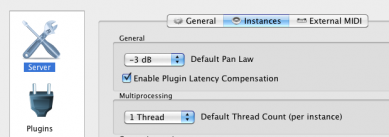
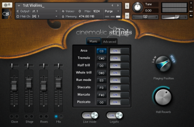
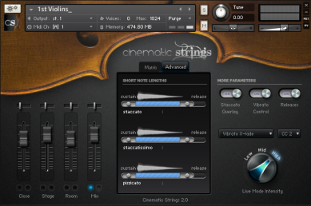
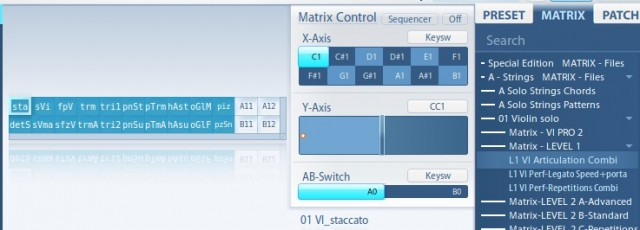
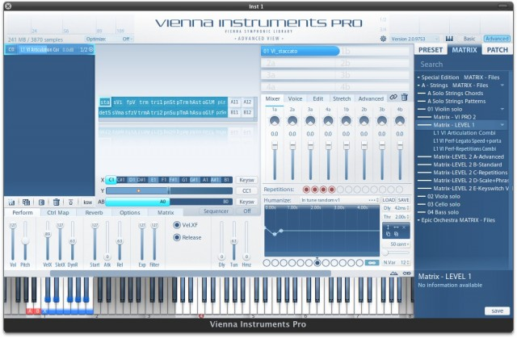

<?xml version="1.0" encoding="UTF-8"?><rss version="2.0"
	xmlns:content="http://purl.org/rss/1.0/modules/content/"
	xmlns:wfw="http://wellformedweb.org/CommentAPI/"
	xmlns:dc="http://purl.org/dc/elements/1.1/"
	xmlns:atom="http://www.w3.org/2005/Atom"
	xmlns:sy="http://purl.org/rss/1.0/modules/syndication/"
	xmlns:slash="http://purl.org/rss/1.0/modules/slash/"
	xmlns:itunes="http://www.itunes.com/dtds/podcast-1.0.dtd"
xmlns:rawvoice="http://www.rawvoice.com/rawvoiceRssModule/"
xmlns:googleplay="http://www.google.com/schemas/play-podcasts/1.0/play-podcasts.xsd"
>

<channel>
	<title>Technology &#8211; SCOREcastOnline.com</title>
	<atom:link href="." rel="self" type="application/rss+xml" />
	<link>http://www.scorecastonline.com</link>
	<description>Global Community for the Professional Media Composer</description>
	<lastBuildDate>Mon, 19 Jun 2017 08:43:18 +0000</lastBuildDate>
	<language>en-US</language>
	<sy:updatePeriod>hourly</sy:updatePeriod>
	<sy:updateFrequency>1</sy:updateFrequency>
	<generator>https://wordpress.org/?v=4.8</generator>
<!-- podcast_generator="Blubrry PowerPress/7.0.4 beta" mode="advanced" feedslug="feed" -->
	<itunes:summary>Global Community for the Professional Media Composer</itunes:summary>
	<itunes:author>Technology &#8211; SCOREcastOnline.com</itunes:author>
	<itunes:image href="../../../wp-content/plugins/powerpress/itunes_default.jpg" />
	<itunes:subtitle>Global Community for the Professional Media Composer</itunes:subtitle>
	<image>
		<title>Technology &#8211; SCOREcastOnline.com</title>
		<url>../../../wp-content/uploads/powerpress/sig-SCO.jpg</url>
		<link>../</link>
	</image>
<site xmlns="com-wordpress:feed-additions:1">29563098</site>	<item>
		<title>Templates II: Technology</title>
		<link>../../../2013/06/19/templates-ii-technology/</link>
		<comments>../../../2013/06/19/templates-ii-technology/#respond</comments>
		<pubDate>Wed, 19 Jun 2013 15:00:26 +0000</pubDate>
		<dc:creator><![CDATA[Tobias Escher]]></dc:creator>
				<category><![CDATA[Tutorials]]></category>
		<category><![CDATA[gear]]></category>
		<category><![CDATA[studio]]></category>

		<guid isPermaLink="false">../../../?p=2027</guid>
		<description><![CDATA[In the second part of SC's Template series, learn about the technology and methods involved in building an orchestral template.]]></description>
				<content:encoded><![CDATA[<p>Welcome back to SCOREcast’s Orchestral Template series! This time, we will delve a bit into the technical background of creating a template. There are some ways in which a template can be set up, each of them more suited to a particular workflow and situation. But don’t worry &#8211; it won’t get too technical </p>
<p>In a nutshell, there are two general ways of hosting a template:</p>
<p>1) Inside the sequencer</p>
<p>2) Outside the sequencer (go figure!)</p>
<p>Hosting your template inside your sequencer mainly has the advantage of being easy to set up by not requiring any additional software or even hardware. Such a template works much the same way as a regular project you are working on. You load the sequencer file and are good to go. The settings of the template (the instruments loaded into it as well as for example CC values) are unique to this project and are automatically present when opening the file. Sounds good, doesn’t it? It _is_ good, but there’s more!</p>
<p>Here is where a template outside of your sequencer comes into play. Having your sequencer just play host to all those tracks, but not actually process the instruments has a number of key advantages:</p>
<p>&#8211; The sequencer just stores MIDI data and possibly audio data (if you use recordings/loops…). This keeps it mean and lean and usually results in a much snappier user experience.</p>
<p>&#8211; If multiple projects use the same (or more or less the same) set of samples, you can use the same template. This means that when switching between projects, the samples can stay loaded and you only need to load the (small) project file into the sequencer.</p>
<p>&#8211; If you are using a 64bit host, hosting plugins externally allows you (depending on the method used) to use 32bit plugins „inside“ 64bit projects without resorting to a bit bridge, which tend to be notoriously unstable.</p>
<p>&#8211; Plain and simple, some instruments simply work better in an external host. Sounds weird, but it’s the truth.</p>
<p>&#8211; Last but not least, externally hosted instruments can also mean externally hosted as in „on a different machine“. As you will see (or probably already know), this is dead easy. If set up right, there is no visible or audible difference between instruments hosted on your DAW and instruments hosted on another machine.</p>
<p>&nbsp;</p>
<h2>Technical Requirements</h2>
<p>Before having a look at the various methods of creating an externally hosted template, lets briefly look at some of the technical aspects. Like with most software applications, a template requires CPU power and lots of RAM as well as fast storage. All this also applies to running individual virtual instruments, but in the case of templates it is much more pronounced.</p>
<ul>
<li><strong>Memory (RAM):</strong> As discussed in part I, a template contains all the instruments/articulations you commonly use, quite often multiple patches with the same articulations from different libraries. In any given piece, you will end up just using a subset of all that is there. Even though it is possible to largely purge the unused samples from memory, all these instruments still need a sizable amount of RAM to stay loaded. For creating a template, having as much physical (!) memory as possible is a must. For a small orchestral template, figure in at least 16GB. That will leave a bit of headroom for the sequencer and Operating System. 32 GB is pretty decent and 64GB will allow you to host a pretty large template on a single machine. While speed is important, size is more. You will not see a huge difference between RAM clocking at 1600 MHz or 1800 MHz. But you will feel the difference between 24 and 32 GB!</li>
<li><strong>CPU:</strong> Most sample-based instruments use scripting for producing the sound you want to hear. That means that every time you play a patch, some CPU cycles will be used for calculations inside the script. Fortunately, almost all libraries are programmed relatively well so that CPU time is only used when the instrument is actually doing something. Unless you happen to use one of the rare exceptions or use VIs that use CPU power all the time, your CPU load should not be much higher than on regular projects even with a large template. Figure in some additional CPU load for the hosting software, but all in all CPU cycles will be the least of your problems.</li>
<li><strong>Storage:</strong> With rare exceptions, sampled instruments only load a small part of the full sample into the system memory. The rest is streamed from disk while playing. This small part at the beginning, called the preload buffer, serves to give the sampler something to play while it is loading the rest of the sample when needed. How well this process works largely depends on how fast your drive is able to read the rest of the file. If it is not fast enough, you will hear clicks, pops or missing notes. If that happens, the preload buffer needs to be increased. If you have a very fast drive, you can lower the preload buffer greatly. So, in a nutshell: The faster your drives are, the less data you need to load into memory and the more instruments can you load in total. That means that while drive speed is about as important as it is with regular projects, your template will nevertheless benefit greatly from fast drives. Obviously SSDs are best, but expensive.</li>
<li><strong>Network:</strong> Should you wish to host parts of your template on another machine or even multiple machines, depending on the method used you will need additional hardware. If both MIDI data to the template and audio data back to your sequencer are handled via LAN, you will need an ethernet cable to connect the machines. If you have more than one slave machine, use a switch to connect. If you also need to get audio back separately to the sequencer, you might also need an additional audio interface. Make sure all network cards involved support gigabit speed. Also use compatible Cat5 or Cat6 cables. There is very little you can do wrong here, fortunately. Sometimes onboard network chips have issues like constant crackles or pops. If that happens to you, simply get a dedicated network card.</li>
</ul>
<p>&nbsp;</p>
<h2>External Setups</h2>
<p>When setting up a template where the instruments are hosted outside your sequencer, there are four different setup styles. Each way to set things up has advantages (+) and disadvantages (-). Usually one template will mix these approaches depending on the nature of the instruments to set up:</p>
<ol>
<li>Hosting instruments/patches outside the sequencer: What you do here is have as many instruments as possible running outside the sequencer. MIDI gets sent to the instrument, its audio comes back. Very easy and straightforward.
<p>+ Easy to set up, everything inside your sequencer feels as usual, no changes in workflow<br />
&#8211; Requires a lot of audio tracks going back into the sequencer, thus very heavy on the network when using slaves</li>
<li>Like 1, but with grouped audio channels: Instead of having each instrument’s audio going back to the sequencer separately, you can group instruments together. This may be on a smaller scale like all Flute patches together, or much broader, for example all high woodwinds. Primarily it depends on how similar the instruments are in usability and how much your connection can still handle.
<p>+ Saves a lot of audio tracks, lets you adjust whole instruments quickly.<br />
&#8211; Individual instruments can not be processed separately. Make sure to only combine instruments that will receive the same post-processing.</li>
<li>Post-processing outside the sequencer: Instead of getting the direct plugin audio back on single tracks (1) or grouped (2), especially for large templates it can make sense to to do all needed post-processing of the sound outside of the sequencer. This includes panning, adding reverb, EQing individual instruments and maybe even some light compression on some sounds. This means that what goes into your sequencer is the production-quality final sound, ready for export. This approach makes most sense if the FX chain stays the same all the time with no tweaks needed.
<p>+ What you hear is the final sound. Set it up once, have it in all projects.<br />
&#8211; Making changes can be cumbersome; exporting the untreated sound means switching stuff off in the template.</li>
<li>Audio to a different application/output: If you are the lucky owner of a kick-ass mixing desk or use special software for that purpose (for example a dedicated PT rig), you can also route the audio to this external source directly from the template instead of first feeding it back to your sequencer.
<p>+ As flexible as you can get in terms of routing<br />
&#8211; Harder to set up; also it usually requires some sort of external audio interface or virtual audio cables (like JACK).</li>
</ol>
<p>So much for today. I hope you got some idea of how to approach planning a template. In part III, we will have an in-depth look at the most popular solution for building templates, VSL Vienna Ensemble Pro 5 before finally planning an example template in part IV. Until then, keep writing great music! As always, write your feedback and questions in the comments.</p>
]]></content:encoded>
			<wfw:commentRss>../../../2013/06/19/templates-ii-technology/feed/</wfw:commentRss>
		<slash:comments>0</slash:comments>
	<post-id xmlns="com-wordpress:feed-additions:1">2027</post-id>	</item>
		<item>
		<title>Templates I: Introduction</title>
		<link>../../../2013/04/24/templates-i-introduction/</link>
		<comments>../../../2013/04/24/templates-i-introduction/#comments</comments>
		<pubDate>Wed, 24 Apr 2013 15:00:28 +0000</pubDate>
		<dc:creator><![CDATA[Tobias Escher]]></dc:creator>
				<category><![CDATA[Latest Resources]]></category>
		<category><![CDATA[Technology]]></category>

		<guid isPermaLink="false">../../../?p=2007</guid>
		<description><![CDATA[Sequencer templates have become an important part of most composers workflow. This first part of SC's new template series introduces the topic and explains what templates can do for you.]]></description>
				<content:encoded><![CDATA[<p>Howdy, fellow SCOREcasters! The industry we work in demands a lot. Time pressure, the need to stand out, to have a unique voice and most of all the actual need to come up with something good at all means we have to stay on top of our game as best as we can. One piece of the puzzle that has become ever more important in recent years is having a template. This article is the first part of a series dealing with exactly that. We will have a look at what a template actually is and why you should want to have one (or more). We will deal with the technology behind it (part II), some software to make it reality (part III) and how to approach building one for yourself (part IV). The journey does not end here, though. Based on your feedback, this series will continue with additional topics. So, after reading this first part, voice your thoughts and questions in the comments.</p>
<h2>What is a template?</h2>
<p>You’re sitting in front of your composing desk and have just read a brief. You’ve even managed to get a few ideas how to pull this off. You start up your sequencer, load in an instrument track, add an instance of your sampler, think of a nice patch to start with, load it in and begin playing. No, actually you don’t. Because by the time you have finally loaded everything, you have completely forgotten your brilliant musical idea. Its gone. *He’s dead, Jim!* Does this sound familiar? Hand up, please, everyone who has been in that situation. I sure have.</p>
<p>What if you were able to just play away when that bolt of inspiration strikes? How awesome would that be? That’s what templates are for. Simply put, a template in its most basic form is nothing more than a project in your sequencer which is already populated with a number of tracks containing instruments/articulations that you rely on all the time. So instead of having to create a track, loading Kontakt, searching for that string patch and loading it in, all you need to do is select a track and you’re good to go. Whenever you start a new project, instead of loading an empty session in your sequencer, you load a copy of your template.</p>
<h2>What is in there?</h2>
<p>You probably have a favourite piano patch. Maybe you even routinely use one when looking for inspiration. Just noodling away on one patch until you a nice tune creeps up is an important part of the creative process. Similarly, you have a favourite string library; that one particular trumpet patch; or even that big whooping bass synth sound that sculpts the low end of your tracks. Especially in the orchestral realm, over time as a composer you will build „your orchestra“ out of the various sample libraries you have purchased. This line-up stays relatively consistent between projects. Just have a look at your music and you will see that you have some preferences. All these patches have their place in your template. Being able to access them without first needing to load them in allows you to be creative the second you sit down at your composing desk. Furthermore, it obviously saves you a lot of time starting with a pre-populated arrange instead of having to load in the same stuff on every new cue.</p>
<h2>Do it once, have it for eternity</h2>
<p>Saving time actually is one of the main reasons why taking the time to set up a template makes sense: Things like routing, possibly stems, reverb setup and basic post-production are more or less the same on most tracks. If you use samples that need panning to sound realistic, those settings tend to stay the same in different projects. In a regular orchestral setup, the Violins I are panned quite a bit to the left, the Trumpets are more in the back to the right of the conductor. Using these settings you spent considerable time to set up and tweak in other projects not only makes sense, but also lets you be more productive. A template allows you to set everything up the way you need it and create new projects based on that work later.</p>
<p>The same applies to changes to patches. You might change CC assignments to make something work with your wind controller. Or map instrument parameters to knobs on your controller keyboard to be able to control them while recording. Having all this saved as part of your template makes sure it is exactly as you want it every time you begin a new project.</p>
<p>Last but not least, having everything set up in this way also helps with mixing: Different sample libraries have different relative volume levels. If you take the time once to adjust the volume of all patches relative to each other, you won’t need to work your faders so much anymore to get instruments to sound good together. Making sure the relative volume of different instruments is as close to the real thing as possible is an important part of creating realistic mockups.</p>
<h2>What is not in there?</h2>
<p>That’s an easy one! All those patches you only use on very specific projects are better of being project-specific, i.e. not being loaded as part of the template. This is to save loading time for the whole thing and to avoid having a large number of tracks that you only use once a year. So maybe this (admittedly gorgeous) baroque Viola d’amore patch might be better left out </p>
<h2>Manage your arsenal</h2>
<p>Having a template ready also is a way to make sure you actually use the samples you’ve got. Ever caught yourself just loading a generic string patch for noodling around and then ending up with that exact same patch in the final version, just because you couldn’t be bothered to look for a better one? A template with a variety of different patches for various uses lets you find the patch that fits best. It also invites you to toy around with instrumentation: How about giving that line to the Flute? Nah, that sucks, Oboe sounds better! Since all instruments are already there and you don’t need to create a new track or change an existing one to try out some other instrument, you can easily test different instrumentations.</p>
<p>Picture a template like a toolset. It provides you with quick access to all the instruments and patches you need, completely set up with your CC assignments, routing, reverb, and so on. In its most basic form, a template saves you time and makes sure you can begin writing quicker.</p>
<h2>What does it require?</h2>
<p>A template by its very nature contains a lot of tracks, not all of which you will use in every project. All these samples nevertheless need to be loaded, so hosting a large template first and foremost demands a lot of RAM. While it is possible to remove unused samples from memory, the bare patches still need some memory when loaded. But unless you are really low on memory, having a template far outweighs the disadvantages. It takes some time to plan a template and to set it up. We will deal with that part in a later article, but just so you know: This ain’t nothing to be done in a few hours. Some very good news at the end: The monetary requirements are as low as it can get. While it makes sense to use specialised software to host the template, this is not a must &#8211; and even if you do use this software, it is not very expensive. We will deal with all that in detail later. You can set up a basic template in your sequencer with no additional software or hardware required.</p>
<p>&nbsp;</p>
<p>I hope you found this article interesting. Part II will deal with the technical background of setting up a template and the various approaches to it. Post your questions and feedback in the comments below!</p>
]]></content:encoded>
			<wfw:commentRss>../../../2013/04/24/templates-i-introduction/feed/</wfw:commentRss>
		<slash:comments>8</slash:comments>
	<post-id xmlns="com-wordpress:feed-additions:1">2007</post-id>	</item>
		<item>
		<title>Scoring In PreSonus Studio One &#8211; MIDI Workflow</title>
		<link>../../../2013/01/31/scoring-in-presonus-studio-one-midi-workflow/</link>
		<comments>../../../2013/01/31/scoring-in-presonus-studio-one-midi-workflow/#comments</comments>
		<pubDate>Fri, 01 Feb 2013 07:22:57 +0000</pubDate>
		<dc:creator><![CDATA[Nikola Jeremić]]></dc:creator>
				<category><![CDATA[Recording & Prep]]></category>
		<category><![CDATA[SCOREcast University]]></category>
		<category><![CDATA[Sequencing & Mockups]]></category>
		<category><![CDATA[Technology]]></category>
		<category><![CDATA[Workflow]]></category>

		<guid isPermaLink="false">../../../?p=1955</guid>
		<description><![CDATA[Presonus Studio One power-user Nikola Jeremic takes you through the process of MIDI workflow in Studio One! ]]></description>
				<content:encoded><![CDATA[<p align="center">Part 3:  MIDI Composing</p>
<p>Okay, so we’ve covered the basic features of <b><i>Studio One</i></b>, and we know how to make a scoring template for composing.</p>
<p>Now it is time to show you the actual MIDI options and workflow of Studio One for composers.<br />
Before I start, I want to say one thing: Studio One is not designed for film composers, so its MIDI features lack the power of Logic or Digital Performer, because it is a relatively young DAW (Version 2.5).  But, I am pretty confident that Studio One 3 will bring on the “heavy weapons”.</p>
<p>Having said that, let’s get this thing started.</p>
<p><b>MIDI tracks</b> in Studio One are called <b><i>Instrument Tracks</i></b>. You add an Instrument track by <b><i>right clicking</i></b> in the <b><i>light gray area</i></b> to the left of the <b><i>project window</i></b>, and click the <i>Instrument Track</i> option in the drop menu.</p>
<p><a href="../../../2013/01/31/scoring-in-presonus-studio-one-midi-workflow/add-instrument-track" rel="attachment wp-att-1968"></a>If you want to add multiple Instrument Tracks, you <i>right click</i> again in the <i>light gray area</i>, and select the first option called <b><i>Add Tracks</i></b>. You can also use the default shortcut for this (T). Once you choose that, a window will open showing you different options of tracks and setups you wish to add. You can add the names of those tracks, the number of tracks you wish to add, types of tracks (in this case its instrument Tracks), color of the tracks, input of the tracks (you can instantly choose which MIDI controller you wish do use), and output of the tracks. Output is an actual MIDI instrument you wish to use with the Instrument Tracks (i.e. Kontakt). Once you’ve made your choice, click <b><i>OK</i></b>, and you’re good to go.<br />
<a href="../../../2013/01/31/scoring-in-presonus-studio-one-midi-workflow/multiple-tracks" rel="attachment wp-att-1969"></a>The principle of MIDI recording and editing is pretty much similar as in every other DAW out there. You record a track, double click on it, and a <b><i>piano roll</i></b> will open (F2 is the shortcut). You can edit almost everything in piano roll. All of the familiar tools are there: <b><i>point tool, split tool, paint tool (which has multiple options for writing), mute tool and listen tool</i></b>. Paint Tool kind of resembles of Photoshop paint tool, giving you options of writing freehand, sine wave, line, parabola, square wave etc.<br />
<a href="../../../2013/01/31/scoring-in-presonus-studio-one-midi-workflow/piano-roll" rel="attachment wp-att-1970"></a></p>
<p>There is also a dedicated Quantize tool with a lot of options (these are called actions in Studio One).<br />
<a href="../../../2013/01/31/scoring-in-presonus-studio-one-midi-workflow/quantize-tool" rel="attachment wp-att-1971"></a></p>
<p>I won’t go deep into the options, but one interesting thing is adding humanization to MIDI notes. Even though the MIDI clip is quantized, adding humanization will change the velocities of the notes and nudge quantization a bit.</p>
<p>All of the options and actions can be added and edited with the pain tool.<br />
Modulation can be hand drawn if you don’t have a keyboard with mod wheel.<br />
<a href="../../../2013/01/31/scoring-in-presonus-studio-one-midi-workflow/modulation" rel="attachment wp-att-1972"></a></p>
<p>Same thing goes for velocity, pitch, and you can add other parameters that you would like to use on the MIDI track.</p>
<p>You add them by <b><i>left clicking on the three dot tab</i></b>, on the left of velocity tab.<br />
Once you click there, a new window will open, showing you all of the MIDI parameters you can add to the track. It’s as simple as choosing an option and clicking on <b><i>Add button</i></b>.<br />
<a href="../../../2013/01/31/scoring-in-presonus-studio-one-midi-workflow/parameters" rel="attachment wp-att-1973"></a>You can also pick a <b><i>scale</i></b> to use for writing. On the left side of the piano roll, there is an option for choosing a scale. Just click on the <b><i>Root</i></b> of the scale to choose, and on the <b><i>snap value</i></b> to pick the type of scale you would like.<br />
<a href="../../../2013/01/31/scoring-in-presonus-studio-one-midi-workflow/scale" rel="attachment wp-att-1974"></a></p>
<p>There is one more cool option that Studio One has. Right clicking on the MIDI track in the project window, shows you all of the MIDI options that you can use on the track. I like especially the velocity and humanize options. Velocity option can come in handy.  For example, your note velocities are set like you wanted them, and you have copied a couple of same parts of the MIDI clip. You would like the next clip to play a bit louder than the previous one, but your note velocities are going up until 127. You right click on the clip, and change the velocity percentage of the clip a bit up, so it plays louder than the previous part. Or for example, the instrument is programmed to play different samples on different velocities, so you can use this option to change the velocity of the desired note that triggers the sample. The way I wrote it, sounds a bit confusing, but you’ll get the picture. <br />
<a href="../../../2013/01/31/scoring-in-presonus-studio-one-midi-workflow/right-click-options" rel="attachment wp-att-1975"></a></p>
<p>And that is pretty much it…</p>
<p>I hope these few posts are, and will be, of help to you in your future exploration of PreSonus Studio One.</p>
]]></content:encoded>
			<wfw:commentRss>../../../2013/01/31/scoring-in-presonus-studio-one-midi-workflow/feed/</wfw:commentRss>
		<slash:comments>1</slash:comments>
	<post-id xmlns="com-wordpress:feed-additions:1">1955</post-id>	</item>
		<item>
		<title>How to Use iTunes as a Reference Database</title>
		<link>../../../2012/12/05/how-to-use-itunes-as-a-reference-database/</link>
		<comments>../../../2012/12/05/how-to-use-itunes-as-a-reference-database/#comments</comments>
		<pubDate>Wed, 05 Dec 2012 16:00:00 +0000</pubDate>
		<dc:creator><![CDATA[Tobias Escher]]></dc:creator>
				<category><![CDATA[Latest Resources]]></category>
		<category><![CDATA[Technology]]></category>
		<category><![CDATA[Tutorials]]></category>

		<guid isPermaLink="false">../../../?p=1740</guid>
		<description><![CDATA[One of the most underrated applications on the planet, iTunes can be a powerful tool for finding reference material and inspiration in a heartbeat. This article as the first in a series about iTunes for Composers shows you how.]]></description>
				<content:encoded><![CDATA[<p>With a shiny new version of iTunes just having arrived from Apple’s secret labs, the timing is just perfect to introduce you to this software as a powerful tool for organizing reference material. iTunes is maybe the most underrated and misunderstood application on the planet. Many people just see it as a way to fill their iPhones. While it certainly is pretty good at doing that, it also can serve as a tool to give you access to music you might want to listen to for inspiration. iTunes also works great for cataloguing your own work for reference, but we will come to that in a future article.</p>
<p>So what are we talking about here? I don’t know about you, but at least I am constantly prompted to cal up this or that film score. People say „I want something like XY did in that film!“. Fortunately, with a big record collection, I usually have that particular score at hand &#8211; now all I need is to find it. Also quite often I search for inspiration in my collection. I want to listen to a bunch of horror film scores, but don’t know any particular names of films or composers. Or maybe I remember which year that particular album was from, but not the name. Either way, iTunes can help in these situations, provided that you organize your collection efficiently.</p>
<p>In this article I will show you a number of tips and tricks for making iTunes effortlessly present you with exactly what you are looking for when searching for inspiration.</p>
<p>1) Tag your stuff: It may be painfully obvious, but still most people do not correctly tag their music. Every track should have as much information as possible, including composer _and_ artist(s). If multiple artists (for example soloists) perform in one album, give all of them a common album artist. This will keep your albums together. Also fill out the year and CD number as well as track number tags. These are very important for finding tracks quickly.</p>
<p>2) Use the grouping for combining different sections of a work: The grouping tag is the most important tag for quickly finding tracks that belong together. For classical works, place the composer in this tag, followed by the name of the work. For example „Elfman &#8211; Serenada Schizophrana“. You can then just have the title of the movements in the track name and do not need to clutter six or seven tracks with the title of the work, followed by the movement title. This also allows you to at a glance see all the recordings you have of a particular work by just searching for its grouping.</p>
<p>3) Unify names: Quite a lot of names can either be spelled different ways (take Russian composers, for example: Shostakovich vs. Schostakowitsch) or are susceptible to being spelled wrong (for example Bernard Herrmann has had gruesome things done to this first and last name!). This happens a lot even on commercial releases &#8211; I have even seen an album in a major music store by „John Wilaims“. At least they were consistent in spelling the poor man wrong in the whole booklet, too. Check this &#8211; nothing is worse than frantically looking for that Michael Giacchino album which you absolutely know to have in your library, but not finding it, because the man is misspelled. This is double worse &#8211; and embarrassing &#8211; when happening in front of a client.</p>
<p>4) Use album covers: Many of us are visual thinkers. Having album covers for every album is a bit of work, especially if you need to scan in covers of rare to find albums, but especially in the light of iTunes 11’s reliance on a grid of covers as the main method of navigating, it is simply a must. Album covers also go a long way to bring as much of the good old vinyl days to the digital age. As artists we should always make sure to include cover art with albums as a token of respect for the talented people who created this artwork.</p>
<p>5) Use the sorting tags: In the track info window (Apple/Cmd-I) you will find a large number of tags that are used for sorting albums. You can use these to influence the order in which your albums are displayed inside the library. Basically what iTunes does is use those tags (if present) for sorting, but will still use the regular tags when displaying the albums. As an example, if you have an album called „X“ and call it „A“ in the Album for Sorting tag, it will appear under the letter „A“ inside your library, but will still be called „X“. These tags are extremely useful when grouping together albums that belong together in a series in a particular order, but would be sorted differently because of their names. One such series of film scores that comes to mind is Harry Potter. „C“ comes before „S“ or „P“ in the alphabet, so the second film (Chamber of Secrets) is sorted before the first (Philosopher’s/Sorcerer’s Stone). Just name them „Harry Potter 1“and so on  as the Album for Sorting and you are done. You will find that searching for „Chamber of Secrets“ will still have the album turn up in the search results because iTunes searches all tags by default and the sorting tags do not override the regular tags as far as searching is concerned.</p>
<p>6) Use unused tags: Chances are high you never need that BPM tag. Firstly, the BPM tend to change quite frequently in our kind of music. Secondly, you are unlikely to ever need to play your newest film score at the hottest club in town, where beat-matching is a must. Use this tag for organizing your music. You might for example enter the shelf number that particular CD is stored on, or the hard drive number where the cue is located. Anything that has numbers.</p>
<p>7) Use TV tags: Every file in iTunes can have the tags reserved for TV shows, even if it is not TV show or even a video file at all. Of course when cataloguing music for TV shows it makes perfect sense to use these tags. Enter the season, the episode number and additional information. For all other files, use these tags for other information, like the director of the movie, or the scoring stage the album was recorded at.</p>
<p>8) Be creative with genres: If you mainly have film scores in your library, there is no reason to leave the genre for all of them as „Soundtrack“. Firstly, as we all know, it is sort of incorrect because the soundtrack is everything you can hear, not just the actual score; secondly it makes no sense to have „Alien“ in the same genre as „The Sea Hawk“. Change the genre to „SciFi“ or „Golden Age“ and, voilà, searching for „Golden Age“ will magically pull up all scores fitting that era.</p>
<p>9) Understand the search function: The one basic thing about iTunes’ search to know is that it uses the „AND“ operator by default. So when looking for „Jerry Goldsmith SciFi“ it will pull up all tracks that have these two terms somewhere in their tags. „Alien“ will be in there; „Freud“ not so much. You can also search for ratings: „Alan Menken ****“ will pull up all albums with his name and four stars.</p>
<p>10) Make Smart Playlists: There will be an additional article about some Smart Playlists that have proven indispensable for me, but here’s my favorite: Make a playlist with the condition „Last played more than a year ago“. You will discover tons of great music that you haven’t listened to in ages. I guarantee you will immediately feel inspired to write the next big thing!</p>
<p>I hope these ten tips sparked your interest in iTunes and helped you get your collection up to speed. Stay tuned for more about collecting research material &#8211; and let me know what you think in the comments!</p>
]]></content:encoded>
			<wfw:commentRss>../../../2012/12/05/how-to-use-itunes-as-a-reference-database/feed/</wfw:commentRss>
		<slash:comments>4</slash:comments>
	<post-id xmlns="com-wordpress:feed-additions:1">1740</post-id>	</item>
		<item>
		<title>Smaller Kontakt Library Developers</title>
		<link>../../../2012/11/22/smaller-kontakt-library-developers/</link>
		<comments>../../../2012/11/22/smaller-kontakt-library-developers/#comments</comments>
		<pubDate>Thu, 22 Nov 2012 22:37:22 +0000</pubDate>
		<dc:creator><![CDATA[Matt Bowdler]]></dc:creator>
				<category><![CDATA[Gear]]></category>
		<category><![CDATA[gear]]></category>

		<guid isPermaLink="false">../../../?p=1901</guid>
		<description><![CDATA[We all know the big names of sample libraries development. But what about the less-known ones? Matt Bowdler explores a number of gems you can find without having to re-mortgage the house or break the bank...]]></description>
				<content:encoded><![CDATA[<p><span style="font-family: Cambria,serif;">As composers we are compelled to obsess about sample libraries. It&#8217;s like an illness. We hover around forums, when we should be writing music, seeing what our favourite developers are up to, when they&#8217;re going to release their latest mega-library and how we can possibly scrape a few pounds off the recommended retail price via discount codes and promo sales.</span></p>
<p><span style="font-family: Cambria,serif;">Soon it will be <a title="Black Friday" href="http://en.wikipedia.org/wiki/Black_Friday_%28shopping%29" target="_blank">Black Friday</a> and we are all sat, hitting refresh, waiting for our favourite sound manglers to reveal how big their sale is, hoping the expensive stuff we can&#8217;t really justify buying may be in an utterly implausible 99% off sale.</span></p>
<p><span style="font-family: Cambria,serif;">But, there is another way. A way that doesn&#8217;t involve crying, praying and gnawing our finger nails down to the elbow. And that way is buying less expensive libraries from smaller developers.</span></p>
<p><span style="font-family: Cambria,serif;">We are all familiar with the big-hitters such as <a title="Cinesamples" href="http://cinesamples.com/" target="_blank">Cinesamples</a>, <a title="8dio" href="http://8dio.com/" target="_blank">8dio</a>, and <a title="Spitfire Audio" href="http://www.spitfireaudio.com/" target="_blank">Spitfire Audio</a>. We are all fairly familiar with slightly smaller companies like <a title="SonicCouture" href="http://www.soniccouture.com/en/" target="_blank">SonicCouture</a>, <a title="Sonokinetic" href="http://www.sonokinetic.net/" target="_blank">Sonokinetic</a> and <a title="Impact Soundworks" href="http://impactsoundworks.com/" target="_blank">Impact Soundworks</a>. But there are many new companies out there making little specialised libraries that are amazingly cost effective and not lacking in competitive quality.</span></p>
<p><span style="font-family: Cambria,serif;"><a title="Embertone" href="http://www.embertone.com/" target="_blank"><strong>Embertone</strong></a><br />
I&#8217;m starting with Embertone as they are steadily moving into the realms of the well-known, through their combination of amazing legato scripting and cheap pricing policy. Their Chapman Trumpet, Jubal Flute and now Shire Whistle are slowly finding a place in everybody&#8217;s studio. And the promise of an upcoming solo violin library is hugely exciting news. If you haven&#8217;t already visited their website, make sure you go there credit card in hand!</span></p>
<p><span style="font-family: Cambria,serif;"><a title="Cinematique Instruments" href="http://www.cinematique-instruments.com/" target="_blank"><strong>Cinematique Instruments</strong></a><br />
If &#8216;eclectic&#8217; is what you&#8217;re after, this outfit are well worth a visit. Their unique collection ranges from obscure European string instruments (such as the Bowed Psaltery or German Monochord), through to electronic percussion of their Cement and Experimental Box series, via mallets, harmonicas and pianos. When you&#8217;re looking for a unique sound to add a little nuance to your work, you&#8217;ll find something here.</span></p>
<p style="text-align: center;"><a href="../../../2012/11/22/smaller-kontakt-library-developers/ci-german-monochord" rel="attachment wp-att-1904"></a></p>
<p style="text-align: center;">Cinematique Instruments&#8217; German Monochord</p>
<p><span style="font-family: Cambria,serif;"><a title="FocuSounds" href="http://www.focusounds.com/" target="_blank"><strong>FocuSounds</strong></a><br />
A brand new developer that has just arrived on the scene quite bravely with that obsession of all composers, solo strings. Their Sweet Cello and Sweet Violin aim to provide an affordable alternative to some of the bigger libraries, without any compromise on quality. If the demos are anything to go by, they appear to have done just that. And for those of us who want to put together string quartets, it&#8217;s always good to have another solo cello or violin.</span></p>
<p><span style="font-family: Cambria,serif;"><a title="Precisionsound" href="http://www.store.precisionsound.net/" target="_blank"><strong>Precisionsound</strong></a><br />
These Swedish developers offer a little bit of everything. Accordions, music toys, flutes, pianos, zithers, organs, synth textures and trailer tools await the happy shopper. My particular favourites are their European folk instruments. They have the finest kantele and cimbalom I know of. If you have a taste for non-orchestral instruments, you are bound to find something.</span></p>
<p><span style="font-family: Cambria,serif;"><a title="Pendle Poucher" href="http://dulcitone1884.virb.com/" target="_blank"><strong>Pendle Poucher</strong></a><br />
This curiously titled UK-based composer has only a few instruments, but they are unique to his site. Dulcitones are hard to come by, but here you will find two! They are exquisitely sampled, as is his Autoharp and Ship&#8217;s Piano. The true extraordinary gem in this collection is the Pendleonium, an original instrument put together by Pendle Poucher from a balalaika, a viola, a baritone guitar, a Roland chorus echo, Roger Linn amp and Vermona sing reverb. Madness, pure madness.</span></p>
<p><span style="font-family: Cambria,serif;"><a title="AudioThing" href="http://www.audiothing.net/" target="_blank"><strong>AudioThing</strong></a><br />
More singular instruments from Europe. Italian sample developers AudioThing have an obsession with providing sounds you just won&#8217;t find anywhere else. I first became aware of them from their Pong Glockenspiel library, the <em>definitive</em> &#8216;glockenspiel being played by dropping ping pong balls on it&#8217; library. On their site you will find instruments made from spray cans, toy harps and, most recently, a place called the Temple of Mercury in Naples – which really does need to be read about in more depth to be understood, but is a thing of strange beauty.</span></p>
<p style="text-align: center;"><a href="../../../2012/11/22/smaller-kontakt-library-developers/temple-of-mercury-04" rel="attachment wp-att-1905"></a></p>
<p style="text-align: center;">AudioThing&#8217;s Temple of Mercury</p>
<p><span style="font-family: Cambria,serif;"><strong><a title="Synth Magic" href="http://www.synthmagic.co.uk/" target="_blank">Synth Magic</a> and <a title="Hollow Sun" href="http://www.hollowsun.com/" target="_blank">Hollow Sun</a></strong><br />
Finally, last but by no means least, not all Kontakt libraries are devoted to instruments – be they orchestral, ethnic or just plain mad. Synthesizers also get a look-in and both Synth Magic and Hollow Sun are the finest purveyors of such rare synth classics as you can imagine.</span></p>
<p><span style="font-family: Cambria,serif;">Synth Magic&#8217;s roster includes the Jen SX3000, the Korg Delta, the ARP Quadra and the rather sublime but rare Farfisa Polychrome. Hollow Sun provide a beautifully detailed Crumar Performer, Moog Taurus and a Hammond Novachord. Plus they also make some strange synth instruments of their own that hark back to the days of valve relics and dusty oscillators in their Music Laboratory Machines catalogue.</span></p>
<p><span style="font-family: Cambria,serif;">So, there you go. You&#8217;ve no excuse to whine about not being able to afford new libraries any more. There&#8217;s a world of Kontakt (other sample players are available) joy to be had for a handful of shiny pennies, and it&#8217;s a world that will result in your music being that little bit different from your compadres and competitors. And don&#8217;t forget the heart-warming glow of knowing you&#8217;ve helped one of the little guys out.</span></p>
<p><span style="font-family: Cambria,serif;">If you have any favourite little developers out there, why not share them in the comments below? We all like a bargain.</span></p>
]]></content:encoded>
			<wfw:commentRss>../../../2012/11/22/smaller-kontakt-library-developers/feed/</wfw:commentRss>
		<slash:comments>17</slash:comments>
	<post-id xmlns="com-wordpress:feed-additions:1">1901</post-id>	</item>
		<item>
		<title>How to Use External VSTs with Sibelius 7: Part 2</title>
		<link>../../../2012/10/31/how-to-use-external-vsts-with-sibelius-7-part-2/</link>
		<comments>../../../2012/10/31/how-to-use-external-vsts-with-sibelius-7-part-2/#comments</comments>
		<pubDate>Wed, 31 Oct 2012 15:00:00 +0000</pubDate>
		<dc:creator><![CDATA[Tobias Escher]]></dc:creator>
				<category><![CDATA[Latest Resources]]></category>
		<category><![CDATA[Technology]]></category>
		<category><![CDATA[Tutorials]]></category>

		<guid isPermaLink="false">../../../?p=1744</guid>
		<description><![CDATA[In the second part of his tutorial, composer Derek Bourgeois deals with integrating VSL Vienna Instruments into Sibelius 7.]]></description>
				<content:encoded><![CDATA[<p><strong>This article is a guest post by composer Derek Bourgeois</strong></p>
<p>_______________________________________________</p>
<p>&nbsp;</p>
<p>Now let us look at how you would do this process using Vienna Symphonic Library.</p>
<p>The principal is exactly the same, but the interface looks very different.   You have to load Vienna Ensemble Pro before you start to create your instance.  You create the instance and link it to Sibelius.</p>
<p>Let’s take my Instance ‘VSL Percussion 1’.  You start with a blank canvas and add instruments one by one except in VE Pro you are able to name them as well. In ‘VSL Percussion 1’ I have a sundry collection of 16 assorted percussion instruments as you can see from the picture below.</p>
<p>You create your instrument by clicking on the little icon bottom left of the dialog. You assign the name and the channel, then you select either the Matrix or the specific patch and drag it into the area top left of the screen.  You can test it in a similar way to the way you tested it in EW Play.</p>
<p>Having created your instance you go back into Sibelius, and in exactly the same way you create a manual sound set for that instance selecting the soundset appropriate for the instance (in this case the soundset is VE Percussion).  Not all the sounds will be definable in preferred sounds because they are not all defined in the soundset that VSL provides (though I am assured that this will be updated soon), so a lot of them have no sound IDs available in the manual soundset dialog and although you can tell  preferred sounds.</p>
<p><a href="../../../2012/10/17/how-to-use-external-vsts-with-sibelius-7-part-1/vsl-1-ve-pro-interface" rel="attachment wp-att-1838"></a></p>
<p>Here is the Manual sound set dialog and you can see that a lot of the sounds simply have (none) as their sound ID.</p>
<p><a href="../../../2012/10/17/how-to-use-external-vsts-with-sibelius-7-part-1/vsl-percussion1-manual-soundset-dialog" rel="attachment wp-att-1837"></a></p>
<p>So for the moment I am going to show you various tweaks to persuade Sibelius to play the correct sound.</p>
<p>Let’s start with channel 3 which you can see from the VSL editor dialog is a Bass Drum although it is simply ‘percussion’ to the manual soundset.</p>
<p>You tell preferred sounds that for Bass drum which Sibelius defines as unpitched.drum.low.bass drum.concert.* It must use VSL Percussion 1</p>
<p>The Mixer duly obeys this when you create a bass drum stave having selected it from the Add instrument dialog.  But the mixer has no clue as to which channel to use, because as far as it is concerned it’s just percussion.  So it will very likely pick the wrong channel and the sound will come out as anything found in the instance (in my case it usually sounds like a snare drum which is channel 2 not 3).</p>
<p>The first line of defence is to tell the mixer to use channel 3, and in most cases this will work, but, alas, not always.  Even if it does work, you may prefer to use a particular one of the many bass drum sounds that the VSL patch has loaded.</p>
<p>So the next step is to highlight the stave and go into ‘edit instruments’.  Bass drum should be selected so press the ‘Edit Instrument’ button.  It should then appear as Unpitched Percssion in the next dialog.  Click on ‘Edit Staff Type’ and you will see something like this:</p>
<p><a href="../../../2012/10/17/how-to-use-external-vsts-with-sibelius-7-part-1/bass-drum-edit-instrument" rel="attachment wp-att-1827"></a></p>
<p>Let’s concentrate only on the first entry which is notehead type 0.</p>
<p>Select Choose Sound and select VE Percussion as your soundset.</p>
<p>What you will see is bewildering in the extreme as you can see below.</p>
<p><a href="../../../2012/10/17/how-to-use-external-vsts-with-sibelius-7-part-1/vsl-drum-choices" rel="attachment wp-att-1836"></a></p>
<p>You have to select one of the Bass Drum options for your Best sound but in order to decide which one you like best you’ll have to go into the VE Pro editor and try them all out using the keyboard and then remember which note plays the sound you most prefer. Let’s assume this is C#4 which is actually BassDrum secco (although I suspect that plain C4 Bass Drum is more than adequate). Make this selection and save it.  Then go into the mixer and hit Auto for the initial playback device.  This is important, because if you don’t you may well find that the mixer sound test plays a variety of bass drum noises, whereas your stave might sound like anything.  The other day I had an excellent Wind machine sound in the Mixer, and a thumping loud Anvil when the staff played back!</p>
<p>Only if this doesn’t work can you then tell the Mixer precisely what Instance and Channel to use. Having gone through these steps the chances are you’ll get the sound you are expecting.</p>
<p>Sometimes it requires a lot of trial and error to get the Mixer, the staff instrument, and the preferred sounds to agree with each other.  Personally I would very much prefer it if Sibelius allowed you to specify the precise Instance and channel for any particular sound.  This would short-circuit a lot of the problems, though you would still have to use edit instruments to define precisely what sounds you want on which line or notehead.</p>
<p>You may occasionally find, as I do, that sometimes your score overloads any configuration you may have if it has very fast doubled woodwind scales, is full of rapidly repeated notes , trills and especially measured string tremolandos.  The only recourse here is to make a special playback file and thin out all those doublings and duplicates which are not going to make a significant contribution to the playback. This has nothing to do with the amount of RAM you have, merely that you are asking the computer processor to do more simultaneous switching on and off of sounds than it can cope with.  There’s always a satisfactory solution.</p>
<p><strong>Some Extra Hints for East West playback problems</strong></p>
<p>I always find it useful to create a special playback file where you can provide all sorts of tweaks without worrying what the printout will look like. Using East West Symphonic Orchestra beware of the following:</p>
<p>&nbsp;</p>
<p><em>Flute only goes up to Bb6</em></p>
<p>Do a quick instrument change to Piccolo and back for the very high notes</p>
<p>&nbsp;</p>
<p><em>Contrabassoon will only play up to written Bb3</em></p>
<p>Double up the second bassoon for the missing notes</p>
<p>&nbsp;</p>
<p><em>Solo trumpet has no mute sound</em></p>
<p>Do an instrument change to Trumpet Ensemble which does have a muted sound</p>
<p>&nbsp;</p>
<p><em>Muted trombone will not play higher than F4</em></p>
<p>Do an instrument change to trumpet ensemble for the higher notes.</p>
<p>&nbsp;</p>
<p><em>A <strong>sf </strong>marking in Trombone only produces a note below C3</em></p>
<p>Make the <strong>sf</strong> inactive by using the Inspector and put in a hidden accent</p>
<p>&nbsp;</p>
<p><em>Violins, either solo or ensemble, will not playany note above C7</em></p>
<p>The only recourse here is to have a hidden staff dedicated to VSL or Sibelius 7 Sounds and put the non playing notes on this staff and hide them (unless it’s a dedicated playback file where it doesn’t matter what it looks like).  Most violin concertos and Brahms symphonies have violins going higher than C7. A serious omission in my view.</p>
<p>&nbsp;</p>
<p><em>Violas are far too loud relative to the other strings</em></p>
<p>Reduce the mixer volume, but beware of muted sounds where the normal balance is restored.</p>
]]></content:encoded>
			<wfw:commentRss>../../../2012/10/31/how-to-use-external-vsts-with-sibelius-7-part-2/feed/</wfw:commentRss>
		<slash:comments>1</slash:comments>
	<post-id xmlns="com-wordpress:feed-additions:1">1744</post-id>	</item>
		<item>
		<title>How to Use External VSTs with Sibelius 7: Part 1</title>
		<link>../../../2012/10/17/how-to-use-external-vsts-with-sibelius-7-part-1/</link>
		<comments>../../../2012/10/17/how-to-use-external-vsts-with-sibelius-7-part-1/#comments</comments>
		<pubDate>Wed, 17 Oct 2012 15:00:00 +0000</pubDate>
		<dc:creator><![CDATA[Tobias Escher]]></dc:creator>
				<category><![CDATA[Latest Resources]]></category>
		<category><![CDATA[Technology]]></category>
		<category><![CDATA[Tutorials]]></category>

		<guid isPermaLink="false">../../../?p=1741</guid>
		<description><![CDATA[Sibelius' ability to use 3rd party VST instruments is a powerful tool for well-sounding playback while composing. Composer Derek Bourgeois in a two-part guest post guides you through his setup for integrating EW Play and VSL VI into Sibelius.]]></description>
				<content:encoded><![CDATA[<p><strong>This article is a guest post by composer Derek Bourgeois</strong></p>
<p>_______________________________________________</p>
<p>In this article I will try and take the user through the various stages of actions needed to use most of the facilities available to create a large orchestral playback using external VSTs and Sibelius 7.</p>
<p>I am confining myself to the VSTs I own myself which are Sibelius 7 Sounds, East West Symphonic Orchestra, East West Symphonic Choirs, VSL Special Edition, and VSL Full Percussion.</p>
<p>Some of the instructions here may well be very familiar to readers, so you may want to select the sections that are relevant to any problems you may be having.</p>
<p>It’s worth saying at this point that to use these libraries successfully you need a fast computer running with a 64 bit operating system and sufficient RAM.  I use 24 GB of RAM, but half that should suffice for most projects.  Also if you have your libraries on a Solid State Drive (SSD) the loading and saving times are dramatically improved.</p>
<p>Sibelius 7 Sounds is different from other VSTs inasmuch as it uses its own playback engine, and allows only one instance to be used because it has built in 128 channels.  The only important thing when the Sibelius Player is added to your sound configuration is to select the correct soundset. To select a soundset double click in the column labelled Sound Set. You should see something like the following depending on which libraries you have loaded.</p>
<p><a href="../../../?attachment_id=1834" rel="attachment wp-att-1834"></a></p>
<p>&nbsp;</p>
<p>Sibelius Player does all the rest itself, and if it is the only VST selected you will probably only need the Mixer to adjust playback details and balance.</p>
<p>&nbsp;</p>
<p>&nbsp;</p>
<p align="center"><strong>CREATING AN INSTANCE AND USING THE PLAYBACK DEVICES DIALOG</strong></p>
<p>Using any other VST you have to create an instance using the device that comes with the Library. For East West products this is called Play and for Vienna Symphonic Library you use either Vienna Ensemble, which is free when you purchase any VSL Library, or preferably Vienna Ensemble Pro which is much better because it keeps your instances loaded even if Sibelius is not running and has far more sophisticated features.</p>
<p>An instance is a set of up to 16 channels each of which is dedicated to a particular instrument.</p>
<p>When you buy an East West Library you will also need to buy a Sibelius Soundset for that Library available from the Soundset Project, where you will find brilliant soundset for most of the East West Libraries.  These come with full instructions as to how to create your Play instances that will work with the appropriate soundset for the Library you are using.   the Soundset Project also provides a series of files called multis which load all the sound files that you need for the instance to work.  Basically the first two instances are dedicated to Woodwind, the next two to Brass, the fifth is percussion, the sixth solo strings, and the seventh ensemble strings.  These instances are used by the soundset to activate effects such as mutes, pizzicato, flutter-tonguing and a host of other effects, as well as choosing the correct instance and channel for every normal instrument automatically.</p>
<p>Assuming you will have followed all the instructions correctly you may then want to create additional instances of your own using non-standard instruments that are available in the library. I suspect that most of these extra instruments will be less often used percussion, so I will take you through how to create an extra instance.  You can name your instances by double clicking on the Device name and I have named mine Play 1 through 7 which are  the soundset&#8217;s own instances, and an extra one of my own called Play 8.  I will take you through how I created Play 8.</p>
<p>Firstly you have to invoke Play/Playback devices which is brought to the screen by clicking the (very) little arrow in Sibelius 7/Play/Setup You will then see a screen like this (you will see that I have created a lot of instances many of which I will describe later.</p>
<p><a href="../../../?attachment_id=1830" rel="attachment wp-att-1830"></a></p>
<p>To create my Play 8, first you have to invoke the Play setup screen by clicking on the Show button.  You then have to load into Play 8 all the instruments you want in that instance and select a channel for them.  You will see below that my first instrument is a harpsichord, and I selected it by choosing the correct Drive letter where my Library is stored, then selecting the Correct Library (in this case East West Symphonic Orchestra Platinum Instruments) selecting Platinum Strings and then Harpsichord and finally Harpsichord.ewi which is the file containing the necessary data for the harpsichord to play.  I then have the opportunity of loading or replacing the existing entry.</p>
<p align="center"><strong><a href="../../../?attachment_id=1832" rel="attachment wp-att-1832"></a> </strong></p>
<p>You can test the sound by clicking on the notes of the keyboard you can assign the MIDI channel using the button to the mid left of the screen.  But if you want to do anything cleverer you click on the button on the top marked Player.  You will then see this.</p>
<p><a href="../../../?attachment_id=1829" rel="attachment wp-att-1829"></a></p>
<p>You can see from this screen that you have the ability (if you wish) to fine tune just about every aspect of the sound.  You repeat this process to create all the other sounds you want in this instance (up to 16).</p>
<p>But this won’t work yet.</p>
<p>You have to create a manual soundset using the Manual Sound Sets tab in Sibelius Playback Devices in which you instruct Sibelius what sounds you are going to use for that instance.</p>
<p>You will need to select the Device (Play 8), the sound set (EWQL Play v3).  You have to tick the “Use manual sound set box, select the number of channels you are going to use (in my case 8) then channel by channel you select the Program name from the drop down box.  You can test this to make sure the sound you hear corresponds to what you expect to hear. Then you must apply it.  Gradually you will build up the list that you see on the right of the dialog. (see below)</p>
<p><a href="../../../?attachment_id=1833" rel="attachment wp-att-1833"></a></p>
<p>But you’re not done yet.  The relationship between the Manual sound set and the Sibelius mixer is a very delicate one, and for the sound to have any chance of working correctly first time round when you apply it to your score, you have to tell Sibelius what your preferred device is for that sound ID.  This is where things get complicated because although you can tell Sibelius what instance to use from which VST you can’t tell it which channel.  The preferred sounds and mixer work on Sound IDs and if you have a load of different percussion sounds in one instance, to the mixer these are often just percussion and it’s likely to get the channel wrong, and this is where it can get frustrating at times.  I’ll come back to this aspect later to tell you of the various ways I have found to overcome the problems that I have encountered.</p>
<p>This is a sample of what I have in my preferred sounds.  Don’t overlook this step because it is extremely important for preferred sounds to the bulk of the selecting work for the mixer. (see below)</p>
<p><a href="../../../?attachment_id=1831" rel="attachment wp-att-1831"></a></p>
<p>________________________________________</p>
<p>The second part of this two-part series will deal with integrating VSL Vienna Instruments into Sibelius.</p>
]]></content:encoded>
			<wfw:commentRss>../../../2012/10/17/how-to-use-external-vsts-with-sibelius-7-part-1/feed/</wfw:commentRss>
		<slash:comments>3</slash:comments>
	<post-id xmlns="com-wordpress:feed-additions:1">1741</post-id>	</item>
		<item>
		<title>How to Make Large DAW Templates Load Faster</title>
		<link>../../../2012/09/26/optimizing-load-distribution-for-large-templates/</link>
		<comments>../../../2012/09/26/optimizing-load-distribution-for-large-templates/#comments</comments>
		<pubDate>Wed, 26 Sep 2012 15:00:00 +0000</pubDate>
		<dc:creator><![CDATA[Tobias Escher]]></dc:creator>
				<category><![CDATA[Latest Resources]]></category>
		<category><![CDATA[Technology]]></category>
		<category><![CDATA[Tutorials]]></category>

		<guid isPermaLink="false">../../../?p=1739</guid>
		<description><![CDATA[Making a large template work well without hiccups, but still not demanding extremely powerful hardware is no easy task. But fortunately it is a task where there is plenty of room for optimizations. This article shows you a few tips and may come in handy.]]></description>
				<content:encoded><![CDATA[<p><strong>Most composers rely on custom composing templates for their work. No matter how we set them up, whether simply by feeding back audio channels into our master machine, or using specialized software such as VSL’s Vienna Ensemble Pro &#8211; they allow us to have the tools of our trade at our disposal at the click of a mouse. But the bigger these templates get, the more important caring for it and optimizing it will become.</strong></p>
<p>&nbsp;</p>
<p>As someone who has had the chance to set up quite a sizable number of composing templates with the help of VE Pro, I’ve had my fair share of bottlenecks that can really bring a template to a crawl. Fortunately, there are a few things you can do to make everything work as smoothly as possible. This article is based on Vienna Ensemble Pro 5, but most things mentioned here will probably also work with either VE Pro 4, or a completely different hosting software. You may even be able to use some of the tips when working solely in your sequencer.</p>
<p>A tiny bit of terminology: The machine where your sequencer (Logic, Cubase, Studio One,…) runs on is called „DAW“ in this article, which stands for Digital Audio Workstation. Any additional machines used for hosting instruments or for applying FX are called „Slave(s)“.</p>
<p>&nbsp;</p>
<h3>1) Planning a template:</h3>
<p>Before even thinking about building a template, you need to be aware of what you want to have in there. This is extremely important; not just to save time during the actual process of building the template (we’ll come to that in another article!), but also in making sure everything performs nicely. Regardless of whether you want to use external hosts like VE Pro or have everything sitting in your sequencer, the most important point to think about is load distribution. Spread your instruments over multiple instances of Kontakt/Play or whatever sampler you are using. If using VE Pro or similar software, do not fit everything into one single instance, but spread it a bit so that each instance has a bit to do all the time and not just one single instance working away like mad. If you have very CPU-intensive instruments, it can make sense so spread a single library over multiple instances of the sampler. You might for example want to have all your Violins and Violas in one Kontakt instance, with a second instance housing the Cellos and Basses. This way, the CPU load is distributed across two instances and consequently two cores.</p>
<p>Balancing the load gets even more important when using slaves. Make sure each machine shares an equal workload. It does not make sense to dedicate one machine solely to Sough-East-Carribean Bongo tremolos and other „esoteric“ sounds, unless you really need them daily. As a rule of thumb, I try to have the bread and butter sounds of one section as well as some more special instruments from another section per slave if enough slaves are available. So slave 1 would for example do all the basic woodwinds and some brass effects and the big taikos. Slave 2 has the basic brass sounds and more special woodwinds like alto flute, contrabassoon and some tuned percussion. And so on…  Of course how you spread things totally depends on the available resources and your way of working. Just try to balance things evenly. I know it is tempting to say „this machine does all the strings“, but this is not the best idea: As soon as you have a solo string piece, this one machine needs to do all the work and the rest sits around idle. Slaves give you the unique advantage of doing their own processing &#8211; they can be loaded to the brim and the DAW won’t even notice a hit in performance! Again more about this in greater detail in a later article.</p>
<p>&nbsp;</p>
<h3>2) Using fast drives/SSDs and adjusting the preload buffer:</h3>
<p>Most sampled instruments only load a bit of the sample material into the system memory and stream the rest from disk. The amount of what is loaded into memory is determined by preload buffer setting. I have found that it most of the time is set relatively high and can be lowered a fair bit even if you are using conventional hard drives. In fact, I still have a „green“ energy-saving drive in daily use and it performs remarkably well. If you use very fast drives (10.000rpm conventional drives or SSDs), you can set this preload buffer even lower. Lowering it means that your loaded samples consume less memory at the expense of your sampler needing to read much more directly from disk. Toy around with this setting and see what works for you. If you get crackles, pops, lost notes and other issues, raise it a bit.</p>
<p>In Kontakt 5, you will find the preload buffer setting in the options inside the Memory tab. By default it is set to 60kb; on regular 7.200 rmp drives you should be able to pull it back to at least 40 or even lower on pieces not requiring every single instrument to play at the same time.</p>
<p><a href="../../../?attachment_id=1768" rel="attachment wp-att-1768"></a></p>
<p>Vienna Instruments (Pro) has a similar setting in its options, accessible by clicking the little gearwheel icon:</p>
<p><a href="../../../?attachment_id=1771" rel="attachment wp-att-1771"></a></p>
<p>Again experiment with the settings to see what works for you.</p>
<p>&nbsp;</p>
<h3>3) Switching off unused or unnecessary articulations/mic positions:</h3>
<p>Sounds painfully obvious: It makes no sense to have stuff running you never need. If possible, switch off any articulations you do not need. Many sample libraries allow you to unload unused articulation directly within the plugin GUI. If that does not work, use the „Purge all“ feature if such a feature is present in the sampler you are using. Kontakt, for example, has this ability: Click „Purge all samples“ in the purge menu and Kontakt will unload all samples. Samples will then be reloaded while you use the instruments on a „need to“ basis.</p>
<p><a href="../../../?attachment_id=1769" rel="attachment wp-att-1769"></a></p>
<p>If you are using reasonably fast hard drives, or even SSDs, this process should be instantaneous. In any case, it saves you a ton of loading times after reloading the project and you can be sure that only the samples really needed in the project use up memory.</p>
<p>Most libraries also have the ability to unload unused microphone positions. Especially if you are using a 3<sup>rd</sup> party reverb quite heavily, switching off highly reverberated samples with lots of room information can not only save you a lot of memory, but also make your mix less cluttered. If you have a rather wet library or microphone position (i.e. one with lots of room information bakes into the samples), after applying a reverb, you basically have two rooms at the same time: The room where the samples were recorded and the room your reverb adds. Especially when using special positioning and reverberation tools such as VSL MIR Pro with 3<sup>rd</sup> party sample libraries, it is often a good idea to only use the close microphone position, if one is available. VSL MIR in particular works best with extremely dry samples.</p>
<p>&nbsp;</p>
<p>Both tips 2 and 3 do not directly influence CPU load, but they do indirectly: With a lower preload buffer, CPU load will increase a tiny bit because more stuff needs to be loaded. This effect, however, is negligible in most cases. Having less articulations loaded reduces the amount of samples that need to be loaded. And reducing the number of active microphone positions means less samples need to by played at the same time when pressing a key.</p>
<p>&nbsp;</p>
<h3>4) Only switch on multicore support for one host:</h3>
<p>Most hosting applications and samplers today have multicore support. That means that they will intelligently balance their workload over all available cores of your machine. Some also allow you to specify a number of cores for the application to use. While this in theory is all nice and well, the cold harsh reality quickly shows that these multicore balancing features tend to get in each others way. One practical example: If you host Kontakt 5 within VE Pro 5, by default, both applications have multicore support enabled. It is my experience that CPU consumptil will drop noticeably when you either switch off multiprocessing in Kontakt, or alternatively in VE Pro. In my experience, setting VE Pro to use 2 threads per instance and switching off Kontakt’s multicore support works best, but you should definitely try this for yourself!</p>
<p>You can find the relevant settings in VE Pro’s and Kontakt’s Options:</p>
<p><a href="../../../?attachment_id=1770" rel="attachment wp-att-1770"></a></p>
<p><a href="../../../?attachment_id=1767" rel="attachment wp-att-1767"></a></p>
<p>Especially on OSX, if your VE Pro instances consume 10-20% CPU per instance when doing absolutely nothing, this will most likely solve the issue! I have so far not seen any performance impact by switching off multicore support &#8211; on the contrary. If you are running parts of your template in the DAW, make sure to experiment a lot with different multicore settings: Having both VE Pro (or any other host) as well as your sequencer running, both of them probably offering support for threads, it might even make sense to deactivate multiprocessing support completely in the sequencer. I have made very good experiences doing that with Cubase, especially on the Mac.</p>
<p>&nbsp;</p>
<h3>5) Bonus Cubase Tip: Use only 8 MIDI ports for VST3:</h3>
<p>This one curiously enough has crept up at least a dozen times in the last two weeks: Many people using Cubase with very large templates have only two or three VE Pro instances, because the VST3 version of VE Pro allows the use of multiple MIDI ports. Consequently, they use a lot of ports &#8211; the highest I have seen was 64 MIDI ports per instance.</p>
<p>(Let us briefly hold a minute’s silence for all Logic and DP users out there stuck with just 1 MIDI port as part of the Audio Unit plugin standard. Ok, minute over.)</p>
<p>Cubase users with lots of MIDI ports face the issue that their templates will take ages to load. This is due to a behaviour of Cubase that makes it take a very long time to initialize any VST3 plugin that exceeds 8 MIDI ports. What I have heard is that Cubase somehow initializes all the additional ports and checks their allocations. The first eight MIDI ports are not treated this way. This is why it makes sense to only use 8 MIDI ports per VE Pro instance and in order to be able to have the number of instruments required, use more instances with 8 ports instead of just a few instances with 64 ports.</p>
<p>As far as I can tell, only Cubase shows this behaviour. Users of Studio One (which is also able to use VST3 plugins) can use 64 ports without overly long loading times.</p>
<p>&nbsp;</p>
<p>&nbsp;</p>
<p>I hope you found this article informative. In due course there will be a second one with some planning advice for templates, as promised earlier. Post your feedback and questions in the comments and I’ll be happy to address it.</p>
]]></content:encoded>
			<wfw:commentRss>../../../2012/09/26/optimizing-load-distribution-for-large-templates/feed/</wfw:commentRss>
		<slash:comments>6</slash:comments>
	<post-id xmlns="com-wordpress:feed-additions:1">1739</post-id>	</item>
		<item>
		<title>Gear Alert: Sonokinetic releases BAGIPES for UVI</title>
		<link>../../../2012/09/21/gear-alert-sonokinetic-releases-bagipes-for-uvi/</link>
		<comments>../../../2012/09/21/gear-alert-sonokinetic-releases-bagipes-for-uvi/#respond</comments>
		<pubDate>Fri, 21 Sep 2012 13:00:00 +0000</pubDate>
		<dc:creator><![CDATA[Tobias Escher]]></dc:creator>
				<category><![CDATA[Latest Resources]]></category>
		<category><![CDATA[Technology]]></category>
		<category><![CDATA[gear]]></category>

		<guid isPermaLink="false">../../../?p=1772</guid>
		<description><![CDATA[With their release of BAGPIPES, Sonokinetic are supporting the UVI platform for the first time. The collection of four bagpipes from different European regions is available as a digital download.]]></description>
				<content:encoded><![CDATA[<h3>Sonokinetic has released &#8220;BAGPIPES &#8211; 4 European Bagpipes&#8221;, a collection of four bagpipes from various regions of Europe.</h3>
<p>According to the developer, the library &#8220;incorporates several Sonokinetic signature features such as Intelligent Tempo Mapping, Performance-Articulation combination and tempo-sync bypass options. The bagpipes are recorded as dry as possible allowing for ultimate flexibility with mixing and placement. We have provided an authentic Impulse Response within the interface for a realistic pipe reproduction.“</p>
<p>With over 3000 samples and about 3.1 GB of sample content, BAGPIPES offers four instruments from different regions: Belgium (Muchosa), Lowlands (Doedelzak), Spain (Galiza), and Scotland (G Highland). The library also offers tempo-synced phrases, pitched in every key as well as legato scripting.</p>
<p>Apart from its musical capabilities, BAGPIPES also stands out as Sonokinetic’s first new release to exclusively use the UVI Engine. The company states: &#8220;The instrument itself runs in the free UVI Workstation or full version of MachFive. This means that we can present more realistic tempo-synced and timelocked phrases than ever before, utilizing the powerful algorithms of MOTU playback engines.&#8221; This release is not compatible with the Kontakt 5 sampler, but instead is exclusive to the UVI platform.</p>
<p>Together with BAGPIPES, Sonokinetic also released a new version of their CAROUSEL fairground organ library for UVI Workstation and MOTU MachFive.</p>
<p>BAGPIPES retails for 79.90€ and is available from <a title="Sonokinetic" href="http://www.sonokinetic.com" target="_blank">Sonokinetic’s website</a> as a digital download. The library requires an iLok USB Key for copy protection.</p>
<p><a href="../../../?attachment_id=1773" rel="attachment wp-att-1773"></a></p>
]]></content:encoded>
			<wfw:commentRss>../../../2012/09/21/gear-alert-sonokinetic-releases-bagipes-for-uvi/feed/</wfw:commentRss>
		<slash:comments>0</slash:comments>
	<post-id xmlns="com-wordpress:feed-additions:1">1772</post-id>	</item>
		<item>
		<title>Fingerprint your cues – Tyberis Music Database</title>
		<link>../../../2012/09/19/fingerprint-your-cues-tyberis-music-database/</link>
		<comments>../../../2012/09/19/fingerprint-your-cues-tyberis-music-database/#comments</comments>
		<pubDate>Wed, 19 Sep 2012 15:00:00 +0000</pubDate>
		<dc:creator><![CDATA[Stephan Römer]]></dc:creator>
				<category><![CDATA[Latest Resources]]></category>
		<category><![CDATA[Technology]]></category>
		<category><![CDATA[gear]]></category>
		<category><![CDATA[organization]]></category>

		<guid isPermaLink="false">../../../?p=1737</guid>
		<description><![CDATA[Composer Stephan Römer in his first article in SCO has found a true gold nugget: Tyberis Music Database allows you to fingerprint your audio files and recognize them later just by playing them back. It is perfect for keeping track of cue use in a TV series or similar scoring situation.]]></description>
				<content:encoded><![CDATA[<p><strong>Music recognition for composers</strong></p>
<p>This is my first article for ScoreCast Online. I hope you enjoy!</p>
<p>Yesterday, I stumbled across a very useful tool and thought it might be useful for some of you guys.</p>
<p>A couple of words about my background and why this tool is useful for me: For quite a while now, I&#8217;m the composer of the German TV series &#8220;Die Fallers&#8221;. In the meanwhile I have over 700 cues that I composed for the series. When I receive new episodes, they are usually temped with my own music and from time to time there are themes which might be worth to be used as a basis or be developed further for a scene.  Now the problem is: how to find that single track in an archive with over 900 tracks? Of course I could call up the editor and ask for each single track they used. But usually, they are already busy with other projects. So what could we do to make our life easier? A database? Good starting point. With tags, keywords, descriptions? Well, yes, this might work but the time to create an extensive database with all kinds of bells and whistles would be immense. And there is no guarantee that you will find what you are looking for just by searching for keywords and descriptions.</p>
<p>The solution is (drum roll): a database of audio fingerprints, or to put it differently: music recognition. Think Shazam, SoundHound, etc… but for you very own music library!</p>
<p>I had a hard time to find a tool for this task but here it is: <a title="Tyberis Music Database" href="http://music.tyberis.com/" target="_blank">http://music.tyberis.com/</a></p>
<div id="attachment_1738" style="width: 399px" class="wp-caption aligncenter"><a href="../../../?attachment_id=1738" rel="attachment wp-att-1738"></a><p class="wp-caption-text">Screenshot of Tyberis Music Database</p></div>
<p>What you basically do is, you feed the program with your own music (WAV or MP3 but only at 44,1kHz and 16Bit!) and it creates fingerprints for these tracks. Creating the database happens fairly quickly. I added all my tracks within 2 or 3 minutes. Now after having done that, you put a check on &#8220;channel active&#8221; (this will monitor the audio output, you have to set the right one in preferences) and play back the temp track in your DAW or audio player and it will recognize the played track and show the title in the database, voilà!</p>
<p>As you can read on the website, the program was actually intended for bands who want to monitor radio stations for their songs. You see, there are many possibilities!</p>
<p>The only downside of this great program is that it&#8217;s Windows only. But it can be run in Parallels, VirtualBox, VMWare Fusion or in Bootcamp.</p>
]]></content:encoded>
			<wfw:commentRss>../../../2012/09/19/fingerprint-your-cues-tyberis-music-database/feed/</wfw:commentRss>
		<slash:comments>3</slash:comments>
	<post-id xmlns="com-wordpress:feed-additions:1">1737</post-id>	</item>
		<item>
		<title>CineBrass Core and Pro – A Retrospective</title>
		<link>../../../2012/09/12/cinebrass-core-and-pro-a-retrospective/</link>
		<comments>../../../2012/09/12/cinebrass-core-and-pro-a-retrospective/#comments</comments>
		<pubDate>Wed, 12 Sep 2012 15:00:00 +0000</pubDate>
		<dc:creator><![CDATA[Guy Rowland]]></dc:creator>
				<category><![CDATA[Gear]]></category>
		<category><![CDATA[gear]]></category>

		<guid isPermaLink="false">../../../?p=1619</guid>
		<description><![CDATA[With Cinebrass Core and Pro, Cinesamples introduced a well-thought out brass library to market, giving composers some much-needed ammunition for their daily work. SCOREcast's Guy Rowland look back at these two libraries and gives you the scoop about what they can do for you.]]></description>
				<content:encoded><![CDATA[<p style="text-align: center;"><a href="../../../2012/09/12/cinebrass-core-and-pro-a-retrospective/cinebrass-boxes" rel="attachment wp-att-1623"><br />
</a></p>
<p>&nbsp;</p>
<p>By now most SCOREcast readers will be familiar with CineBrass. Like the recently released CineWinds, It was famously recorded at the prestigious Barbara Streisand Scoring Stage at Sony, home of a thousand blockbuster scores, and also for using union, named players. Initially the library was released with just 12 lean, mean, highly configurable patches as a result of a day&#8217;s recording session which covered the essentials, then a Pro expansion was released several months later. This second product was the result of 2 days sessions, and greatly expanded both the depth and range of instruments.</p>
<p><a href="../../../2012/09/12/cinebrass-core-and-pro-a-retrospective/cinebrass-articulations-2" rel="attachment wp-att-1622"></a></p>
<p>CineBrass Core (the renamed original library) quickly established a reputation for a killer out of the box sound like no other commercial brass library. The right players in the right space with the right recording engineers gave that instant hit, from the plaintive solo horn to the euphoric trumpet ensemble, this was truly a “familiar” sound, in the best sense. Turns out that if you record some of John Williams&#8217; players in the space where Indiana Jones was actually recorded, you get Hollywood in a virtual box.</p>
<p>But the library was not without its problems. The solo instruments had only one velocity layer, and several crucial articulations were missing. Also a disappointment was that the legato performance was problematic. However nice the Sony ambiance is, users quickly complained that on faster passages, the build up of it turned a performance into a bit of a mush.</p>
<p>The two-pronged response from CineSamples was to simultaneously improve Core with a revision, and release Pro to fill in the gaps. The latter featured many more solo instruments with multiple velocity layers, mutes, a new 12 horn patch, stopped and fluttered horns and some chord patches. Meanwhile the 1.1 revision for Core also added new features like a very clever double and triple tonging script, layered shorts on sustain high velocities for more attack and drastically tweaked legato which enabled much faster playing. However, the latter came at a price&#8230; the mush may have gone, but in some cases so too did a lot of natural ambiance. The rejigged trumpet ensemble worked very well, but the 6 horn legato patch in particular only really worked on p / mf levels. Pushing up the modwheel, the transitions seemed to vanish completely and the ambiance was severely truncated. In that particular case, you could play faster, but it didn&#8217;t sound natural any more, even on slow passages.</p>
<p><iframe src="//w.soundcloud.com/player/?url=http%3A%2F%2Fapi.soundcloud.com%2Fplaylists%2F2457269%3Fsecret_token%3Ds-Sxurj&amp;show_artwork=true&amp;secret_url=true" frameborder="no" scrolling="no" width="100%" height="450"></iframe></p>
<address>A Cmaj-scale played from p to f first on the original 1.0 patches, and then on the 1.1 revision. You can hear that the faster run downs sound cleaner on p and mf 1.1, but the legato on the 1.1 f layer is unconvincing.</address>
<address> </address>
<p>So the question is – CineBrass Pro may expand the range, but does it fill in ALL the gaps?</p>
<p><strong>Pro Legato</strong></p>
<p style="text-align: center;"><a href="../../../2012/09/12/cinebrass-core-and-pro-a-retrospective/cinebrass-pro-solo-legato" rel="attachment wp-att-1627"></a></p>
<p style="text-align: left;">In general, Pro is far more nimble to play than the original version of Core. They&#8217;ve clearly reigned in the ambiance on the interval samples to achieve that improved playability, but it avoids the more unpleasant side effects you occasionally hear in Core 1.1. It still isn&#8217;t as expansive as Core&#8217;s 1.0, but the trade off is that it makes it more versatile. And of course&#8230; you can always add more ambiance, but you can&#8217;t take away (well, unless you have Zynaptiq&#8217;s amazing new UNVEIL plugin&#8230;)</p>
<p>Core and Pro come with a sampled Bristacti M7 reverb, with the intent to keep resource use down. A great idea, and it sounds very nice on non-legato articulations, but doesn&#8217;t work on the legato patches, as it can&#8217;t ring out naturally – again, the scripting artificially truncates it, so you actually make the existing problem worse. So with Pro more than the original release of Core, this library needs a little help from a good additional reverb if you&#8217;re playing the legatos in particular. It feels like a bit of a shame that we&#8217;re not getting the full benefit of that Sony stage (or more specifically its tail) when using legato, but perhaps the guys have reached the limit that scripting can accomplish.</p>
<p><iframe src="//w.soundcloud.com/player/?url=http%3A%2F%2Fapi.soundcloud.com%2Fplaylists%2F2457248%3Fsecret_token%3Ds-hZwY7&amp;show_artwork=true&amp;secret_url=true" frameborder="no" scrolling="no" width="100%" height="450"></iframe></p>
<address>These examples use the same basic fast Cmaj scale with cc1 dynamics. The first is the straight mix of the three mic positions, the second adds the sampled Bristacti, the final reverts just to the mix but adds a Waves Todd A-O scoring stage impulse response on the Kontakt output.</address>
<p>&nbsp;</p>
<p>The solution, therefore is to dial in your plugin or hardware unit of choice to add some tail onto the legato patches. In fact, CineSamples are soon to release an update to the CineBrass range which takes the user interface from the new CineWinds library, and this will have a built in convolution reverb based on their Bricasti settings &#8211; a clever touch. And with some non-sampled tail added to the legatos, the net effect is terrific. 12 horns is pretty formidable at the fff level, but it doesn&#8217;t sound ridiculous either – indeed the lowest velocities have a beautifully restrained tone. I find myself using it a lot with CC1 dialed low &#8211; just sounds sensational &#8211; and the interval samples are bang on. In the main it&#8217;s also a lot smoother than the original 6 horn patch, which felt quite uneven up and down the keyboard.</p>
<p style="text-align: center;"><a href="../../../2012/09/12/cinebrass-core-and-pro-a-retrospective/cinebrass-core-legato" rel="attachment wp-att-1624"></a></p>
<p>The horns do still have one significant flaw, however. Apparently, due to issues CineSamples discovered when scripting and editing, the upper notes in the legato or articulation sustain patch can only sound fff if you&#8217;re playing a legato transition. It&#8217;s a strange thing – if you play the notes non-legato in the top half octave, you can&#8217;t get above an mp. This is a real shame, depending on the phrase, it can pretty dramatically sound like the brakes are applied. It&#8217;s a slight irony after the problems with the original 6 horn legato that they got the new legatos spot on, but some of the basic sustains don&#8217;t match!</p>
<p><iframe src="//w.soundcloud.com/player/?url=http%3A%2F%2Fapi.soundcloud.com%2Fplaylists%2F2457273%3Fsecret_token%3Ds-ENjkM&amp;show_artwork=true&amp;secret_url=true" frameborder="no" scrolling="no" width="100%" height="450"></iframe></p>
<address>The fff legato now copes very well with the fast scale, however the fff sustains suffer in the top half octave. The fifths with dynamics demonstrate the smoothness of the dynamics and legato transitions – much, much better than Core!</address>
<address> </address>
<p>The rest of the library expands the range almost as much as you&#8217;d hope, fitting in indistinguishably tone-wise with the original. You obviously have much more range with the solo instruments, and the tuba is exceptionally good, really playable. Needless to say, the versatility is greatly increased with the Pro solo sections, having added 3 velocity layers. However, the original trumpet and horn are still indispensable for quieter emotive parts, there&#8217;s still something really special about them, so don&#8217;t be tempted to eject them from your template. There is one major omission still from the final combined line up – there is no trombone ensemble legato patch, which is a real shame, since the tone of the ensemble articulations in Core is absolutely superb.</p>
<p><a href="../../../2012/09/12/cinebrass-core-and-pro-a-retrospective/cinebrass-articulations-3" rel="attachment wp-att-1625"></a></p>
<p>A real highlight of Pro turns out to be the orchestrated chords, an idea borrowed from CineSamples own CineOrch. The horns triads are especially good, with major and minor inversions (audio example), and a separate patch for 7th variations. The scripting on these patches is excellent, highly playable with CC1 control, there&#8217;s a palpable air of realism here with the correct voice leading. Well worth taking the time to get around the various configurations of chords on the keyboard.</p>
<p><iframe src="//w.soundcloud.com/player/?url=http%3A%2F%2Fapi.soundcloud.com%2Ftracks%2F52584307%3Fsecret_token%3Ds-KveZc&amp;show_artwork=true&amp;secret_url=true" frameborder="no" scrolling="no" width="100%" height="166"></iframe></p>
<p>The library has attracted a little criticism in other areas. You have 3 lengths of short avaiable, and some find this too limiting, while others have pointed out that the dynamic range could be increased in terms of volume (as opposed to the number of velocity layers). A gentle p passage is still relatively loud – perhaps a future revision could add some additional level of dynamic control. I don&#8217;t find either of these limitations too much of a problem in practice, in the case of the latter, it&#8217;s just a case of riding the volume where needed.</p>
<p><strong>Verdict</strong></p>
<p>CineBrass is your classic flawed masterpiece. First and foremost – the tone is uniformly great. Specifically, in Core the original trumpet ensemble is utterly sublime, the low patches are terrific and the solo instruments absolutely nail the plaintive Saving Private Ryan feel. Pro gives you (mostly) killer horns, exquisite orchestrated chords, versatile solo instruments and a slew of effects. The conclusion regarding which one to buy is perhaps inevitable – most users really will need both. Indeed if you own the combo, exclusive bonus patches that make use of sample sets from both libraries are on their way. If you really can only have one, I&#8217;d pick Core.</p>
<p>Even both together doesn&#8217;t have the breadth of articulations of East West&#8217;s Hollywood Brass, but arguably more than makes up for it in other areas – both are Kontakt player libraries, recorded in pretty much the greatest brass space in Hollywood with the crème de la crème of players scoring today, outstandingly playable orchestrated chords and it&#8217;s easy on resources. It&#8217;s a real shame that for their latest release &#8211; CineWinds &#8211; the players&#8217; union, AFM, has decided not to continue their association with CineSamples.  It seems they got cold feet with regard to being associated with sampling &#8211; something which is perhaps worthy of a post of its own.  However, CineSamples assure us that they will continue to share the revenue from their products with the musicians and engineers, whether the product has an AFM badge or not.  And major kudos to them for doing so.</p>
]]></content:encoded>
			<wfw:commentRss>../../../2012/09/12/cinebrass-core-and-pro-a-retrospective/feed/</wfw:commentRss>
		<slash:comments>3</slash:comments>
	<post-id xmlns="com-wordpress:feed-additions:1">1619</post-id>	</item>
		<item>
		<title>The Best in Free FX-Plugins</title>
		<link>../../../2012/07/19/the-best-in-free-fx-plugins/</link>
		<comments>../../../2012/07/19/the-best-in-free-fx-plugins/#comments</comments>
		<pubDate>Thu, 19 Jul 2012 13:00:20 +0000</pubDate>
		<dc:creator><![CDATA[Matt Bowdler]]></dc:creator>
				<category><![CDATA[Gear]]></category>
		<category><![CDATA[gear]]></category>

		<guid isPermaLink="false">../../../?p=1654</guid>
		<description><![CDATA[Composer and sound-designer Matt Bowdler looks at some of the most promising free plugins that can make your productions sound top-notch without you having to break the bank!]]></description>
				<content:encoded><![CDATA[<p style="text-align: justify;">Though most of us enjoy the concept of something being free, the majority of the time there are two common reactions to ‘free’ things. The first type elicits the response “I’m not surprised it’s free, I wouldn’t pay for that rubbish.” The second type attracts suspicion: “Why is this free? What’s wrong with it? What do they really want?”</p>
<p style="text-align: justify;">Such derision and suspicion is not always warranted, and this is very much the case in the world of VST/AU effects. You may wonder why, after having spent four figures on compressors and EQs, you would worry about anything that is free. Surely it can’t equal that expensive, shiny stuff that’s just made your credit card buckle?</p>
<p style="text-align: justify;">Well, I think it can. I use a lot of free effects in my mixes and also when mastering – whether it be scoring or electronica. Many of the effects I’ve paid for (although I won’t name names) are often replaced by free alternatives. So, here are some of what I consider to be the best VST and AU effects out there right now, starting with the VST only ones.</p>
<h2 style="text-align: justify;"><strong>VST Only Effects</strong></h2>
<p style="text-align: justify;">It is the nature of the beast of developing freebies that they are more likely to be PC-based, simply because of the hardware overheads. Also, the market at that ‘price level’ contains far more PC users than Mac users.</p>
<p style="text-align: justify;">There’s only one place to start when it comes to quality free VST-only effects and that’s at <a href="http://www.varietyofsound.wordpress.com/">Variety of Sound</a>. Bootsie has been developing quality plug-ins for a few years now and has racked up a solid collection of excellent VST effects. Among the highlights is the new <strong>Density MkIII</strong>. This brand new incarnation of his mastering compressor is a wonderful piece of software. It’s predominantly designed to help glue all the elements of your mix together as a coherent whole, but has rather an impressive ability to do more than that. Applying to a mix adds punch and depth, a clarity that may have been missing. And whilst it doesn’t aim to emulate any classic gear, playing with the ‘color’ feature adds some nice vintage saturation – although be careful how far you dial it up. I highly recommend the ‘summing’ and ‘non-lin amp’ presets as starting points to discovering what this can do.</p>
<p style="text-align: justify;">Other highlights in the Bootsie/Variety of Sound range include <strong>BootEQ MkII</strong>, <strong>Thrillseeker LA </strong>and <strong>Ferric TDS</strong>. BootEQ MkII provides two modules: the main EQ and also a preamp, allowing you to accurately mould some frequencies whilst also adding a little vintage warmth. Thrillseeker LA is a stereo leveling amplifier/compressor with a subtle character that I highly recommend for use on misbehaving vocals. Ferric TDS is, as you may have guessed from the name, a tape saturation effect. Everyone likes that feel of tape saturation on their tracks and here, via four very simple knobs (recovery, dynamics, saturation and limiter), you can dial in anything from gentle warmth up to track-chomping distortion.</p>
<p style="text-align: justify;">As well as sounding fantastic, Bootsie’s effects have a habit of looking stunning too – the GUI’s being beautiful and simple to navigate. It is worth mentioning, however, that they are only 32-bit at this stage. Anyway, enough fanboi gushing, there are many more freebie treats out there.</p>
<p style="text-align: justify;">An all-time classic, one of the first effects I ever used when I got into computer music, is <a href="http://illformed.org/plugins/glitch/">dblue Glitch</a>. Glitch is a lively and slightly erratic, sequenced multi-effects unit that is capable of some remarkable feats of audio manipulation. There are nine effects, all of which have a dedicated filter: tape stop, modulator, retrigger, shuffler, reverser, crusher, gater, delay and stretcher. Mangle, mangle, mangle. That’s what this effects machine does. Despite its potential to make a vast array of weird and wonderful noises with whatever source material you run through it, it is surprisingly simple to programme, especially with its ability to be controlled by MIDI. It can literally save you weeks of wave editing and is absurdly feature-packed for a freebie. It is Windows-only though. Cry into your mochaccinos&#8230;</p>
<h2 style="text-align: justify;"><strong>VST and AU Effects</strong></h2>
<p style="text-align: justify;">And now on to those that we can all enjoy.</p>
<p style="text-align: justify;"><a href="http://www.audiodamage.com/">Audio Damage</a> have a reputation for quirky and original effects units, and they have only one free effect on their site. Fortunately it happens to be brilliant. <strong>Rough Rider</strong> is not exactly a ‘lite’ version of Rough Rider Pro, it is more of a compressor in its own right, aimed very specifically at that classic New York-style of ‘pumping’ compression. It really comes into its own when applied to any rhythmic material; not just percussion but also basslines, guitar riffs and synth sequences. It can really slam whichever channel you apply it to and is absolutely perfect for making the snare in a drum sequence crack. A one trick pony perhaps, but it does it magnificently.</p>
<p style="text-align: justify;">Another area of effects that freeware handles very well is distortion and amp simulation. <a href="http://www.camelaudio.com/">Camel Audio</a>, the geniuses behind such treats as Alchemy and CamelSpace, have a little thing called CamelCrusher. Whilst they describe it as a ‘colouring’ effect, it’s forte is adding vintage crunch to whatever you apply it to. There are two types of distortion that you can mix, ‘tube’ and ‘mech’. Tube adds some subtle saturation, whilst mech tries to kill everything in its path with noise. Hurrah for that. You also have a simple low pass filter and a compressor to help shape the sound. Or indeed you can switch off the distortion module and just play with the filter and/or compressor. A clever little tool with a wide range of applications and absolutely no scrimping on the usual processing quality of Camel Audio products.</p>
<p style="text-align: justify;">An honourable mention should also go here for <a href="http://lepouplugins.blogspot.co.uk/">Le Pou</a> and their collection of amp sims. Not only do they sound terrific, but the range is steadily growing and covering a lot of different guitar sounds – Le456 has a particularly nice metal sound. For their quality and price, we can forgive them the rather difficult to navigate Blogger website they use.</p>
<p style="text-align: justify;">Now, have you ever spent money on a spectrum analyzer? Yes? Then you’re an idiot. How rude of me. I’m sure your spectrum analyzer is great and you love it and use it with joy in your heart. But, is it better than <a href="http://www.voxengo.com/">Voxengo</a>‘s <strong>Span</strong>? Probably not. Is it cheaper than Span? Definitely not. Since I’ve been so rude, I should probably explain why Span is so good.</p>
<p style="text-align: justify;">Firstly, it is extremely accurate. You can re-size the GUI depending on the how much screen real estate you have, allowing you to look into every nook and cranny of the sonic spectrum of your track. If you have a smaller screen, it allows you to zoom into the specific areas you want to check out. It also has a band-pass filter that allows you to listen to the frequency band you want. It’s an ideal way to discover where your mix is terrible and to check whether your attempts to improve it are working. All this for free? I know. Crazy.</p>
<p style="text-align: justify;">I have, of course, missed out numerous other gratis gems that I use all the time. Space on the internet may be limitless, but your attention span is not and I’m sure I’ve already run it aground.</p>
<p style="text-align: justify;">Please do share your favourite free effects below and tell us why you love them so much and what highly expensive gear they’ve ended up replacing. It’ll be like Gear Lust Anonymous. Share the pain.</p>
<p style="text-align: justify;">I shall hopefully return with an article on my favourite free synths. More free stuff? Truly, we are living in a new Renaissance.</p>
]]></content:encoded>
			<wfw:commentRss>../../../2012/07/19/the-best-in-free-fx-plugins/feed/</wfw:commentRss>
		<slash:comments>4</slash:comments>
	<post-id xmlns="com-wordpress:feed-additions:1">1654</post-id>	</item>
		<item>
		<title>Review: Cinematic Strings 2.0</title>
		<link>../../../2012/06/16/review-cinematic-strings-2-0/</link>
		<comments>../../../2012/06/16/review-cinematic-strings-2-0/#comments</comments>
		<pubDate>Sat, 16 Jun 2012 13:00:11 +0000</pubDate>
		<dc:creator><![CDATA[Tobias Escher]]></dc:creator>
				<category><![CDATA[Gear]]></category>
		<category><![CDATA[gear]]></category>

		<guid isPermaLink="false">../../../?p=1539</guid>
		<description><![CDATA[For some reason, Cinematic Strings has led a quiet existence since its release. One of the big all-round string libraries, Cinematic Strings 2.0 now ventures to bring great sounding strings to everyone. Here's our take on the Kontakt Player-based library.]]></description>
				<content:encoded><![CDATA[<p>There is not doubt strings form a very important part in almost anything you might want to do in an orchestral piece. They can deliver soaring lines, doubled in octaves, play rhythmic accents, provide background textures ranging from fragile harmonics to a brooding tremolo and, last but not least, they are capable of a huge array of special effects. That’s quite a bit. It is no wonder strings have been very well represented in the sampling world from day one, so to speak. When looking at what the market has to offer, we may group the available libraries into two factions: „All but the kitchen sink“ and „special intentions“. The first group of libraries has everything you might wish for. Special articulations, con sordino, harmonics, runs, trills &#8211; you name it. The downside of having such a high number of articulations and bells and whistles usually is a large number of patches, making it hard to harness the sheer power. The other group is focused on special purposes, like a specific sound, or to provide mainly runs or other effects. These usually score with their ease of use and are perfect tools for what they are intended for.</p>
<p>One library category I find most interesting is what I call a „workhorse library“. Such a library should provide basic articulations for the kind of tasks a composer encounters all day long. There are quite a few of these in the string world, the most famous probably being AudioBro L.A. Scoring Strings with a host of features, divisi and lots of other goodies. And then, there is L.A.S.S Lite, with a single microphone position, no divisi, but the real L.A.S.S. sound. What, to me, was missing up to now is a big symphonic library suitable for laying out tracks live, accessible without complicated programming, yet powerful enough to really be the foundation of a track. But there’s a new kid on the block &#8211; or rather a kid that has been living here for quite some time, sometimes without even being noticed. This is the all-new Cinematic Strings 2.0 Kontakt Player-powered library &#8211; let’s see how it performs!</p>
<p>&nbsp;</p>
<h1>Overview</h1>
<p>Cinematic Strings wants to be a „realistic mockup tool, and an inspiring instrument &#8211; which will save you from all the hassle and wasted time spent tweaking parameters, modifying CC data, or applying drastic EQ and reverb effects“, says the website. This perfectly fits my „workhorse library“ idea: Lay down tracks for mockups in real time with no need of spending ages tweaking CCs. A bold statement &#8211; and one most libraries put on their packaging. But indeed Cinematic Strings has a pretty unique approach to organizing the content of the library: After installing and registering the library in the Native Instruments Service Center or in the Kontakt 5 Player, you end up with a single instruments folder containing exactly five (f-i-v-e) patches, one per section. There are no multis and no single-articulation patches, just one patch each for 1<sup>st</sup> Violins, 2<sup>nd</sup> Violins, Violas, Cellos and Basses. We will look at the included articulations in greater detail later on. There are three mic positions (close, stage and room) as well as a pre-mixed position which is great for saving memory. Having just one patch per instrument makes a great UI an absolute must for the library and I have to say I was absolutely stunned by the beauty and functionality of the UI.</p>
<p><a href="../../../2012/06/16/review-cinematic-strings-2-0/cs_matrix" rel="attachment wp-att-1542"></a></p>
<p>The interface is the same for all sections, as are all the features. Let us have a look at the 1<sup>st</sup> Violins. Upon loading a patch, you are greeted with a beautifully clean tabbed interface. The „Matrix“ tab is displayed by default, which houses a list of the available articulations. You can deactivate any articulations you do not need and they will be unloaded from memory. Creating your own patches for individual articulations is as easy as unloading everything but the one articulation you want to have and saving the patch under a new name. Switching between articulations is done via keyswitches for all loaded articulations. Neat thing: When you unload an articulation, its keyswitch will vanish from Kontakt’s virtual keyboard. This is very handy for seeing at a quick glance which keyswitches are actually in use. Shift-Clicking on any of the keyswitches allows you to reassign it with a list of current assignments displayed:</p>
<p><a href="../../../2012/06/16/review-cinematic-strings-2-0/cs_reassign" rel="attachment wp-att-1543"></a></p>
<p>Cinematic Strings offers a monophonic legato mode with recorded legato transitions between notes. If you want to play chords, you need to deactivate this mode with the legato switch (assigned to A0 by default). The Live mode inserts „imperfect“ samples while you play, making the performance sound more natural. Players are slightly out of tune or miss a beat and things like that. Of course you can deactivate this if you wish. The matrix tab also hosts a knob for selecting the playing position (for sustained samples) or the note length (for short notes). On the staccato articulation, this dial lets you make the staccatos even shorter (staccatissimo). The playing position dial is a great way to shape your sound: The string a note is played on really makes a big difference in terms of sound! Finally you have a dial for the included reverb.</p>
<p>The left side of the interface hosts the volume sliders for the individual microphone positions. You can load and unload additional positions or solo a single position. There are panning controls and of course you can adjust the individual volume of each position.</p>
<p><a href="../../../2012/06/16/review-cinematic-strings-2-0/cs_advanced" rel="attachment wp-att-1541"></a></p>
<p>In the Advanced tab of the GUI you can adjust sustain and release lengths for all short articulations (staccato, staccatissimo and pizzicato) individually with dedicated sliders. This makes it possible to program custom patches for specific purposes, like a very short staccatissimo patch with very quick release for lightning-fast playing without the sound becoming muddy. The Advanced page also lets you switch on or off the Staccato overlay (while playing sustain, higher velocities trigger a staccato sample &#8211; more about that later), the vibrato control as well as toggling on or off the use of release samples. Last but not least, you can assign CCs to Velocity and Vibrato Crossfade here as well as control the intensity of the live mode (how much „wrong“ playing is inserted in your performance).</p>
<p>As far as VI GUIs go, to me Cinematic Strings is the best I have ever seen. The clean and concise layout of the interface makes accessing all features a breeze and really sets this library apart!</p>
<p>&nbsp;</p>
<h1>Use</h1>
<p>Having just five patches, CS heavily relies on scripting and keyswitches to get the job done. Just as it is with the general UI, the patches are all used in exactly the same way. So before finally looking at how the library sounds in the next section, will now deal with how you get Cinematic Strings to play what you want.</p>
<p>You choose between different articulations via keyswitches, with some of the articulations having what may be called „sub-articulations“, supplementing the actual articulation. Here’s what you get:</p>
<p>Arco: By default this is set to play monophonic legato, but you can deactivate the legato mode to play polyphonic, resulting in (to my ear) a loss of presence and character in the sound. For any monophonic lines you should activate the legato mode. The arco mode has a special feature that once was very popular with sampled instruments: Staccato overlay. If activated, higher keyboard velocities will trigger a staccato sample when playing any note. This is extremely useful for playing lines with mostly legato notes, but also some shorter notes. General playing velocity is controlled by the modwheel (assignable, if you wish so), so you can adjust the general velocity with the modwheel and play staccato samples as needed simply by pressing down the keys on your MIDI keyboard a bit harder. It works beautifully and when I tried it out I really wondered why hardly anyone else is doing this, too. As shown before, there are keyswitches for the live mode, legato, staccato overlay and release samples. There is no controller defined by default for the playing position dial, but you can assign a CC via MIDI automation. To me, the greatest feature of the arco articulation is the controllable vibrato. Assigned to CC2 (breath controller) by default, this lets you set the strength of the vibrato by morphing through a number of layers. Neat thing: The library actually only loads the layers when you need them, saving resources.</p>
<p>Tremolo, Half Trill and Whole Trill do exactly what it says on the packaging. Again sampled with four dynamic layers, as is the case with all articulations, they morph through these layers with the modwheel. You cannot choose a playing position for these, but live mode and even legato transitions work great! Having real legato for these articulations to me is a big plus for realism.</p>
<p>On the „shorts“ side, you have Staccato, Marcato and Pizzicato. The Staccato articulation lets you play staccatissimo by moving a dial and, as mentioned before, you can adjust the attack and release of those samples in the Advanced tab. Velocity if controlled by key velocity here. Last, there is the Run mode articulation, intended for playing very fast string runs. In this mode, notes connect together very well when playing fast, so most of the time you can get away with it for runs quite well.</p>
<p>Using a combination of keyswitches the modwheel/key velocity and a few CCs, for example for vibrato control, it is possible to play almost anything in real time. All patches work in exactly the same way, so you do not need to learn different controls. When loading a patch, it takes quite a while for Kontakt to find all the samples. But there is a very easy fix for this: Just &#8220;batch resave&#8221; the library once and subsequent loading will be instantaneous. This, by the way, works with about every library on the market. Memory consumption is about 470 MB per section with all articulations of the Mix microphone position loaded. That means loading all patches at once will use about 2.2 GB of RAM, which is pretty good considering what you get. If you load a patch more than once (for example the arco articulation with legato switched on in one Kontakt slot and with legato switched off in another) the two patches share the sample pool.</p>
<p>There sadly are no harmonics or con sordino samples. Cinematic Strings also does not have divisi capabilities.</p>
<p>&nbsp;</p>
<h1>Sound</h1>
<p>Now the interesting stuff you have been waiting for: <em>the sound</em>. Cinematic Strings really sounds cinematic, just as it says on the box (of course there is no box, but you know what I mean). Here are some short demos. As usual in my reviews, this is 100% live — no editing, no extra effects apart from some compression. Just the pure sound of the library. For polished demos and whole pieces check out the demos on the official page. The composition of the pieces alone is worth a listen.</p>
<p>Our first example is a short Violin I arco phrase. Legato is switched on, as is the live mode. CS’s own reverb is used, no third party processing whatsoever. The legato line is followed by a short tremolo phrase. Note that the dynamics react very strongly to any movement of the modwheel &#8211; a tad too strongly for my taste.</p>
<p><iframe src="//w.soundcloud.com/player/?url=http%3A%2F%2Fapi.soundcloud.com%2Ftracks%2F49713838&amp;auto_play=false&amp;show_artwork=true&amp;color=c12027" frameborder="no" scrolling="no" width="100%" height="166"></iframe></p>
<p>The second violins have graciously agreed to play a short run for us in the next example. This is a dedicated articulation which plays note transitions between notes. It works quite well, but obviously real recorded runs sound still better. The staccato articulation has a nice bite to it. I chose a short rhythmic pattern with some dynamic variation. Again everything out of the box, the ambience you hear is in the samples, though if you want to you can use the very dry close mics.</p>
<p><iframe src="//w.soundcloud.com/player/?url=http%3A%2F%2Fapi.soundcloud.com%2Ftracks%2F49713952&amp;auto_play=false&amp;show_artwork=true&amp;color=c12027" frameborder="no" scrolling="no" width="100%" height="166"></iframe></p>
<p>Here is a single long note played senza vibrato with the vibrato gradually being introduced. The rate of the vibrato is fully controllable via a MIDI CC. At the end of the mp3, there is a short line played with varying amount of vibrato.</p>
<p><iframe src="//w.soundcloud.com/player/?url=http%3A%2F%2Fapi.soundcloud.com%2Ftracks%2F49714387&amp;auto_play=false&amp;show_artwork=true&amp;color=c12027" frameborder="no" scrolling="no" width="100%" height="166"></iframe></p>
<p>The Viola section demonstrates the huge different in sound the legato mode makes. The same line is first played with the legato switch set to „on“, then a second time with it set to „off“. The MIDI data itself is absolutely identical, the difference in sound really only comes from the absence of legato samples the second time.</p>
<p><iframe src="//w.soundcloud.com/player/?url=http%3A%2F%2Fapi.soundcloud.com%2Ftracks%2F49713580&amp;auto_play=false&amp;show_artwork=true&amp;color=c12027" frameborder="no" scrolling="no" width="100%" height="166"></iframe></p>
<p>Finally, the Cellos prove their versatility with a short staccato phrase, followed by some pizzicatos. I liked the pizzicatos very much. They cut through the mix, but still sound very much like the real thing without being overly bright or harsh.</p>
<p><iframe src="//w.soundcloud.com/player/?url=http%3A%2F%2Fapi.soundcloud.com%2Ftracks%2F49713687&amp;auto_play=false&amp;show_artwork=true&amp;color=c12027" frameborder="no" scrolling="no" width="100%" height="166"></iframe></p>
<h1>Final Thoughts</h1>
<p>The sound of Cinematic Strings 2.0 is superb. The cellos in particular have a very nice bite and work in all possible situations. The one thing that really drives this library home is the ease of use. One patch per section, all articulations and controls immediately accessible. The interface is a joy to look at and makes every function very clear. If I really wanted to find any downside to Cinematic Strings, it would be its limited set of articulations. You really only get the essential stuff: No con sordino, no divisi; but then the direct contenders (mainly LASS Lite) do not have divisi, either.</p>
<p>In practical use it boils down to this: If you need (another) great sounding string ensemble library with a great sound and put ease of use over having tons of articulations, then this one is for you. If you have everything you could want in term of strings, I still think you might benefit from having the „Cinematic Strings sound“ as you go-to package for quick mockups and sketches. For divisi and con sordino you will need to look elsewhere, but for all the basic stuff, CS will serve you extremely well. Unless you specifically need special articulations in your score, there is nothing at all in the sound that would make you want to replace your CS-powered lines anywhere in the process. As a string workhorse library, Cinematic Strings is for me the best you can get when looking at both sound and usability.</p>
]]></content:encoded>
			<wfw:commentRss>../../../2012/06/16/review-cinematic-strings-2-0/feed/</wfw:commentRss>
		<slash:comments>2</slash:comments>
	<post-id xmlns="com-wordpress:feed-additions:1">1539</post-id>	</item>
		<item>
		<title>Review: ProjectSAM Orchestral Essentials</title>
		<link>../../../2012/04/23/review-projectsam-orchestral-essentials/</link>
		<comments>../../../2012/04/23/review-projectsam-orchestral-essentials/#comments</comments>
		<pubDate>Mon, 23 Apr 2012 13:00:59 +0000</pubDate>
		<dc:creator><![CDATA[Tobias Escher]]></dc:creator>
				<category><![CDATA[Gear]]></category>
		<category><![CDATA[gear]]></category>

		<guid isPermaLink="false">../../../?p=1488</guid>
		<description><![CDATA[If you are on the hunt for a versatile ensemble library, either to complement your other libraries or as a workhorse for a portable rig, you might want to take a look at ProjectSAM's latest beast, Orchestral Essentials.]]></description>
				<content:encoded><![CDATA[<p><a href="http://www.projectsam.com/" target="_blank">ProjectSAM</a>, with their catchphrase &#8220;cinematic sampling&#8221;, have become <em>the place</em> to go for libraries tailored to allowing composers to crank out insane amounts of music in a ridiculously low amount of time. Symphobia 1 and 2 are perfect examples of this goal. True Strike 1 and 2 are among the most favorite drum libraries on the market and other smaller products are filling some more niches. Such a product range simply calls of a &#8220;best of ProjectSAM&#8221;. With <a href="http://www.projectsam.com/Products/Feature-Products/1403" target="_blank">Orchestral Essentials</a>, here it is. With a twist.</p>
<p>Orchestral Essentials aims to provide a comprehensive set of essential orchestral sections with basic articulations, a good amount of percussion and some nice goodies on the side. The content for the most part comes from the aforementioned ProjectSAM libraries, but has been reorganised and extended with some new material for this product. Orchestral Essentials follows the concept already established by the two Symphobia libraries: Instead of providing single instruments, the library has combined section recordings, with a few exceptions. Everything is neatly organised into categories.</p>
<p><a href="../../../2012/04/23/review-projectsam-orchestral-essentials/oe_librarytab" rel="attachment wp-att-1506"></a></p>
<p>&nbsp;</p>
<h1>General UI</h1>
<p>ProjectSAM has done an interesting job on the UI side of the library. The whole interface looks a bit like a hologram straight out of a SciFi movie. Depending on your taste this is either a good or a bad thing. I like it &#8211; nice departure from the realistic or no-nonsense GUIs we have come to see in the past. No matter which patch you load, you will always have a big OE logo in the middle, parameter rotary encoders on the right and patch-specific options on the left. Tabs at the bottom of the patch window let you switch between the adjustable settings. Because most of the patches have identical features, we will now look at these general capabilities of the library and later deal with individual patches.</p>
<p>&nbsp;</p>
<h2>Main Tab:</h2>
<p>On all patches, rotary encoders on the main page let you control the amount of reverb applied to the patch (sounds great!), the limiter input (how hard the built-in compressor kicks in) and the attack and release times. The left of the patch window depending on the type of patch you have loaded let you switch on or off the use of round robin samples, the octaver (playing every note you play an octave higher in addition to the pitch you played) and the velocity switch. This switch lets you choose your preferred method of velocity selection: Either by key velocity (how hard you press the keys) or by modwheel. I have to say I just love this feature. It is only available on sustain patches and is extremely useful for playing in a line with your MIDI keyboard in key velocity mode to get it roughly right, later switching to modwheel and dialing in the perfect velocities with a dedicated fader. Also this is where you can find the enhance switch, which adds additional recordings on top of the samples. Not all patches have this features, but those that do really shine!</p>
<p><a href="../../../2012/04/23/review-projectsam-orchestral-essentials/oe_patch" rel="attachment wp-att-1503"></a></p>
<h2></h2>
<h2></h2>
<h2>Settings Tab:</h2>
<p>This tab has controls for release trails, ADSR (attack, decay, sustain, release) and tail length.</p>
<p>&nbsp;</p>
<h2>EQ Tab:</h2>
<p>OE has a built-in EQ, which is activated by standard. On this tab you can deactivate it and adjust high, mid and low gain independently.</p>
<p>&nbsp;</p>
<h2>Effects Tab:</h2>
<p>The effects tab has a compressor, delay, a filter and a stereo modeller. You can switch all of these on or off as you please and adjust a number of settings. Clicking on the effect name highlights it and displays the parameters that can be adjusted. All the effects work fairly well, but are probably the one thing you might more or less ignore in your daily use if you mainly write purely orchestral music. If you like to tweak your sounds a bit, this is the place to go, though!</p>
<div><a href="../../../2012/04/23/review-projectsam-orchestral-essentials/oe_fx" rel="attachment wp-att-1502"></a></div>
<div></div>
<h2></h2>
<h2>Seating Tab:</h2>
<p>The seating chart shows you not only where each instrument is sitting in the orchestra, but also which instruments are used in the current patch and, if the patch has an enhance button, what the button actually adds in terms of additional instruments. And, as the manual correctly states, the chart just looks damn cool.</p>
<p></p>
<p>&nbsp;</p>
<h1>Strings</h1>
<p>The strings category has five ensemble patches, spanning the whole string range from double bass to violin: Arco (sustain), Staccato, Tremolo, Pizzicato and Cinematic Effects. While the former are self-explanatory, the latter is quite interesting and contains a number of string effects like atonal swells, stings and risers, random pizzicati, and so on. The material is very suitable for the scary and creepy moments in your scores. All patches come with velocity control and are very playable out of the box with nice standard EQ settings (which you can deactivate if you choose to do so).</p>
<p>A sixth patch in the strings category has Legato Violins together with flutes. I found this patch to be very versatile and great for melodic lines. Unfortunately, its range from A2 to G4 is very small, making it sometimes difficult to use. The patch is monophonic, so you cannot play more than one note at any time. This holds true for all legato patches in the library, so you really need to plan carefully to stay within the instrument ranges.</p>
<p>An example says more than a thousand words, so here is a short audio demo of the string patches. No editing, no external effects, just the out of the box sound played live.</p>
<p><iframe src="//w.soundcloud.com/player/?url=http%3A%2F%2Fapi.soundcloud.com%2Ftracks%2F44069195&amp;auto_play=false&amp;show_artwork=true&amp;color=ff0400" frameborder="no" scrolling="no" width="100%" height="166"></iframe></p>
<p>&nbsp;</p>
<h1>Brass</h1>
<p>The brass category is similar in scope to what can be found in the strings: A Long Notes patch provides sustained samples over the whole brass family. The ensemble (tube, trombones, french horns and trumpets) is sampled in multiple velocity layers, which you can seamlessly morph through with the modwheel. On the ff dynamic, OE’s brass has a very nice bite and is perfectly suited for powerful lines or sustained chords. The Staccato patch is programmed very well, with sharp attacks, which can be additionally tweaked with the attack knob in the interface. Similarly to the string category, the brass section has a Cinematic Effects patch. This patch has tonal and atonal rips and a host of other useful effects. Again the sounds really shine in the context of creepy/horror music, which falls in line with their counterparts in Symphobia 1 and 2.</p>
<p>There are solo trumpet, horn and trombone sustain patches, which allow you to write some non-ensemble lines &#8211; a welcome addition. Unfortunately, there no other articulations for these solo instruments. It is possible to get a decent enough faster attack with the attack knob, but this does not make up for the absence of staccato samples. As a bonus you also get a Legato Horns with Trombones patch. The patch, which appears to be a subset of the same patch from Symphobia 2 offers legato transitions and works extremely well for carrying melodic lines.</p>
<p>Here is an example of what you can expect in terms of sound from OE’s brass:</p>
<p><iframe src="//w.soundcloud.com/player/?url=http%3A%2F%2Fapi.soundcloud.com%2Ftracks%2F44069190&amp;show_artwork=true" frameborder="no" scrolling="no" width="100%" height="166"></iframe></p>
<p>&nbsp;</p>
<h1>Woodwinds</h1>
<p>By now you should be able to predict what may await you in the woodwinds category &#8211; and you are right. Long Notes, Staccato, Cinematic Effects. Interestingly enough, the Long Notes patch does not allow to route velocity control to the modwheel. All the other Long Notes patches do this. When playing ensemble woodwind patches, Cinesamples’ brilliant Hollywoodwinds come to mind. OE’s winds in comparison are much quieter and more laid back. They work tremendously well for lyrical passages and have a very soft, but yet fast attack. For me, the woodwinds are one of the strongest aspects of OE.</p>
<p>There is a Legato Flutes with Clarinets patch. The patch sounds nice, but is very much centred on the flute, with the clarinets playing very quietly. Some ethnic flute phrases &#8211; think Lord of the Dance with a regular flute instead of Irish Whistle &#8211; add a nice touch to the woodwinds. Sadly, these are not tempo-synced. There’s also an Overblown Flute Staccato patch.</p>
<p>Here are some impressions from the woodwinds:</p>
<p><iframe src="//w.soundcloud.com/player/?url=http%3A%2F%2Fapi.soundcloud.com%2Ftracks%2F44069196&amp;show_artwork=true" frameborder="no" scrolling="no" width="100%" height="166"></iframe></p>
<p>&nbsp;</p>
<h1>Percussion</h1>
<p>Taken from TrueStrike, the percussion section gives you the essentials: The orchestral percussion kit has everything but the kitchen sink, from snare drums to cymbals and in my experience works best as a sketching tool to later be replaced by dedicated samples. The timpani patch has nice-sounding single hits and does the trick in most instances. Similarly, you get a xylophone, glockenspiel and a celesta. The japanese kit and djembe ensemble serve as a good basis for ethnic cues, while the cinematic percussive effects patch has some nice timpani rolls, cymbal crashes and other effects.</p>
<p>All in all the percussion section lives up to what it says on the box: Essentials. You will find everything you need to do a quick mockup, but as a seasoned composer with a host of other libraries at your disposal you will most likely replace at least some of the percussion later on. What the percussion definitely does, though, is give you a very solid starting point for laying out ideas without having to delve through dozens of huge percussion libraries.</p>
<p><iframe src="//w.soundcloud.com/player/?url=http%3A%2F%2Fapi.soundcloud.com%2Ftracks%2F44069194&amp;show_artwork=true" frameborder="no" scrolling="no" width="100%" height="166"></iframe></p>
<p>&nbsp;</p>
<h1>Keyboards &amp; Harp</h1>
<p>Orchestral Essentials includes three very nice keyboard instruments and a concert harp. The Piano Mystique is unique to the library and was not available in any other ProjectSAM library before. As the name suggests, it is a slightly quirky upright piano with a very warm sound. Even if you already have a good number of piano libraries, you will find this piano very useful. Besides, you can never have enough piano samples. The second instrument not taken from a previous product is the harpsichord. The sound is very clean and crystal clear, but to be this instrument lacks a bit of the punch of the real thing. This may be on purpose; after all the whole library leans a bit into the horror/mystery genre with the exception of some patches. Nevertheless if you need a harpsichord and do not have a dedicated library, this one will do the deed just fine.</p>
<p>As an organist, I tremendously enjoyed the Church Organ patch. Taken from the Organ Mystique library, this patch is a nice mf stop combination with very well-programmed samples. Attacks are just right and it feels and sounds great. For me this patch is one of the highlights of this library &#8211; which means a lot because all in all I am extremely satisfied with the overall product! The patch does not have a dedicated pedal range, so to write a real organ piece you would still need a full-featured library. But if you need pedal samples, you will probably also want to be able to change stops, so you need to look for a bigger library anyway.</p>
<p><iframe src="//w.soundcloud.com/player/?url=http%3A%2F%2Fapi.soundcloud.com%2Ftracks%2F44069193&amp;show_artwork=true" frameborder="no" scrolling="no" width="100%" height="166"></iframe></p>
<p>Last but not least, Orchestral Essentials has a Concert Harp patch taken from the library with the same name. With a good dynamic range, this patch will be sufficient for basic sketching of harp parts. There are no glissandos and no special articulation, just the pluck patch. Given OE’s scope as an all-purpose library, this can hardly be criticized &#8211; and if you need more, there’s Concert Harp EXP, the bigger brother.</p>
<p>&nbsp;</p>
<h1>Full Orchestra</h1>
<p>Even though listed first in the instruments list, I saved this for last, because I genuinely think these patches are one of the best mockup tools you can get. I’ll tell you how I approach writing a cue: Either I sit down with a sheet of paper and a pencil (and an eraser) and write some sketches, or I do the same in Logic with a humble piano. More and more I have found myself to use custom-made multis in Kontakt or VI Pro for quick sketches of specific &#8220;compositional situations&#8221;. You know — the big &#8220;huge synth and string pad at the bottom, brass chords in the middle, string melody on top&#8221; kind of situation. The Full Orchestra patches sound exactly like some of those multis I painstakingly built &#8211; but at a fraction of memory use! Since getting Orchestral Essentials, they have become my number one tool for sketching out ideas.</p>
<p>The patches are named Action, Suspense, Epic, Dark Orchestra, Long Chords and Short Chords. The two chords patches have pre-arranged major and minor chords in all keys. If you are familiar Cinesamples’ CineOrch, you know how this works, only with a much more basic feature set. OE’s chord patches react to velocity, but even at the lowest velocity sound very fortissimo.</p>
<p>Basically you get ff chords from the full orchestra, with volume controlled by playing velocity. On the up-side, they are each only 3.6 MB (no typo!). For throwing in a quick pre-arranged chord in a great sounding voicing they are just perfect! Dark Orchestra is like a cinematic effects patch on steroids: More than sixty full orchestra rips, smears, swirls, pads and textures could tackle any horror scene without any help from other patches.</p>
<p><iframe src="//w.soundcloud.com/player/?url=http%3A%2F%2Fapi.soundcloud.com%2Ftracks%2F44069191&amp;show_artwork=true" frameborder="no" scrolling="no" width="100%" height="166"></iframe></p>
<p>Action, Suspense and Epic, as their names suggest, are sonic templates. Weighing in at about 20-25MB per patch, they offer wonderfully orchestrated playable notes. With the epic patch you can literally play a decent rendition of any brass-heavy SciFi TV tune live. The enhance button adds the heavy brass; with enhance disabled you get strings and winds. As usual, the seating tab in the interface exactly tells you who is playing when. The suspense patch has string tremolos with some serious low end going on at the bottom notes, which is added with the enhance button. When trying it out the action patch, I could not help myself: I <em>had</em> to play &#8220;Pirates&#8221;. That’s how it sounds. The enhance button adds low piano stabs and big percussion, without enhance pressed you get full orchestra staccatos.</p>
<p>Here is an audio demo of the three patches:</p>
<p><iframe src="//w.soundcloud.com/player/?url=http%3A%2F%2Fapi.soundcloud.com%2Ftracks%2F44069192&amp;show_artwork=true" frameborder="no" scrolling="no" width="100%" height="166"></iframe></p>
<p>&nbsp;</p>
<h1>Sound Design</h1>
<p>If you know ProjectSAM’s other libraries, you will be familiar with their Dystopia patches. These patches take samples from the library use them for all kinds of crazy sound design elements. They did the same in Orchestral Essentials and as usual, the results sound absolutely great. You get eight FX patches, each one meticulously programmed with the modwheel controlling filters. From disturbing distorted pulses to etheric string pads &#8211; everything is there!</p>
<p>&nbsp;</p>
<h1>Multis</h1>
<p>Orchestral Essentials comes with a number of multis, combining several patches from the library and spreading them over the keyboard. The same system is also used in Symphobia 1 and 2 and works extremely well. You really can lay down whole tracks with just a single multi. While using the same samples as the regular instrument patches, the multis are in fact completely unique in their programming and really sound completely different then any of the individual patches. Also the multis are completely new and not taken from any of the bigger products. Going with the spirit of the whole library, the multis are very dark and brooding with a large emphasis on sound design. There are some exceptions, but if you want sweeping melodies, these are not for you. But when looking for a specific texture to create suspenseful ambiences, OE’s multis are a great place to start looking for your sounds, regardless of how many other libraries you may have. One can easily see how much love ProjectSAM puts into coding these multis.</p>
<p>&nbsp;</p>
<h3>If you want more…</h3>
<p>One great thing about the library is that because of its genesis as a subset of other products, you can satisfy your craving for more by getting the other libraries. Obviously that makes sense with Symphobia and True Strike, but maybe even more in the case of the harp and the organ. If you like these patches, get the relatively inexpensive bigger products. In the case of the harp, this will also get you glissandos. And the full Organ Mystique has full control of the stops and three unique sounding instruments in one!</p>
<p>&nbsp;</p>
<h3>If you have stuff…</h3>
<p>On the other hand, if you already own one or more ProjectSAM libraries, you may be asking yourself: <em>Is it worth the price of admission?</em> In my opinion: Yes. Not only will you get a terrific collection of &#8220;best of&#8221; patches, all very well programmed and extremely light on resources, but you will also get a discount depending on the number of libraries you already own. I have both Symphobia libraries and enjoyed seeing the material in a trimmed-down form as a versatile all-purpose library. Using OE as your ensemble library of choice on a portable machine for quick mockups on the road may very well be worth the price of admission alone. Yes, almost all content was already present in other products, but ProjectSAM have managed to somehow create a new and appealing product, even though you technically already saw all the content before.</p>
<p>&nbsp;</p>
<h1>Final Thoughts</h1>
<p>Looking strictly at the included effects and special articulations, Orchestral Essentials works best on horror/suspense cues. The cinematic effects patches have some very scary and dissonant sounds, all of which sound simply spectacular. You will find very few tonal or even melodic effects in Orchestral Essentials, which is the only major flaw one could find in OE. The whole library just feels very dark. Of course, this comes in handy when you actually need to write in such a style. The general articulation patches (long, short and legato ensembles) obviously are suitable for every genre. For a library that sets out to provide &#8220;essentials&#8221;, some lighter content would have been a nice touch. This is remedied a bit by the fact that there are a lot of great libraries with more light-hearted content, so ProjectSAM’s product really fills a niche in this regard and are actually quite useful because of their darker tone.</p>
<p>If you are on the hunt for a versatile ensemble library, either to complement your other libraries or as a workhorse for a portable rig, you’ve found your ideal candidate for the job. ProjectSAM Orchestral Essentials sounds great, is very easy to use and with its enhance feature gives you a great way of sculpting your sound. The interface is strikingly different from what one normally sees, yet powerful with lots of tweakeable options. The library is very light on resources, has extremely short loading times and integrates effortlessly into any sonic palette.</p>
<p>If you already own all of ProjectSAM’s products, essentially what you will get is a basic subset of those libraries, with a common interface and the added bonus of the harpsichord and piano. The Full Orchestra patches work in a similar way to Symphobia’s multis, but by combining what used to be several single patches into one new one, resulting in quicker loading times. Even with all ProjectSAM products in your arsenal, Orchestral Essentials is of great use as a mockup tool or ensemble library for your portable machine.</p>
<p>If you only own a few or even none at all &#8211; what are you waiting for? Orchestral Essentials is your perfect low-cost ticket of admission into the world of ProjectSAM! Just keep in mind that for the true &#8220;Essence of Film Scoring&#8221;, you will need some additional melodic effects to really be ready for about anything that could possibly come your way composition-wise.</p>
<p>So that’s SCOREcast’s opinion on ProjectSAM Orchestral Essentials. If you have feedback, questions or anything else you want to voice, please post in the comments! Ask and thou shall receive an answer!</p>
]]></content:encoded>
			<wfw:commentRss>../../../2012/04/23/review-projectsam-orchestral-essentials/feed/</wfw:commentRss>
		<slash:comments>2</slash:comments>
	<post-id xmlns="com-wordpress:feed-additions:1">1488</post-id>	</item>
		<item>
		<title>PRESS RELEASE: Sample Logic releases Synergy X!</title>
		<link>../../../2012/04/09/press-release-sample-logic-releases-synergy-x/</link>
		<comments>../../../2012/04/09/press-release-sample-logic-releases-synergy-x/#respond</comments>
		<pubDate>Mon, 09 Apr 2012 14:29:05 +0000</pubDate>
		<dc:creator><![CDATA[Tobias Escher]]></dc:creator>
				<category><![CDATA[Technology]]></category>

		<guid isPermaLink="false">../../../?p=1494</guid>
		<description><![CDATA[Renowned developer Sample Logic has just announced Synergy X, a vast upgrade to their library with exciting new features. Read the official press release here.]]></description>
				<content:encoded><![CDATA[<h2>
Synergy Expands with the Power of X!</h2>
<p>Weighing in at over 20 Gigabytes, Sample Logic&#8217;s newly expanded Synergy X pushes the envelope far beyond today’s standard of music and sound design. This breathtaking collection of over <a href="../../../2012/04/09/press-release-sample-logic-releases-synergy-x/sl_logo" rel="attachment wp-att-1500"></a>1600 innovative instruments, tempo-synced loops, and jaw-dropping multis delivers the next generation of diverse cinematic sampling with a user interface designed to inspire. Powered by Native Instruments Kontakt Player engine, Synergy X utilizes extended sample synthesis and effectual techniques to provide you incredibly interactive, and ready-to-perform instruments. With X´s powerfully intuitive sound sculpting interface, enhanced control is in your hands. Simply put, all instruments can be modified, redesigned, and customized to your preference. This makes Synergy X perfect for any performance and production environment.</p>
<p>•        Multis</p>
<p>•        Ambience</p>
<p>•        Bass</p>
<p>•        Drums</p>
<p>•        Impacts</p>
<p>•        Melody</p>
<p>•        Pads</p>
<p>•        Rhythms</p>
<p>&nbsp;</p>
<h2>And it doesn&#8217;t stop there&#8230;</h2>
<p>Synergy X will become a permanent addition to your arsenal. We have gone to great lengths to capture and enhance the purist perception of sound from all over the world. The instruments and multis in X are organized by genre making it easy to dial up the sound you need without having to funnel through thousands of presets. This library is jam-packed with: serene spiritual textures, deep rooted dub basses, Pop &amp; Hip Hop flavored beats, haunting sonic environments, lush emotional tempo-synced pads, mind-blowing explosions, multi-sampled ethnic and tribal instruments, gated angelic voices, electronic arpeggiated synths, bone-chilling sequenced impacts, melodic bells and whistles, adventurous flutes, action and world rhythms, funky leads, gigantic pianos, and mallets from the tropics, just to name a few!</p>
<p></p>
<h2>Transform Your World!</h2>
<p>Bringing together the past, present and future, Synergy X transforms the original Synergy to a whole new world. Not only does this new release of X deliver fundamental loops, soundscapes, and textures, but it transcends the modern virtual instrument providing timeless ingredients for any music production or performance.</p>
<p>&nbsp;</p>
<h2>Getting GUI</h2>
<p>X&#8217;s spectacular user interface was designed with the composer and sound designer in mind, providing effortless control to sculpt each instrument to taste. Using our signature &#8220;core-effect sequencer&#8221; and multiple LFO options, transforming a static sound into a tempo-sync masterpiece is just one click away. Synergy X also harnesses the power of the &#8220;Arpeggigater&#8221;, which allows users to design custom gate sequencer patterns with effects simultaneously.  This extremely powerful addition allows for infinite sound-sculpting results.</p>
<p>&nbsp;</p>
<h2>System Requirements &amp; compatibility</h2>
<ul>
<li>Kontakt 5 Player &#8211; 5.0.2 or higher (free download) Also runs in the retail version of Kontakt 5.0.2 or higher.</li>
<li>Mac: Mac OS X 10.6 or 10.7 (latest update), Intel Core Duo (will not work in OS 10.5 or lower), 2 GB  RAM</li>
<li>PC: Windows 7 (latest Service Pack, 32/64 Bit), 2GB RAM</li>
<li>20GB of disk space for Synergy X library</li>
</ul>
<p>&nbsp;</p>
<h2>Tech Specs</h2>
<ul>
<li>20+ GB library (available via direct download only)</li>
<li>1600+ Instruments &amp; Multis</li>
<li>VST, AU, DXi, RTAS (Pro Tools 8 and higher), Standalone</li>
</ul>
<p>&nbsp;</p>
<h2>Bring it to the power of X!</h2>
<p>Direct Download available!</p>
<p>Synergy X MSRP: $399.99</p>
<p>Synergy X Customer Update: $60.00</p>
<p>&nbsp;</p>
<p>Synergy X Website: <a href="http://www.samplelogic.com/products/Synergy-x">www.samplelogic.com/products/Synergy-x</a></p>
<p>&nbsp;</p>
<h2>Additional Resources:</h2>
<p>Synergy X Trailer:<br />
<a href="http://youtu.be/0WAWZN3n36Y" target="_blank">http://youtu.be/0WAWZN3n36Y</a></p>
<p>Synergy X Multis In Action:<br />
<a href="http://youtu.be/AgghJ5RiaRs" target="_blank">http://youtu.be/AgghJ5RiaRs</a></p>
]]></content:encoded>
			<wfw:commentRss>../../../2012/04/09/press-release-sample-logic-releases-synergy-x/feed/</wfw:commentRss>
		<slash:comments>0</slash:comments>
	<post-id xmlns="com-wordpress:feed-additions:1">1494</post-id>	</item>
		<item>
		<title>Vienna Instruments Pro 2 » Interface Concept Overview</title>
		<link>../../../2012/02/21/vienna-instruments-pro-2-interface-concept-overview/</link>
		<comments>../../../2012/02/21/vienna-instruments-pro-2-interface-concept-overview/#comments</comments>
		<pubDate>Tue, 21 Feb 2012 10:06:51 +0000</pubDate>
		<dc:creator><![CDATA[Tobias Escher]]></dc:creator>
				<category><![CDATA[Gear]]></category>
		<category><![CDATA[gear]]></category>

		<guid isPermaLink="false">../../../?p=1387</guid>
		<description><![CDATA[Tobias Escher runs through Vienna Symphonic Library's "Vienna Instruments Pro 2" interface and gets into the guts of the software.]]></description>
				<content:encoded><![CDATA[<div id=":w6">
<div id=":vr">
<div id=":w5">
<p>With a range of sample libraries spanning the orchestral palette and even including a decent number of special and not so often used instruments, VSL (<a title="Vienna Symphonic Library" href="http://vsl.co.at/" target="_blank">Vienna Symphonic Library</a>) have established themselves as one of the big sample library manufacturers. Their innovative legato tool back in its day brought for the first time real legato to composers and in recent times, they have done it again with Vienna Ensemble Pro as probably the most convenient way of setting up slave machines and building huge templates. In 2005, VSL introduced their own proprietary sampling engine, aptly called <em>Vienna Instruments</em>, which with its matrix-based approach to patch organisation has proven itself one of the most powerful tools available to composers for utilizing the capabilities of their libraries. In 2010, VSL added an even more powerful sampler to their roster: Vienna Instruments Pro dramatically enhanced the possibilities of VSL’s libraries and allowed composers to control the human element of a sampled performance &#8211; not even to mention the addition of a convolution reverb right into the sampler!</p>
<p>The release of VI Pro 2 (a free upgrade for all previous owners) in 2011 brought a host of new features to the platform, which showcase in special presets and matrixes for almost all available instrument collections via library updates. SCOREcast&#8217;s upcoming review of VSL’s <em>Solo Strings</em> — right on the heels of our <a title="Solo String Shootout: LASS and Spitfire" href="../../../2011/12/22/lass-1st-chair-and-spitfire-solo-strings">Spitfire Solo Strings and LASS First Chair review</a> — will also go into some detail on the perks of using VI Pro with the library.</p>
<p>With their huge feature set, VSL’s samplers (even the traditional Vienna Instruments, which comes with every library for free, while VI Pro is an extra product) sometimes seem a bit daunting to the novice. Fortunately, this fear is not really warranted: Once you have wrapped your head around the way VSL does things, both samplers are incredibly easy to use and deliver fantastic results. This is why this VI Pro 2 overview will give you a brief rundown of the user interface and the general workflow of VSL’s offering.</p>
<h3></h3>
<h3>Exploring the Interface</h3>
<p>VI Pro has two main interface views (plus the sequencer view), the Basic and Advanced views. When you load the plugin into your sequencer or start the standalone version, the Basic is the default view (shown here in Logic Pro 9):</p>
<p style="text-align: center;"></p>
<h3></h3>
<h3>Library Organization</h3>
<p>The most important concept in VI is the Matrix. (No, not the one with a funny green tinge, which only serves to keep you calm so you can be a nice battery for the machines!) VI’s matrix basically works like a grid, where you can move from left to right (and back) and from top to bottom (and back). Every such cell contains a single articulation, which called Patch in VI. You can find all patches on the right of the window in the patch tab. Note that while in other samplers, a patch may contain multiple articulations, in VI it never does. A patch is a single articulation! See the screenshot:</p>
<div class="mceTemp mceIEcenter">
<dl id="attachment_1391" class="wp-caption aligncenter" style="width: 205px;">
<dt class="wp-caption-dt"></dt>
</dl>
</div>
<p>As you can see, there is a folder for different types of articulations, with the actual articulations being represented as single patches which you can drag into cells of a matrix.</p>
<p>A pre-programmed set of articulations organised in a grid is called matrix, which you will find in the matrix tab. Matrixes can be <span style="text-decoration: underline;">huge</span>, so you would be able to fit all articulations of a library into a single matrix with ease.</p>
<div>
<div class="mceTemp mceIEcenter">
<dl id="attachment_1392" class="wp-caption aligncenter" style="width: 202px;">
<dt class="wp-caption-dt"></dt>
</dl>
</div>
</div>
<p>All VSL collections come with a large amount of factory matrixes, which usually (as you can see in the screenshot) contain what may be called &#8220;multis&#8221; in other samplers: Articulations sensibly mapped across the keyboard, sometimes with keyswitches. A matrix is usually what you will want to play on a single track in your projects if you like keyswitches or other means to switch between articulations on the same track.</p>
<p>Now comes the last layer: Presets. A preset consists of several matrixes, which can be accessed by keyswitches or bank select commands. Usually a factory preset will contain almost all articulations available in the library, see the screenshot:</p>
<div class="mceTemp mceIEcenter">
<dl id="attachment_1393" class="wp-caption aligncenter" style="width: 205px;">
<dt class="wp-caption-dt"></dt>
</dl>
</div>
<div>By now you are probably dying to know what „Level1“ and „Level 2“ mean, as well as the tiny „ext“ at the end of some names: All VSL collections (with some exceptions like <em>Dimension Brass</em>) have two parts, a <em>Standard Library</em> and an <em>Extended Library</em>. Both are installed at the same time and cannot be installed separately, but the license on your eLicenser determines whether you can use only Standard or both. Generally speaking, Standard has all the common articulations, while Extended adds more special stuff. The downside of not having a license for the Extended part of a library is that the samples are on your hard disk, but cannot be used. Level 1 denotes Standard content, while Level 2 (or „ext“) means Extended content. Why it doesn’t just say „Extended“ is everyone’s guess </div>
<p>You have a number of free starts of Extended content for demo purposes on your eLicenser. Unfortunately, many people do not realise that the Level 2 content needs an extra license, so they only realise it after their demo starts have been used up. So make sure when using any &#8220;ext&#8221; content that you actually have a valid license for it!</p>
<p>&nbsp;</p>
<h3>How to Use a Matrix</h3>
<p>So how do you actually use a matrix? And how can you switch between cells? Here’s a view of a matrix from VSL Solo Strings:</p>
<p style="text-align: center;"></p>
<div></div>
<p>&nbsp;</p>
<p>This is the „L1 Vl Articulation Combi“, which means that it is a matrix with all common articulations for the Solo Violin and only uses Standard content. On the left you can see the matrix with its cells, all cells bearing abbreviated names. The selected cell (sta) stands for the patch 01 Vl_staccato, which you will find in the patch list under this name if you were so inclined to look for it. If you look more to the right, the Matrix Control section shows you the current settings for navigating within the matrix. This works very much like your beloved grids in math class at school. You have an X-axis and a Y-axis and can assign different ways to move along the grid. In this case, the X-axis is controlled by regular keyswitches, while the Y-axis uses the modwheel. As you can see, the X-axis has tons of keyswitches because there are many „columns“ in the matrix. There are only two „rows“, though, which means that the modwheel has only two settings. VI Pro allows you to choose a sizable number of ways to move through the matrix. You can switch cells depending on how fast you play, or how hard you press a key, and so on.</p>
<div></div>
<p>The matrix makes VI Pro (and VI, for that matter) very powerful, but takes a bit of time to get used to. Fortunately, VSL ships a large number of very nicely done matrixes with their libraries, which also showcase specific features of the software. There are, for example, dedicated matrixes just for VI Pro 2 using its new sequencer.</p>
<p>&nbsp;</p>
<h3>Control Freaks</h3>
<p>At the bottom of the VI Pro window you have the control assignment area, where you can assign CCs and other means of control (speed, velocity…) to your instance for controlling a number of features. This is where you assign expression, volume, crossfades, and so on.</p>
<p></p>
<div></div>
<p>The controls area is incredibly flexible and makes assigning different controllers dead easy. With just a few clicks you can remap any controller. This is also where you can activate the integrated convolution reverb, a feature unique to VI Pro. The reverb comes from the Vienna Suite (a bundle of effects plugins developed with VI instrument collections in mind) and is very light on resources &#8211; the perfect way to make VSL collections sound great on a portable rig.</p>
<p>Also make sure to always assign Velocity X-Fade (pictured here). In combination with CC11 (Expression), it allows perfect control over dynamics and seamlessly morphs between velocity layers.</p>
<p>&nbsp;</p>
<h3>Advanced View</h3>
<p>As if the things we had a look at so far weren’t difficult enough to remember, this is not even half of VI Pro’s feature set. On the top right of the window, you can switch to the Advanced View.</p>
<p style="text-align: center;"></p>
<div></div>
<p>To go into details would get too deep here, but the VI Pro manual explains all this very well. Nevertheless, a few things are worth mentioning:</p>
<p>On the bottom right, the humanize feature allows you to simulate a realistic attack going quickly from being a tad out of tune to spot on &#8211; just like with real players. Make sure not to overdo it, though, or your expensive VSL collections will sound like a high school wind band  VI will randomize those human attacks, so on every key press you get a slightly different attack.</p>
<p>On the upper right, you can assign up to eight patches per cell, which not only allows you to stack different patches which will sound at the same time, but also lets you create crossfades between different patches in the same cell. With a combination of crossfade articulations inside a single cell, switching between cells in the matrix and switching between matrixes in the preset, the things you can do on a single track in your sequencer are almost limitless.</p>
<p>Underneath the patch assignment area, the mixer area has controls for panning of all the patches you assigned as well as for volume control. If you want to build stacks, this is an incredibly flexible way of making sure everything sounds good together. You can also set the volume as well as the key range of individual patches right in the keyboard view at the bottom of the window without any programming necessary.</p>
<hr />
<p>Hopefully this short overview of VI Pro 2 gave you a bit of an idea of the concept of the sampler and helps you to understand SCOREcast&#8217;s upcoming reviews of some of VSL’s instrument collections.</p>
<p>Leave a comment or a question in the COMMENT section below.</p>
</div>
</div>
</div>
]]></content:encoded>
			<wfw:commentRss>../../../2012/02/21/vienna-instruments-pro-2-interface-concept-overview/feed/</wfw:commentRss>
		<slash:comments>6</slash:comments>
	<post-id xmlns="com-wordpress:feed-additions:1">1387</post-id>	</item>
		<item>
		<title>NAMM 2012: Soundiron</title>
		<link>../../../2012/01/23/namm-2012-soundiron/</link>
		<comments>../../../2012/01/23/namm-2012-soundiron/#comments</comments>
		<pubDate>Tue, 24 Jan 2012 07:47:10 +0000</pubDate>
		<dc:creator><![CDATA[SCO Editorial Staff]]></dc:creator>
				<category><![CDATA[Technology]]></category>
		<category><![CDATA[gear]]></category>
		<category><![CDATA[NAMM]]></category>

		<guid isPermaLink="false">../../../?p=1372</guid>
		<description><![CDATA[Marie-Anne Fischer talks with Mike Peaslee from Soundiron.]]></description>
				<content:encoded><![CDATA[<p>Marie-Anne Fischer visits with Mike Peaslee from <a href="http://soundiron.com" target="_blank">Soundiron</a> at the 2012 NAMM Show about some upcoming goodies that the company is releasing this week.</p>
<p>If you cannot see the video below, click <a href="http://youtu.be/tdCWXv7dOrs" target="_blank">here</a>.</p>
<p><iframe src="//www.youtube.com/embed/tdCWXv7dOrs?rel=0" frameborder="0" width="640" height="360"></iframe></p>
]]></content:encoded>
			<wfw:commentRss>../../../2012/01/23/namm-2012-soundiron/feed/</wfw:commentRss>
		<slash:comments>1</slash:comments>
	<post-id xmlns="com-wordpress:feed-additions:1">1372</post-id>	</item>
		<item>
		<title>NAMM 2012: Ultimate Ears</title>
		<link>../../../2012/01/22/scorecast-at-namm-2012-izotope-2/</link>
		<comments>../../../2012/01/22/scorecast-at-namm-2012-izotope-2/#comments</comments>
		<pubDate>Sun, 22 Jan 2012 17:12:55 +0000</pubDate>
		<dc:creator><![CDATA[Deane Ogden]]></dc:creator>
				<category><![CDATA[Technology]]></category>
		<category><![CDATA[gear]]></category>
		<category><![CDATA[NAMM]]></category>

		<guid isPermaLink="false">../../../?p=1363</guid>
		<description><![CDATA[Deane Ogden visits with Ultimate Ears' general manager Philippe Depallens.]]></description>
				<content:encoded><![CDATA[<p>Deane Ogden visits with <a href="http://ultimateears.com" target="_blank">Ultimate Ears</a>&#8216; general manager Philippe Depallens at the 2012 NAMM Show about their new in-ear studio reference monitors.</p>
<p>If you cannot see the video below, click <a href="http://youtu.be/KUo5dA58FzI" target="_blank">here</a>.</p>
<p><iframe src="//www.youtube.com/embed/KUo5dA58FzI?rel=0" frameborder="0" width="640" height="360"></iframe></p>
]]></content:encoded>
			<wfw:commentRss>../../../2012/01/22/scorecast-at-namm-2012-izotope-2/feed/</wfw:commentRss>
		<slash:comments>1</slash:comments>
	<post-id xmlns="com-wordpress:feed-additions:1">1363</post-id>	</item>
		<item>
		<title>NAMM 2012: iZotope</title>
		<link>../../../2012/01/21/scorecast-at-namm-2012-izotope/</link>
		<comments>../../../2012/01/21/scorecast-at-namm-2012-izotope/#comments</comments>
		<pubDate>Sat, 21 Jan 2012 23:51:07 +0000</pubDate>
		<dc:creator><![CDATA[Ryan Leach]]></dc:creator>
				<category><![CDATA[Technology]]></category>
		<category><![CDATA[gear]]></category>
		<category><![CDATA[NAMM]]></category>

		<guid isPermaLink="false">../../../?p=1360</guid>
		<description><![CDATA[Ryan Leach visits with iZotope at the 2012 NAMM Show.]]></description>
				<content:encoded><![CDATA[<p>SCOREcast Online&#8217;s senior composition editor Ryan Leach visits with iZotope at the 2012 NAMM Show about their product line up for the new year.</p>
<p>If you cannot see the video below, click <a href="http://youtu.be/YadbNUnQZtc" target="_blank">here</a>.</p>
<p><iframe src="//www.youtube.com/embed/YadbNUnQZtc?rel=0" frameborder="0" width="480" height="360"></iframe></p>
]]></content:encoded>
			<wfw:commentRss>../../../2012/01/21/scorecast-at-namm-2012-izotope/feed/</wfw:commentRss>
		<slash:comments>1</slash:comments>
	<post-id xmlns="com-wordpress:feed-additions:1">1360</post-id>	</item>
		<item>
		<title>SoundCloud 101</title>
		<link>../../../2012/01/16/soundcloud-101/</link>
		<comments>../../../2012/01/16/soundcloud-101/#comments</comments>
		<pubDate>Mon, 16 Jan 2012 14:40:26 +0000</pubDate>
		<dc:creator><![CDATA[Oliver Sadie]]></dc:creator>
				<category><![CDATA[Business]]></category>
		<category><![CDATA[Latest Resources]]></category>
		<category><![CDATA[Tutorials]]></category>
		<category><![CDATA[career]]></category>

		<guid isPermaLink="false">../../../?p=1352</guid>
		<description><![CDATA[SoundCloud is a versatile platform for composers and sound content creators of all kinds. Oliver Sadie goes inside to bring you the low-down.]]></description>
				<content:encoded><![CDATA[<p>&nbsp;</p>
<p>&nbsp;</p>
<p></p>
<p><a href="http://soundcloud.com/" target="_blank">SoundCloud</a> is a versatile and effective platform for composers and sound content creators of all kinds, and is arguably the next big thing in online audio. Over the last year and a half I have invested hundreds of hours on SoundCloud and would like to spend a few minutes with you to share a few nuggets I&#8217;ve picked up along the way, that may help you as a composer, and that may shed some light on the community aspects of the service, as well.</p>
<h3>Ten Point Briefing</h3>
<ol>
<li>SoundCloud is an audio platform for sharing, promotion and collaboration, with its own social networking framework.</li>
<li>SoundCloud is accessed via desktop web browsers, embedded webpage widgets and smartphone apps.</li>
<li>SoundCloud began as a music file sharing service in Berlin in 2007, by Alexander Ljung and Eric Wahlforss, growing from 1 million members in May 2010 to 9 million members in December 2011.</li>
<li>Members can upload sound files in all common formats, with public or limited visibility, downloadability and all common licensing options, Buy links and a vanity URL, for example soundcloud.com/the-chemical-brothers.</li>
<li>Tracks can have players embedded on external websites with flexible appearance and browser compatibility options.</li>
<li>Members can follow other members, provide feedback via timed comments, mark tracks as favourites, keep abreast of other member activity on a dashboard, and create and join groups.</li>
<li>Detailed stats are available, showing who played your track, where, when, how often, and who downloaded or saved your track to their favourites list.</li>
<li>SoundCloud is well integrated with Twitter, Facebook and other online social networks. At the Facebook f8 conference in September 2011, Facebook announced a strategic technology partnership with SoundCloud, effectively providing SoundCloud embedded exposure to over 800 million Facebook users.</li>
<li>Membership is free but there are premium accounts ranging from €29 to €500 offering various levels of storage, stats, widgets, support and other options.</li>
<li>Finally, and crucially, SoundCloud is a community.</li>
</ol>
<h3>Who Uses SoundCloud?</h3>
<p>Essentially, sound content creators of all types, and listeners of all tastes. From dance music producers like Deadmau5, Skrillex and Swedish House Mafia to A-list pop stars like Lady Gaga, Radiohead and Bjork, from indie singer/songwriters to podcasters, comedians and even newspapers like The Economist, and of course composers.</p>
<p>I asked a handful of film and television composers to share their experiences of SoundCloud, starting with LA-based Kerry Muzzey, who enjoys the community-oriented learning and social aspects of SoundCloud:</p>
<blockquote><p><em>I have fallen in love with SoundCloud. I&#8217;ve enjoyed it not only for the many musical discoveries I&#8217;ve made but also for the ability to interact with other composers. I love that so many have been willing to share their tech tips and secret recipes. Sure, it&#8217;s a really simple and slick demo-hosting site: but take some time to go a little deeper and you&#8217;ll be surprised at the community you&#8217;ll discover: these are people who are passionate about music and about the beauty of sound.</em></p></blockquote>
<p>Sean Beeson from Ohio has over 400,000 track plays on SoundCloud and gains from the marketing aspects it offers:</p>
<blockquote><p><em>I use SoundCloud to gauge the success of my online marketing campaigns. I can see what sites people are accessing my music from, where in the world they are listening from, and what music the are listening to. It helps me to cater my sets to what music is most listened to in the hopes that I can gain greater exposure for my work.</em></p></blockquote>
<p>Geographically, members are spread across the world in roughly the following order: US, UK, Germany, rest of Europe, Canada, Russia, Australia, Japan, rest of world.</p>
<p>UK-based Marie-Anne Fischer, film and television composer and chapter director of <a href="https://www.facebook.com/groups/composium/" target="_blank">SCOREcast: London</a>, has experience with a number of online music platforms including ReverbNation. Marie-Anne shared a little about using SoundCloud for professional showreel and private sharing purposes:</p>
<blockquote><p><em>I discovered SoundCloud <em>about 10 months ago </em>when I started writing demos for Sonokinetic because they use SoundCloud to post their demos. I like the direct connection and simplicity. SoundCloud is becoming more interesting to me as I have found more film and media composers on SoundCloud than I had on ReverbNation. I like the group features on SoundCloud where there is no clutter. I tend to be using SoundCloud more recently to link prospective clients to my showreel and being able to share private tracks is a great feature.</em></p></blockquote>
<p>Given the fact that there are over 9 million members, of course not all members are professionals in the line of work they present on SoundCloud and membership is arguably weighted towards amateur enthusiasts, but that does not detract from its usefulness in professional spheres.</p>
<h3>Can SoundCloud Help Your Career?</h3>
<p>SCOREcast: London&#8217;s own Dominik Johnson, world music production specialist:</p>
<blockquote><p><em>SoundCloud, for me, is one of the best community music tools online at the moment for the pro musician / composer / producer. I know the audio quality on my music (typically 48kHz/24bit) can be lost with some of the upload compression, but to me, that’s a price worth paying. A few months ago an independent film director from Berlin got in touch after hearing a few of my works on there, we got chatting on there, then we starting having Skype calls – and BOOM! I’ve been commissioned to write some tracks for his upcoming feature documentary – and yes, his production team does have a budget for the music.</em></p></blockquote>
<p>Dominik touched on a point above with regards to upload/playback quality, which I&#8217;ll explore in the Technical section further below.</p>
<p>I know of one case where the SoundCloud user was not necessarily the <em>beneficiary</em> of a career opportunity. LA-based film composer, orchestrator and conductor Deon Vozov has this story:</p>
<blockquote><p><em>For me as a composer, no, there&#8217;s nothing that&#8217;s happened on SoundCloud without my initiation that&#8217;s led to a contract. However, because I also do some small music supervision work, I have FOUND tracks on SoundCloud and gotten them placed in projects. The first few were free, but there are starting to be licensing gigs that pay a little something, help build reels, and feel more dignified. And believe me, it is much more fun to approach people with money than with &#8220;it&#8217;ll be good for your reel&#8221; statements of questionable accuracy.</em></p></blockquote>
<p>Deon continues with an interesting point about the depth of SoundCloud&#8217;s penetration into the upper echelons of film-making:</p>
<blockquote><p><em>My clients seem to fall into two categories: producers and directors who are very, or at least comfortably, familiar with SoundCloud but not very well-funded yet, and producers and directors who’ve never heard of SoundCloud but can cut those juicy checks we all love to then spend getting the job done.</em></p>
<p><em> In other words, my experience has been that it&#8217;s still not an industry standard in audio post production. By gently guiding clients towards it, however, I think it will become more so.</em></p></blockquote>
<p>Offering more insights than I could ever have hoped for, Deon goes on to make a point about visual versus audio impact of a demo reel:</p>
<blockquote><p><em>That said, it&#8217;s not selfless support of SoundCloud that has led me to steer clients to the site. Rather, I like to link even initially skittish clients, and potential clients, to private sets here because <strong>it gets them focused on listening with their ears rather than their eyes </strong>[emphasis mine]. </em></p>
<p><em>Everyone wants video links, and they will tell you with a straight face that they&#8217;re really listening to the music, and they really do believe that they&#8217;re telling the truth when they say that. But the reality is that these are highly visual, highly visually sensitive, and highly visually creative people experiencing audio tracks by way of how they feel about picture. </em></p>
<p><em>It is possible to separate picture from music, of course, but difficult, and it will always imprint indelibly upon the track. That can work in one&#8217;s favor (an expensive car spot, for example) or against it (a feature that suffers a malaise of some kind or other). By sending clients to a simple, easy-to-navigate, custom-built set, they have an interactive experience and can jump around in the set to find what they want to discuss and, if they&#8217;re bold enough to create an account, they can even leave timed comments for us to discuss in relation to their project.</em></p></blockquote>
<p>Many of the responses in this section came to me as a result of engaging with the community on SoundCloud directly by publishing a track inviting my followers to share their stories as timed comments. Here&#8217;s a handful of other stories, in brief:</p>
<blockquote><p><em>Uploaded 1st track, surprised by response. Uploaded more. Got made Soundclouder of the Day and then featured on SoundCloud <a title="SoundCloud Tour Page" href="http://soundcloud.com/tour" target="_blank">tour page</a>. Label emailed me and now I have two releases out.<br />
— Russell Knight, London</em></p>
<p><em>A few months ago Norwegian Landscape photographer Ole Salomonsen approached me via SoundCloud, asking if he could use my track &#8216;Counting Stars&#8217; on his latest vid of the Northern Lights. My first piece of paid work.<br />
</em><em>— Mei-Ling Grey, London</em></p></blockquote>
<p>Amidst the success stories, two cautionary tales emerged:</p>
<blockquote><p><em>I believe I did *not* get a gig because of the music in my SoundCloud profile. I was considered during the final round of applicants, and <em>when asked for a portfolio I </em>directed them to my SoundCloud profile. Something like two days later I found out they gave the job to someone else. </em><em>This has led me to reassess the quality of the work I upload to SoundCloud, even though it could be that the work I have on my SoundCloud is quite different from the piece I made for that job.<br />
</em><em>— Rodrigo Hernández, Mexico City</em></p>
<p><em>I signed a contract with a company called [redacted] who have a group here on SoundCloud about three months ago. I had to go to a notary and everything, alas I have not heard from them since and they don&#8217;t reply to my emails.</em><br />
<em>— Andy Carter, Cornwall, UK</em></p></blockquote>
<p>The insights I&#8217;ve gained from these last two are to keep one&#8217;s SoundCloud profile tidy and focused on the target market, and to know who you&#8217;re dealing with.</p>
<p>One reason I&#8217;m able to share this article with you today is that my own case is potentially one more success story to emerge from SoundCloud, but this is not about me so I&#8217;ll save that for the end.</p>
<h3>How SoundCloud Compares to Other Audio Platforms</h3>
<p>In the user content audio hosting space, SoundCloud competes with, among others, BandCamp, ReverbNation and Myspace.</p>
<p><strong>BandCamp</strong> is mainly focused on allowing independent artists to sell their work, and are funded in part on a commission basis. Users can customise the look and feel of their music pages and have their tracks downloadable in many formats. BandCamp has attracted some commercially established artists including Amanda Palmer to abandon their labels and self-promote (interestingly, Amanda Palmer also has a <a title="SoundCloud: Amanda Palmer" href="http://soundcloud.com/amandapalmer">SoundCloud account</a>).</p>
<p>Jeremiah Pena, SCOREcaster, says:</p>
<blockquote><p><em>I like Bandcamp. I don&#8217;t get as many track plays as Soundcloud, but it&#8217;s my main method of selling music to the general public, which SoundCloud doesn&#8217;t seem to do very well. It&#8217;s also very useful for building email lists, since you can have people supply an email address for free downloads. And it&#8217;s free, with no major limits like the free version of SoundCloud. I&#8217;m able to put a lot more music than I could there.</em></p>
<p><em>I do find SoundCloud much better for getting feedback and it has very good community features (commenting, groups, etc.) that Bandcamp doesn&#8217;t have.</em></p>
<p><em>— Jeremiah Pena, Film Composer, Utah</em></p></blockquote>
<p>In terms of usefulness to composers, BandCamp may serve a function to sell original soundtracks if the production licensing terms permit, but since BandCamp does not offer embedded players, the composer would have to set up a specific BandCamp page outside their main website, which may not be a desirable solution for those who like a one-stop-shop approach to their web presence.</p>
<p><strong>ReverbNation </strong>aims to provide a collaboration and communication platform as well as music hosting for independent artists, and have an embeddable player.</p>
<p>SCOREcast&#8217;s Marie-Anne Fischer knows ReverbNation well, having ruled the London and UK Classical charts with a regular #1 spot. In her words:</p>
<blockquote><p><em>I started using ReverbNation in 2009 because I was able to link my playlist to my Facebook profile as an app. I wasn&#8217;t particularly interested at the time in having a Facebook fan page, so this was a great alternative. Unfortunately Facebook subsequently took away the ReverbNation band playlist feature from personal Facebook pages. &#8216;My Band&#8217; feature could only feature in a fan or group page but I was still able to use the widgets and apps for posting new tracks.</em></p>
<p><em>ReverbNation has been great for meeting musicians and I have already collaborated with a couple of them. During 2009 and 2010 I made great use of my ReverbNation site, my website is linked to my profile which I pay for annually.</em></p></blockquote>
<p>Marie-Anne also offers us a comparison with her SoundCloud experience:</p>
<blockquote><p><em>You can personalise ReverbNation&#8217;s profile which you can&#8217;t on SoundCloud but that hasn&#8217;t stopped me from using SoundCloud.</em></p>
<p><em>I like the statistics SoundCloud collects and provides me and also their feature where people can favour a track and leave a comment.</em></p>
<p><em>The great big difference between SoundCloud and ReverbNation is that SoundCloud is purely functional and works well where as on ReverbNation you can add your personal touch to your profile, link music to multiple stores, integrate with other websites, create newsletters, blogs and apps are only but a few of their features.</em></p></blockquote>
<p>Marie-Anne is right about SoundCloud being less customisable than ReverbNation, which takes a modular approach to the profile page with a lot of control over content and branding. On SoundCloud, personalisation can be applied to player widgets for website-matching style and colour scheme, for user dropbox page branding, for linking other profiles like Twitter, Facebook etc. and for essential items like profile image and an HTML-enabled description area.</p>
<p>In terms of how that translates into commercial opportunities, I would argue that for a composer it is the presentation of your professional website that is more important than the presentation of your profile on the audio hosting website, but that can be debated in the comments below.</p>
<p>One other factor to consider is the service value available to non-paying customers. Although ReverbNation&#8217;s free account allows more tracks to be hosted than SoundCloud&#8217;s free account, the size of each track is limited to 8MB which forces lossy upload format; the longer the track the lossier it has to be to fit into 8MB.</p>
<p><strong>Myspace</strong> does not make for great headlines these days, having been sold to News Corporation for $580 million in 2005 and then bought by Specific Media and Justin Timberlake in 2011 for $35 million. But as a music hosting social networking site with 33 million unique US visitors in August 2011, it cannot be ignored in this comparison.</p>
<p>Oxford-based soundtrack composer, electronica producer and SCOREcast reader &#8220;The Unfinished&#8221; (Matt Bowdler) shared his experience with me:</p>
<blockquote><p><em>Myspace, I haven&#8217;t used for a long time. It may have improved, but I think it has been superceded by SoundCloud from a music hosting perspective and Facebook from a community perspective. The options were limited (I think ten tracks was the maximum) and it just got incredibly spammy. Endless messages from people who were plugging their latest track or gig that was almost always a genre that bore no relevenace to what you were doing. Quite a bit of spam from Myspace themselves as well. Put quite simply, there isn&#8217;t anything that Myspace does that isn&#8217;t done better elsewhere.</em></p></blockquote>
<p>I think Matt&#8217;s view is shared by many in the music community including myself: That Myspace is not necessarily the most strategic technology partner for a professional composer. If you disagree, please share your experience in the comments below.</p>
<h3>Technical Considerations</h3>
<p>How do you get your SoundCloud tracks on your web page? SoundCloud makes it simple.</p>
<p>You can embed SoundCloud widgets in several sizes and styles, with both Flash and HTML5 options. HTML5 is more mobile browser-friendly, especially on iPhones and iPads which can&#8217;t play Flash, but some older browsers (e.g. IE6) can&#8217;t view HTML5.</p>
<p>To embed a track or set, use the Share menu item at top left of the track or set to access the widget options, customise to taste.</p>
<p>Here are some Flash and HTML5 examples of embedded track players.</p>
<h4>Flash examples</h4>
<p>Mini</p>
<p><object width="100%" height="18" classid="clsid:d27cdb6e-ae6d-11cf-96b8-444553540000" codebase="http://download.macromedia.com/pub/shockwave/cabs/flash/swflash.cab#version=6,0,40,0"><param name="allowscriptaccess" value="always" /><param name="wmode" value="transparent" /><param name="src" value="https://player.soundcloud.com/player.swf?url=http%3A%2F%2Fapi.soundcloud.com%2Ftracks%2F14222631&amp;auto_play=false&amp;player_type=tiny&amp;font=Arial&amp;color=ff0000" /><embed width="100%" height="18" type="application/x-shockwave-flash" src="https://player.soundcloud.com/player.swf?url=http%3A%2F%2Fapi.soundcloud.com%2Ftracks%2F14222631&amp;auto_play=false&amp;player_type=tiny&amp;font=Arial&amp;color=ff0000" allowscriptaccess="always" wmode="transparent" /></object></p>
<p>Standard</p>
<p><object width="100%" height="81" classid="clsid:d27cdb6e-ae6d-11cf-96b8-444553540000" codebase="http://download.macromedia.com/pub/shockwave/cabs/flash/swflash.cab#version=6,0,40,0"><param name="allowscriptaccess" value="always" /><param name="src" value="https://player.soundcloud.com/player.swf?url=http%3A%2F%2Fapi.soundcloud.com%2Ftracks%2F14222631&amp;show_comments=true&amp;auto_play=false&amp;color=ff0000" /><embed width="100%" height="81" type="application/x-shockwave-flash" src="https://player.soundcloud.com/player.swf?url=http%3A%2F%2Fapi.soundcloud.com%2Ftracks%2F14222631&amp;show_comments=true&amp;auto_play=false&amp;color=ff0000" allowscriptaccess="always" /></object> <a href="http://soundcloud.com/thelittleidiot/rockets">Rockets</a> by <a href="http://soundcloud.com/thelittleidiot">thelittleidiot</a></p>
<p>Standard Set</p>
<p><object width="100%" height="360" classid="clsid:d27cdb6e-ae6d-11cf-96b8-444553540000" codebase="http://download.macromedia.com/pub/shockwave/cabs/flash/swflash.cab#version=6,0,40,0"><param name="allowscriptaccess" value="always" /><param name="src" value="https://player.soundcloud.com/player.swf?url=http%3A%2F%2Fapi.soundcloud.com%2Fplaylists%2F741893&amp;show_comments=true&amp;auto_play=false&amp;show_playcount=true&amp;show_artwork=true&amp;color=ff0000" /><embed width="100%" height="360" type="application/x-shockwave-flash" src="https://player.soundcloud.com/player.swf?url=http%3A%2F%2Fapi.soundcloud.com%2Fplaylists%2F741893&amp;show_comments=true&amp;auto_play=false&amp;show_playcount=true&amp;show_artwork=true&amp;color=ff0000" allowscriptaccess="always" /></object> <a href="http://soundcloud.com/thelittleidiot/sets/destroyed">Destroyed</a> by <a href="http://soundcloud.com/thelittleidiot">thelittleidiot</a></p>
<p>Artwork</p>
<p><object width="300" height="300" classid="clsid:d27cdb6e-ae6d-11cf-96b8-444553540000" codebase="http://download.macromedia.com/pub/shockwave/cabs/flash/swflash.cab#version=6,0,40,0"><param name="allowscriptaccess" value="always" /><param name="src" value="https://player.soundcloud.com/player.swf?url=http%3A%2F%2Fapi.soundcloud.com%2Ftracks%2F14222631&amp;auto_play=false&amp;player_type=artwork&amp;color=ff0000" /><embed width="300" height="300" type="application/x-shockwave-flash" src="https://player.soundcloud.com/player.swf?url=http%3A%2F%2Fapi.soundcloud.com%2Ftracks%2F14222631&amp;auto_play=false&amp;player_type=artwork&amp;color=ff0000" allowscriptaccess="always" /></object></p>
<h4>HTML5 examples</h4>
<p>Single track</p>
<p><iframe src="//w.soundcloud.com/player/?url=http%3A%2F%2Fapi.soundcloud.com%2Ftracks%2F14222631&amp;auto_play=false&amp;show_artwork=true&amp;color=ff0000" frameborder="no" scrolling="no" width="100%" height="166"></iframe></p>
<p>Track set</p>
<p><iframe src="//w.soundcloud.com/player/?url=http%3A%2F%2Fapi.soundcloud.com%2Fplaylists%2F741893&amp;auto_play=false&amp;show_artwork=true&amp;color=ff0000" frameborder="no" scrolling="no" width="100%" height="450"></iframe></p>
<p>All of the above have been customised to match SCOREcast Online&#8217;s website theme.</p>
<h4>The main technical issues reported by professional SoundCloud users are well-known and steps have been taken to address them.</h4>
<p><em>1. SoundCloud playback is compressed at 128kbps, which many audiophiles can discern distinctly from studio-quality uncompressed recording.</em></p>
<p style="padding-left: 30px;">In previous email exchanges, SoundCloud staff let me know that they&#8217;re always thinking of and considering ways to make the experience better for both creators and listeners. One way for creators to offer higher quality is to enable downloads for their sounds so listeners can access the file in its original quality. They&#8217;re regularly discussing this topic internally and are considering changes in the future.</p>
<p style="padding-left: 30px;">In the meantime, SoundCloud seems to remain the platform of choice for many sound libraries&#8217; demo tracks, including Sonokinetic, 8dio and others, which is a good indicator that the quality, although not perfect, is widely acceptable for professional demo purposes.</p>
<p><em>2. Flash-based SoundCloud players are subject to the inherent stability and compatibility issues of Flash, particularly where smartphones often have trouble showing Flash controls.</em></p>
<p style="padding-left: 30px;">SoundCloud recently released HTML5 versions of their embeddable widgets, addressing both the stability problem and making it compatible with most smartphones and mobile devices including iPhones and iPads. The new HTML5 widgets have been well-received and many say better looking than their Flash predecessors.</p>
<p><em>3. Some users reported that the encoding produced glitchy playback, particularly in high frequency ranges and at high volume levels.</em></p>
<p style="padding-left: 30px;">Up until recently, SoundCloud advised: &#8220;This rarely happens but if it does, we suggest uploading in 320kbps 44.1kHz with at least -3dB of headroom&#8221; but a recent discovery has revealed that this is no longer required.</p>
<p style="padding-left: 30px;">FLAC is the recommended upload format for optimal playback quality, but this may not be ideal for download purposes and is probably best-suited for playback-only tracks (non-downloadable). For people who would prefer to have their files available for download, the higher the quality of the lossy file they upload, the higher quality the encoding will be.</p>
<p style="padding-left: 30px;">The <a title="SoundCloud: Help" href="http://help.soundcloud.com/customer/portal/articles/94796" target="_blank">Help Page</a> on this topic offers this advice:</p>
<blockquote><p><em>Sometimes our transcoding system can create audio artifacts, as we transcode all tracks to 128 kbps mp3 for streaming playback. Uploading a lossless or high-quality lossy file will usually reduce these to a minimum, but unfortunately there&#8217;s not much we can do for the handful of individual tracks that are still affected.</em></p>
<p><em>If you choose to make your track downloadable though, the version users can download will be an exact copy of the version you uploaded, without any transcoding.</em></p></blockquote>
<p style="padding-left: 30px;">This is an important point with regards to using SoundCloud for track sharing between yourself and the film production co, or for demo or collaborative purposes: <strong>The track you download is the exact track that was uploaded, regardless of the playback encoding</strong>. So you can happily share your 192kHz 32-bit float wav file if that tickles your fancy, in full trust that that is how it will be received. You can also do so in complete privacy without violating your NDA.</p>
<p><em>4. SoundCloud has experienced unscheduled downtime in the past.</em></p>
<p style="padding-left: 30px;">For 24 hours in October 2011, SoundCloud fell victim to an aggressive DDoS (Distributed Denial of Service) attack leading to slow response times and occasional periods of downtime.</p>
<p style="padding-left: 30px;">No data was lost in the attack and no user profile security was compromised, but better measures have since been put in place to defend against future attacks of that nature. Unfortunately, no website is untouchable from such an attack attempt.</p>
<h3>My SoundCloud Story</h3>
<p>I joined SoundCloud in August 2010 and from the start had a revelatory and inspirational experience, so much so that by New Year&#8217;s Day 2011 I resolved to turn my life-long passion and hobby into a career. This I knew would be a long path but one that would hopefully be rewarding at every step of the way, and as 2011 passed by, I reflected on those intentions in confidence that things were finally moving in the right direction.</p>
<p>My first steps on SoundCloud were like most others—a one-way path of uploading music and hoping it would be heard and liked by someone, somewhere, just as most creative artists hope for their own art to be observed and appreciated. It only really happened for me when I realised that it was more than a music hosting site but a community as well.</p>
<p>And so I started engaging in-depth with other people&#8217;s music—going through their entire track lists to understand their own creative processes and leaving comments and, drawing on my own experience, leaving constructive feedback along the way. This revealed the reciprocal nature of SoundCloud interaction when all of a sudden my own tracks started drawing a lot of attention.</p>
<h4>Community</h4>
<p>The third stage of my SoundCloud involvement began in June when I decided to try tapping into the collective creativity of the SoundCloud community.</p>
<ul>
<li>The first crowd-sourcing project was extremely simple: &#8220;I invite you to suggest a name for this track&#8221;. SoundCloud staff noticed this, thought it was a cool idea, and tweeted it to their then 80,000 followers. My track got absolutely bombed by name suggestions and the winning title and subtitle were really well-suited to the track (<a href="http://soundcloud.com/oliversadie/namethis">White Light Rendezvous: For Those Who Follow</a>). With around 200 followers at the time, I then gained another 200 or so on the back of that mini-project.</li>
<li>The second project was a little more ambitious. I played a 9 minute piano improvisation and called it &#8220;I invite you to suggest an orchestral composition with timed comments on this track.&#8221; This got a lot of attention too with comments like &#8220;a harp arpeggio phrase for next 8 bars&#8221; and after about 100 comments I spent a month composing those elements over the original piano improv. I called the resulting track <a href="http://soundcloud.com/oliversadie/scs">&#8220;SoundCloud Sinfonietta: You Composed This&#8221;</a> which quickly racked up over 5,000 plays and was a finalist in the <a href="http://www.g-technology.eu/competition/">G-Technology Europe Driven Creativity Awards</a>.</li>
<li>The third project is still on-going and is called <a href="http://soundcloud.com/oliversadie/your-tune">&#8220;Your Tune&#8221;</a> where I invited followers to share a 20-second solo melody and composed a full-length orchestral or band instrumental track using the submitted melody.</li>
</ul>
<h4>Career Break</h4>
<p>As well as the community projects I run on SoundCloud, I also produce a lot of original work and get involved in many collaborations. Through a friend on SoundCloud, one of my original tracks <a href="http://soundcloud.com/oliversadie/ochre-threads-piano">&#8220;Ochre Threads&#8221;</a> was heard by an independent filmmaker in LA, also on SoundCloud, who is working on his 3rd feature-length film and wanted to use the track for a particular scene.</p>
<p>The same filmmaker then spotted a track I released in December 2011—<a href="http://soundcloud.com/oliversadie/of-valour">&#8220;Of Valour&#8221;</a>—and on the strength of that alone gave me the opportunity to score the entire feature-length film, due for release in Summer 2012.</p>
<p>This is potentially the career break I&#8217;ve dreamed of for many years and could be my ticket to full-time paid filmscoring work in the future.</p>
<h3>SoundCloud Communities</h3>
<p>Apart from members who used underhanded spam-like tactics to drive playcount and visibility, the most active and successful accounts are those of people who take the time to listen and provide feedback to other SoundClouders. The communities thrive in the timed comments, the track favouritings, the collaborations and in groups, especially those which have forum-like chat areas. There are also regular live meetups across the world, like <a href="http://blog.soundcloud.com/2011/10/13/soundcloud-global-meetup-day-review/">this one</a> in October 2011, which Yoko Ono got involved in too.</p>
<p>Naturally I prefer an organically grown community to one built on spam and follow-backs, and contributed <a href="http://soundcloud.com/101/community-building">&#8220;How to Grow Your SoundCloud Community&#8221;</a> to SoundCloud HQ, which they keep on the front page of the user guide here: <a href="http://soundcloud.com/101">soundcloud.com/101</a></p>
<p>The SoundCloud community is well supported by dedicated community teams with staff in Berlin, London and San Francisco, headed by <a title="Europa Award Winners 2011" href="http://theeuropas.com/2011/11/peer-index-wins-the-grand-prix-as-the-europas-awards-drifts-eastwards/" target="_blank">Europa Award-Winner</a> <strong><a title="David Noël" href="http://david-noel.com/" target="_blank">David Noël</a></strong>. The team actively promotes community projects via their <a title="SoundCloud Blog" href="http://blog.soundcloud.com/" target="_blank">blog</a>, <a title="Facebook: SoundCloud" href="http://www.facebook.com/soundcloud" target="_blank">Facebook</a> page (500,000+ followers) and <a title="Twitter: SoundCloud" href="http://twitter.com/SoundCloud">Twitter</a> account (150,000+ followers), for example a global project collecting translations of the Universal Declaration of Human Rights in as many languages as possible.</p>
<p>One very charming aspect of the <strong><a title="SoundCloud: Community Team" href="http://soundcloud.com/community-team" target="_blank">SoundCloud Community Team</a></strong> is their daily SoundClouder Of The Day nomination, where a member is singled out for their community activity or other unique attribute that deserves recognition. SCOTD alumni are then often contacted for input on community questions and feedback, and are given a little boost in follower-ship by means of a shoutout on their social networks.</p>
<p>&#8220;This Week in SoundCloud&#8221; is another community project highlighting interesting discoveries across the &#8216;Cloud, in podcast format on a weekly basis (incidentally, the jingle for this podcast was written by me and 2 other SoundClouders).</p>
<p>There is a lot to the SoundCloud platform, it is not just an audio widget on your demo page. I&#8217;ll end where I began: SoundCloud is a versatile and effective platform for composers and sound content creators of all kinds. It is arguably the next big thing in online audio, and maybe most important&#8230; it <em>is</em> a community.</p>
]]></content:encoded>
			<wfw:commentRss>../../../2012/01/16/soundcloud-101/feed/</wfw:commentRss>
		<slash:comments>5</slash:comments>
	<post-id xmlns="com-wordpress:feed-additions:1">1352</post-id>	</item>
		<item>
		<title>Review: &#8220;Fanfare&#8221; by Sample Logic</title>
		<link>../../../2012/01/10/review-fanfare-by-sample-logic/</link>
		<comments>../../../2012/01/10/review-fanfare-by-sample-logic/#comments</comments>
		<pubDate>Wed, 11 Jan 2012 07:27:51 +0000</pubDate>
		<dc:creator><![CDATA[Brian Ralston]]></dc:creator>
				<category><![CDATA[Gear]]></category>
		<category><![CDATA[gear]]></category>

		<guid isPermaLink="false">../../../?p=1324</guid>
		<description><![CDATA[Brian Ralston gets down to brass tacks with a comprehensive run-through of Sample Logic's FANFARE.]]></description>
				<content:encoded><![CDATA[<div>
<p dir="ltr">Every once and a while, a new sample library comes along for us composers that changes everything, or is significant in its contribution to our arsenal of tools at our disposal.  In this SCOREcast product review, we chose to take a look at the new Sample Logic NI Kontakt-based library FANFARE in an attempt to discover if this was one of those libraries.</p>
<p dir="ltr">I have a pretty extensive background with the marching band / drum corps idiom, and my principal instrument is the trumpet, so imagine my excitement when Sample Logic announced the “Definitive Marching Brass Library” in FANFARE. There are not many libraries out there are for marching brass, and certainly none with the pedigree of the Blue Devils Drum and Bugle Corps brass behind it—the only other one being&#8230; well&#8230; a bit antiquated at this point.</p>
<p dir="ltr">So&#8230;before I began exploring FANFARE, I went to Sample Logic’s website to <a href="http://www.samplelogic.com/FANFARE-Traditional-Instrument-Overview.pdf" target="_blank">learn as much as I could</a> about it.</p>
<hr />
<h1 dir="ltr">Overview</h1>
<p dir="ltr">The FANFARE library is essentially split into two sections.  A <em>Traditional</em> section consisting of a myriad of patches and Kontakt multis to be used in the creation and performance of marching brass in the way they were meant to be heard&#8230; playing marching brass arrangements. And then there is a <em>Morphed</em> section of patches and multi’s where, true to Sample Logic’s aesthetic, they have taken their source material and tweaked it, processed it, stretched it and manipulated it to the point where it is barely recognizable as marching brass and can be used in a slew of modern day compositions by composers of most all genres of music. So if you do not write for a marching band or drum corps ensemble, don’t think this library is not for you. But more on that later.</p>
<p dir="ltr">I checked out the demos on the Sample Logic website and I honestly have to say, I was a bit surprised and disappointed, in that a lot of the existing demos on their website were not pieces written to show off the “Traditional” half of the library.  Most everything written (including a beautiful piece entitled “Elegy, Piano and Fanfare” by prolific Film/TV/Game composer Bill Brown) was not a drum corps style composition.  They were modern and somewhat “electronic” compositions.  I had to ask myself&#8230;why have a library where its root source material is one of the most celebrated drum corps ensembles in the history of the genre, tout it as the “Definitive marching brass library for educator and arrangers” and not have a demo that shows off that style of writing?  If I were to evaluate the effectiveness of the library’s “Traditional” elements, I would have to be able to determine its ability to replicate the music it was inherently designed to replicate.</p>
<hr />
<h1 dir="ltr">Fanfare &#8220;Traditional&#8221;</h1>
<p dir="ltr">The best way I felt I could do this was to replicate, as a MIDI recording using FANFARE, part of one of the original marching band shows I composed in my past.  I chose to render out the opener of a show I wrote a few years ago called “Weather The Storm”.  The show was commissioned by a marching band program in Phoenix, Arizona.</p>
<p dir="ltr">There are some things to take note of before listening to this little demo:</p>
<p style="padding-left: 30px;" dir="ltr">1) This arrangement was for a marching band and not a drum corps—meaning that while very similar in concept, marching bands have woodwind instruments whereas drum corps have all brass in their wind sections. In this arrangement you will hear some flute, clarinet, alto sax, tenor sax and baritone sax parts along with the marching brass.  These woodwind parts were rendered out using other sample libraries, like the Garritan Marching Band library for the saxophones and the East West Symphonic Orchestra Clarinets, Piccolos.</p>
<p style="padding-left: 30px;" dir="ltr">2) I rendered out the trombone parts I wrote using the Euphonium instruments in FANFARE.  While FANFARE does have some trombone patches, there are only a select few. As in the drum corps world, the piston valved euphonium replaces the slide trombone.</p>
<p style="padding-left: 30px;" dir="ltr">3)  No marching battery percussion parts are playing largely because they add a lot of impact to the mix that would make it harder to hear the brass for this review.</p>
<p style="padding-left: 30px;" dir="ltr">4) There is a trill in the horn/mellophone part at the end of the demo that could not be accomplished with FANFARE because there are no trill patches. I used a trill horn patch from the East West Symphonic Brass Library to get the part to sound as it was intended.</p>
<p dir="ltr">Listen to the demo, and then we can dissect how FANFARE did from the inside out. This was produced using the latest Digital Performer 7.24. FANFARE was running on the latest version of Kontakt 5.0.1 on a fairly modest Intel Core 2 Duo MacBook Pro.  Here is the opening 2 minutes of the marching band show.</p>
<hr />
<p>[slidingnote title=&#8221;FANFARE Traditional Mockup (Full)&#8221;]</p>
<p><iframe src="//w.soundcloud.com/player/?url=http%3A%2F%2Fapi.soundcloud.com%2Ftracks%2F32470157&amp;show_artwork=true" frameborder="no" scrolling="no" width="100%" height="166"></iframe></p>
<p>[/slidingnote]</p>
<p>[slidingnote title=&#8221;FANFARE Traditional Mockup (Brass ONLY)&#8221;]</p>
<p><iframe src="//w.soundcloud.com/player/?url=http%3A%2F%2Fapi.soundcloud.com%2Ftracks%2F32470155&amp;show_artwork=true" frameborder="no" scrolling="no" width="100%" height="166"></iframe></p>
<p>[/slidingnote]</p>
<hr />
<h3 dir="ltr">Sounds</h3>
<p dir="ltr">After running this library through some paces to achieve this particular quick mock-up, my feelings on it are mixed. First, for marching brass, FANFARE <em>is</em> the best thing out there. Honestly. But that being said, this small corner of the sample library market is so dry, it is not too hard to be the best thing out there. The quality of the source material is excellent and I feel I can finally now get a demo of the composition that will fairly accurately replicate what I intended.</p>
<p dir="ltr">In the creation of this demo, however, I found it a bit frustrating to get the MIDI notes to speak in a consistent manner. I had to do a lot of MIDI tweaking to make it work. One note’s velocity would be just a bit higher than the previous note and the volume triggered would shoot up and be extremely loud—almost distorting. The Blue Devils are a loud group, and recording any drum corps is a very challenging task, but the level of these samples in general seems very hot. Many of the professional recordings out there from the various competitions that Drum Corps International (DCI) has released were recorded with up to 35 mics spread throughout the stadium and the field. Sample Logic’s recordings were both recorded by Leslie Ann Jones at the Scoring Stage at Skywalker Sound (Lucasfilm Ltd Company) and on the field at Ralph Wilson Stadium (home of the Buffalo Bills) by Grammy® Award winner Frank Dorritie. Unfortunately, I spent a lot of time going into the MIDI and smoothing out the lines to get consistent playback of the samples.</p>
<p dir="ltr">I also found undesirable results when having the release trigger setting enabled for the Euphonium sustain patches, which were being used a lot for both my 3 trombone parts and 2 baritone parts in my arrangement. Upon release of a note in the Euphonium patches, I would hear a very un-smooth trigger of a second attack sample that would sound on the release of notes. Because of that, I had to turn the release triggers off for my demo, which isn&#8217;t something I wanted in the final sound since usually this helps add more realism to the note’s performance. I spoke with Joe Trupiano at Sample Logic about this quirk, and upon investigation, he conceded that there is in fact a bug in the release triggers of the Euphonium patches. Joe assured me that Sample Logic would be releasing an update ASAP after the new year to address this issue I found. He also reassured me that this was one instrument patch in a library of thousands of instruments. By the numbers, he is correct. But it is important to note that half of the library is intended to be used in a traditional marching brass arrangement. There are only 4 instruments in this Traditional half—Trumpets, Mellophones, Euphoniums and Tubas. To have Euphonium patches where their release triggers on the sustained notes are corrupted to the point where you can not really use their sustained patches without turning off the release triggers and manually adjusting the cut-off times via the NI Kontakt interface makes 25% of the traditional instruments next to unusable.  That is, until the updates is released.</p>
<h3 dir="ltr">GUI/Interface</h3>
<p dir="ltr">Secondly, I found the interface for FANFARE, while pretty to look at, a bit complicated to navigate. It can be a hard thing to design an interface that allows the user to have access to all of the features needed, but makes it simple and easy to get done what you need to get done.</p>
<p style="text-align: center;" dir="ltr"></p>
<p><strong><strong><br />
</strong></strong></p>
<p dir="ltr">Above is the main interface screen for FANFARE. The highlighted &#8220;Options&#8221; button is actually an incredibly important button—as the underlying menu controls much of what is tweakable about FANFARE. But on the main interface shown here, that button is just a little button not well distinguished from the other elements on the screen. More on this in a minute.</p>
<p dir="ltr">An important thing to distinguish when writing for marching brass&#8230;is that by design, one is writing for live players in every case.  That may seem silly to point out&#8230;but think about it—you do not render out these compositions for marching brass where that recording is the final product for audience consumption. The final product will be 100+ people performing it live on a football field.  So while writers and arrangers would want their demo recordings to sound as close as possible to what the final product will be (so that show and drill designers can design their elements accurately), the demo will always be just that&#8230; a demo. In the film and TV world, the MIDI recording might actually serve as the final recording, so realism is paramount. Realism should be important when mocking up a marching band piece, of course, but it&#8217;s not the main focal point of a library claiming to do get you there. In that case, another element should take center stage. And that element is “ease of use.” I wanted the library to just sound great out of the box and yet I found myself having to tweak and tweak to get the notes to speak the way I had in my head. The attacks, particularly in the Euphoniums and Tubas, have this weird little pop on the attacks at the front of the sustain patches.  I am not talking about a technical glitch, but rather it seems it is in the way the sound was captured from the instruments. Was the mic too close and are we hearing the tonguing of the notes being attacked too strongly? I&#8217;m not sure. You can change and manipulate the attacks and releases to be more present or less present in the playback, and you can also mix the various close, mid and far mics to get a blend of how you want it to sound.  I am glad those options are there as they allowed me to fix what I was hearing. But that is more time going back in to manipulate the MIDI performance.  I wanted it to just sound natural out of the box.  Most marching band music is actually written and arranged by the directors of the corresponding groups and these folks are not the most technologically savvy people. They want it to just work and sound great without having to go in and manipulate the parameters, and I am not sure they&#8217;d experience that with FANFARE. There is just so much control that it&#8217;s almost too much. The same thing that makes FANFARE’s “morphed” section of the library so great seems to make their “traditional” section so complicated.  If you tweak the wrong thing too much, then all of a sudden, your Blue Devils brass begin to sound like a casio synth. When using the traditional brass patches, be careful of what you tweak with the included FX.</p>
<h3 dir="ltr">Multis</h3>
<p dir="ltr">Your mileage may vary, but I found many of the multi patches in the traditional section to only be moderately useful. If writing and arranging for a group like this, my work is usually done in Sibelius (or Finale) first, then transferred into a DAW and demoed out from there. I would not be using the FANFARE multi’s in this case as I already have all of the parts separated out, and thus, I would mostly need to use the section patches and individual patches for any ensemble and solo work. The traditional multis—many of which create unison patches of various sections playing at the same time across the keyboard—is just not how one arranges for marching groups.  I found their use limited aside from the occasional unison line or powerful chord, etc. It is also important to note for arrangers and educators that Sample Logic does have a Sibelius Sound Set for Sibelius 7 users that would allow playback directly from Sibelius which will also automatically assigns the correct instruments to the staves in the arrangement—something that  could be a huge time saver in setting up Sibelius playback. I didn&#8217;t test this feature for this review, but it could be a huge plus for many people who simply need a quick and accurate playback of what&#8217;s coming out of the Sibelius sketch.</p>
<p><strong><strong><br />
</strong></strong></p>
<p style="text-align: center;" dir="ltr"></p>
<h3 dir="ltr">Effects</h3>
<p dir="ltr">There are instrument patches with FX and without FX. This basically means the FX patches are pre-set with the included reverbs and EQ/compressor tweaking to give the instruments their ambiance. While nice to have and I acknowledge it would be useful for some with close, mid and far mic controls included, I found myself not using the FX patches in the end and turning to Altiverb 6 instead to create my space and depth.</p>
<p dir="ltr">One thing I noticed is that all of the FX patches were defaulting to be monophonic instruments, while the non-FX patches were not. I found this out the hard way when trying to play back my MIDI arrangements of the show with the FX patches: Every time the horn/mellophone or trombone/euphonium line would split into a divisi part, not all of the notes would play. I then spent ten minutes trying to explore what was going on and where I could turn this monophonic setting off. Remember that &#8220;Options&#8221; button in the first pic above? That is where you will find it. An important future update request from me would to simply make both the non-FX patches and the FX patches polyphonic by default.</p>
<p><strong><strong><br />
</strong></strong></p>
<p style="text-align: center;" dir="ltr"></p>
<p><strong><strong><br />
</strong></strong>Ultimately, I think the end results of FANFARE used in a traditional sense are pretty good, and at the end of the day, they gave me the ability to produce a very acceptable demo of the genre of marching band/drum corps music. Once those release triggers in the Euphonium patches are fixed and updated, this will raise my opinion of the <em>Traditional</em>half of the library considerably.<strong><br />
</strong></p>
<hr />
<h1 dir="ltr">Fanfare &#8220;Morphed&#8221;</h1>
<p dir="ltr">Where the traditional patches perhaps are a bit frustrating, the morphed patches totally shine. In the same way Spectrasonics has taken real, organic recorded source material and created the monster synth instrument Omnisphere, Sample Logic has donewhat they do best in taking their marching brass source recordings and tweaking them, morphing them, stretching them, and anything else you can think of to create a deep set of sounds one can use in electronic and modern compositional work. The best way to show this is to direct you to the many great examples of this on Sample Logic’s own FANFARE <a href="http://www.samplelogic.com/products/fanfare" target="_blank">music demo player</a> I suggest you spend some time listening to.</p>
<h3 dir="ltr">Atmospheres, Impacts and Rhythms</h3>
<p dir="ltr">There are rhythmic elements, atmospheric elements, percussive hits, etc&#8230; all created from these original brass recordings. It is quite amazing actually, and it&#8217;s certainly where Sample Logic’s strengths have always been. If you want to add some power to your cue in a way that hints at brass, but don&#8217;t want it to be immediately recognized as such, FANFARE is the perfect tool to use. There are a variety of one key patches that evolve and develop the longer they are sustained, some nice atmospheric pads, and a great selection of stacks that you can go in and further tweak to your heart&#8217;s content.</p>
<p dir="ltr">For example, their atmospheric patches are divided up into <em>Ambience</em> and <em>Stinger</em> construction kits. The Ambience section alone is then categoriezed into eight categories describing a general genre of sound from <em>Bizarre</em>, <em>Dark N Scary</em>, <em>Electronic</em>, <em>Euphoric &#8211; Spiritual</em>, <em>Low End</em>, <em>Mixed Emotions</em>, <em>Mystery </em><em>Suspense</em>, and <em>Organic</em>. Each one of those genres of sound then have dozens of instruments for you to use. Aside from the Atmospheres section of the morphed library, there is also an <em>Impacts</em> section, and an <em>Instumental</em> section that is further divided into arpeggiated, melodic and pad instruments.</p>
<p dir="ltr">The interface of FANFARE includes a lot of post-processing options so the user can truly create the sounds they want. It is a little confusing in the interface to figure out where to access these FX tools.  They are represented by the little colorful icons in the FX page&#8230;or one can also choose them from a little drop-down word menu in the middle of the screen.  Sample Logic has done a great job of using their sound design talents and creating unique morphed patches from the source material&#8230;but then they have also given you access to those tools so you can take what they have done and develop it further.  Two they are particularly proud of are their Arpeggiator and Spinner tools.</p>
<p style="text-align: center;" dir="ltr"></p>
<p><strong><strong><br />
</strong></strong></p>
<h3 dir="ltr">Arpeggiator</h3>
<p dir="ltr">The arpeggiator does just what you would suspect.  You can use this to create a rhythmic feel to your patch.  Want to create a unique percussive element on top of your groove?  This is your tool. You can copy and paste the patterns you design and really get creative here&#8230;twisting those patches even more.</p>
<p dir="ltr">It will allow you to take a sustained pad like this:</p>
<p dir="ltr">[slidingnote title=&#8221;FANFARE Morphed Pad&#8221;]<iframe src="//w.soundcloud.com/player/?url=http%3A%2F%2Fapi.soundcloud.com%2Ftracks%2F32470156&amp;show_artwork=true" frameborder="no" scrolling="no" width="100%" height="166"></iframe>[/slidingnote]</p>
<p>And create a rhythmic element out of it from the same pad as above like this:</p>
<p dir="ltr">[slidingnote title=&#8221;FANFARE Morphed ARP&#8221;]<iframe src="//w.soundcloud.com/player/?url=http%3A%2F%2Fapi.soundcloud.com%2Ftracks%2F32470154&amp;show_artwork=true" frameborder="no" scrolling="no" width="100%" height="166"></iframe>[/slidingnote]</p>
<p><strong><strong><br />
</strong></strong></p>
<p style="text-align: center;" dir="ltr"></p>
<h3>Spinner</h3>
<p>With FANFARE, Sample Logic has also introduced their new <em>Spinner</em> tool. With Spinner, you can manipulate any of FANFARE&#8217;s multi-mic instruments to not only shift the position of the instrument around the concert hall in all directions, but you can also automate the position of the listener, swirling the sound around the space to create a unique effect.</p>
<p dir="ltr">My only problem with the morphed section of the library in general is that my meager system (well within their minimum recommended specs for the library) was starting to get bogged down in performance when using a lot of the included FX. Anyone running an 8-core Apple MacPro should have absolutely no problem adding thick layers of morphed patches to their compositions, but on an older system or a less powerful laptop like mine used in this review, you will start to notice some playback anomalies the more you use their included effects like the reverb, arpeggiator tool, spinner, etc.</p>
<p dir="ltr">An important note on this is that in the education world, not many directors have the latest and greatest systems out there. School funding for music programs is severely lacking and whatever money they do have is usually put into buying or repairing instruments and not upgrading the office computer. Then again, most education customers will probably just want this library for the traditional side of the instruments offered and will not use many of the FX available, so that may or may not be an issue for most. For commercial music professionals, having older and slower hardware would most certainly be an issue.</p>
<hr />
<h1>Final Thoughts</h1>
<p dir="ltr">The true question is whether FANFARE stands up to the challenge. Is it the “Definitive Marching Brass Library” or not?</p>
<h2 dir="ltr">Value</h2>
<p dir="ltr">If FANFARE were a bit lower in price, I could deal with its interface quirks a little easier. At $399.00 USD, I do start to get into the territory of a high expectation of it just working right out of the box without much tweaking.</p>
<h2 dir="ltr">Functionality</h2>
<p dir="ltr">FANFARE is fairly unique in its offerings with both the traditional and morphed instruments, but one place it has room for improvement in is its ease of use and scripting. You may need some time to become comfortable with where everything is located. The way the traditional instrument samples respond and play could be fixed and tweaked in updates if Sample Logic decides to do so. With all of the scripting available in Kontakt now, I am positive some time spent in this area could make my issues with FANFARE’s traditional patches go away since all of my problems seemed to stem from performance and MIDI playback issues inherent in how the library was programmed.</p>
<h2 dir="ltr">Quality</h2>
<p dir="ltr">For the marching brass/drum corps folks out there, FANFARE is the best thing you will currently find on the market for demos of your arrangements. When that promised update comes out to fix the release triggers, it will be even better. The quality of the recordings and source material is excellent. Top notch. The originality and variety of the morphed patches is a great addition to anyone’s sampled library arsenal, and between all of the one key patches, stacks and beds, there is a huge amount of unique material for you to explore and incorporate into your compositional work.</p>
<h2 dir="ltr">Key Points</h2>
<ul>
<li>Over 1200 instruments and multis, originally recorded and processed at 88.2KHz/24-bit and delivered at 44.1KHz/24-bit</li>
<li>30GB of content compressed down to 20GB via NI&#8217;s Kontact Compression.</li>
<li>FANFARE is available in both boxed and direct download formats and will run Standalone, VST, AU, DXI or RTAS.</li>
</ul>
</div>
]]></content:encoded>
			<wfw:commentRss>../../../2012/01/10/review-fanfare-by-sample-logic/feed/</wfw:commentRss>
		<slash:comments>4</slash:comments>
	<post-id xmlns="com-wordpress:feed-additions:1">1324</post-id>	</item>
		<item>
		<title>Solo String Shootout: LASS and Spitfire</title>
		<link>../../../2011/12/22/lass-1st-chair-and-spitfire-solo-strings/</link>
		<comments>../../../2011/12/22/lass-1st-chair-and-spitfire-solo-strings/#comments</comments>
		<pubDate>Fri, 23 Dec 2011 04:53:41 +0000</pubDate>
		<dc:creator><![CDATA[Guy Rowland]]></dc:creator>
				<category><![CDATA[Gear]]></category>
		<category><![CDATA[gear]]></category>

		<guid isPermaLink="false">../../../?p=1294</guid>
		<description><![CDATA[LASS: First Chair library and Spitfire Solo Strings each boast features representing a significant leap forward in solo string instrument plugins. SCOREcast's Guy Rowland looks at both in a side-by-side comparison.]]></description>
				<content:encoded><![CDATA[<p>Until Audiobro&#8217;s <em><a href="http://audiobro.com/la-scoring-strings/la-scoring-strings-first-chair/" target="_blank">LA Scoring Strings: First Chair</a></em> (LASS First Chair) library first made an appearance a couple of years ago, Vienna Symphonic Library&#8217;s DVD Solo Strings library was pretty much the only serious solo string game in town. LASS First Chair was never originally intended to be for lead parts as such – as the name suggests, it&#8217;s the first chair in the full LASS ensemble and strictly speaking not lead at all. But it has nevertheless been adopted for this purpose by many composers – it was eventually launched as a standalone product; it has a good expressive range and it is very easy to play.</p>
<p>Now into the marketplace comes a completely new offering: <em><a href="http://www.spitfireaudio.com/spitfire-solo-strings.html" target="_blank">Spitfire Audio Solo Strings</a></em>. In contrast to LASS, which is relatively dry, Spitfire makes their space an integral part of the library, recording at the world renowned Air Studios in London. Perhaps even more significant, this is a rare beast among sample libraries – it features named players. This reflects Spitfire&#8217;s policy to support live musicians, and the three players will receive an ongoing royalty from sales of the product.</p>
<hr />
<h1>Overview</h1>
<p>The two libraries aren&#8217;t like-for-like in terms of instruments. Unlike Solo Strings, LASS First Chair features a contrabass alongside the expect cello, viola and 1<sup>st</sup> violin. LASS First Chair also has two other violins – a bonus legato violin from the original test recordings, and a separate 2<sup>nd</sup> violin. This uses the same sample set as the main first violin, but uses a clever trick of employing adjacent samples and different EQ so they genuinely do sound different. Spitfire say that they will release an update to Solo Strings with a 2<sup>nd</sup> violin that uses similar techniques.</p>
<p>While Solo Strings has only three instruments vs six, we at least know the names of all three players – Andrew Haveron, Bruce White and Caroline Dale. Each CV is impeccable – Andrew, for example, is frequently guest lead at the London Symphony Orchestra and London Philharmonic, while Caroline&#8217;s broad credits range from the Royal Philharmonic to U2.</p>
<p>LASS stands for <em>LA Scoring Strings</em>, and the library was recorded on an unnamed LA scoring stage. It has a natural live feel, but although the stage has a 30 ft high ceiling, the net result sounds relatively small and subtle – it will typically require additional processing to put it in a bigger space. The plus side is that this makes it versatile – LASS is a great choice if you need a more intimate soundstage. It has only one microphone option.</p>
<p>Solo Strings has a totally different approach. It has three microphones available – close, Decca tree (stage) and ambient – and even the close mics are far wetter than LASS. There is an important caveat to the three microphone arrangement – the all-important legato patches are one microphone only, and Spitfire have said they have no plans to change this going forward – in their experience this single position sounds the most convincing with least unwanted side-effects. In fact, the legato is actually a combination of the tree and ambient mics.</p>
<p>One final and important distinction on the basics – while both libraries use Kontakt, only LASS First Chair is a fully-fledged Kontakt library, which comes bundled with the free Kontakt player. To use Spitfire Small Strings, you will need the full version of Kontakt 4 or above, it cannot be used with the free player. LASS First Chair is 16 bit (downconverted from 24bit, the original session was class A preamps straight to Nuendo bypassing the desk completely), and takes only a miraculous 1GB of install space.  Solo Strings, with its three microphone positions and 24 bit (originally recorded at 96k through Prism converters), takes a still-SSD-friendly 5GB. Both use Native Instruments&#8217; proprietary NCW lossless compression sample format, and both are download-only.</p>
<p>Both libraries are similarly priced from the companies&#8217; own websites – depending on where you live when you buy it, VAT issues etc, each will set you back around $300.</p>
<hr />
<h1>Articulations</h1>
<p>Again, there are significant differences between the two libraries. LASS is commendable for its consistency across the instruments. All have legato with portamento option; Espressivo Sustain; Spiccato; Staccato; Pizzicato; Tremolos and Trills (maj and min). In addition, all but cellos and double bass have gliss – a much slower slide between notes than the portamento. The speed of the portamento itself can be adjusted via cc83. There are options for DFD streaming or RAM-only patches, with various features included or excluded to save RAM.</p>
<p>Solo Strings is still in its infancy, and Spitfire promise additional articulations to come which fill in some of the current gaps. As it is, for the shorts we have Spiccato, Staccato, Pizzicato, and Harmonics for the violin. The cello drops off the staccato, the viola drops off everything except spiccato. However, crucially (unlike LASS First Chair) there is a non-vibrato sustain option for all three instruments. There&#8217;s a purge feature on the multimic patches to save RAM on unused articulations.</p>
<p>What LASS calls regular “legato”, Spitfire calls “slurred legato”. What LASS calls “gliss”, Solo Strings doesn&#8217;t have. What LASS calls “portamento”, Spitfire calls “gliss”, though its speed is fixed. However, SSS has an extra trick up it&#8217;s sleeve – violin and cello both have “bowed legato” on the high key velocity, a sound created by a more aggressive re-bow – it doesn&#8217;t perhaps sound like legato at all as we usually think of it in the sample world, but it&#8217;s a very common bowing technique and a welcome addition to the cannon.</p>
<hr />
<h1>Controls, Bells and Whistles</h1>
<p>Both libraries use the modwheel (cc1) to control the velocity of sustains and legato patches, and both use similar dead-easy methods to implement the legato transitions. Overlap a note when playing and it becomes a transition. With LASS the softest key press is gliss, next is portamento, hardest is regular legato (if you choose a patch with all three options). Similarly in Solo Strings, softest is gliss, next is slurred, hardest is bowed. Sadly, currently you can&#8217;t adjust these thresholds in Solo Strings, while everything is configurable in LASS – velocity curves, CCs, pretty much everything.</p>
<p>Solo Strings legato patches are almost bare (but beautiful) visually – a graphic representation of what your modwheel is up to, and a “hall size” control to try to tame the natural ambiance by reducing the releases (which doesn&#8217;t sound too convincing, in truth). With both of these you can reassign the midi controllers by right-clicking, though at the time of writing there is no way to stop the modwheel controlling velocity – Spitfire are looking into this. The only other thing to look at is the three musical score representations of the legato styles, which turn red when played.</p>
<p></p>
<p>&nbsp;</p>
<p>Solo Strings has just two patches per instrument – the legato and the multi-mic (well, a third patch has just snuck itself in, more on that later). The multi-mic has all the articulations on keyswitches, and also the vibrato level is adjustable and can be assigned to a midi cc of choice. Currently, however, this isn&#8217;t a smooth increase of vibrato, rather it switches between the two articulations quite abruptly at the half way point. The transitions don&#8217;t sound harsh or clipped as such, they don&#8217;t always sound too musical either – natural transitions are smoother and slower than that. Spitfire have told us that the whole issue of controlling vibrato is still a work in progress.</p>
<p>Both have wizardry under the hood for patterns for your short artics. LASS has the A.R.T – a simple pattern generator activated by the sustain pedal, which works amazingly well on the famed LASS spiccatos in particular. Spitfire has its shiny new Ostinatum, which adds pitch information – it&#8217;s dead clever in that you determine the order of the notes of the chord you play &#8211; 1<sup>st</sup> finger, 4<sup>th</sup> finger, 2<sup>nd</sup> finger and so on. Great fun and pretty easy to use.</p>
<p>&nbsp;</p>
<p></p>
<p>&nbsp;</p>
<p>LASS First Chair also has multis and the auto-arranger &#8211; some amazing cleverness whereby you can play a chord and the scripting determines which instrument should be playing which note. It takes some getting used to, and tends to work best on slow passages.</p>
<hr />
<h1>Sound and Playability</h1>
<p>You can compare the tone of the two libraries in the following audio demos. It&#8217;s one simple, short legato line played on each instrument in turn, which features all available legato transitions and a wide dyamnic range. With Solo Strings there are versions for the normal patches and the semi-official nv-v BPD ones (more on this below), for LASS First Chair versions with and without impulse response early reflections and tails (included with the library). Each example has had velocities and CCs adjusted to best suit the instrument. LASS comes with a default EQ switched on, and is enabled in these demos.</p>
<hr />
<h3>LA Scoring Strings: First Chair</h3>
<p><a href="../../../wp-content/uploads/2011/12/FC-cello-+IRs.mp3">LASS First Chair Cello +IRs</a></p>
<p><a href="../../../wp-content/uploads/2011/12/FC-cello.mp3">LASS First Chair Cello</a></p>
<p><a href="../../../wp-content/uploads/2011/12/FC-viola-+-IRs.mp3">LASS First Chair Viola +IRs</a></p>
<p><a href="../../../wp-content/uploads/2011/12/FC-viola.mp3">LASS First Chair Viola</a></p>
<p><a href="../../../wp-content/uploads/2011/12/FC-violin-+-IRs.mp3">LASS First Chair Violin +IRs</a></p>
<p><a href="../../../wp-content/uploads/2011/12/FC-violin.mp3">LASS First Chair Violin</a></p>
<p>&nbsp;</p>
<h3>Spitfire Solo Strings</h3>
<p><a href="../../../wp-content/uploads/2011/12/SSS-cello.mp3">Spitfire Solo Strings Cello</a></p>
<p><a href="../../../wp-content/uploads/2011/12/SSS-v-nv.mp3">Spitfire Solo Strings Cello (v-nv)</a></p>
<p><a href="../../../wp-content/uploads/2011/12/SSS-viola.mp3">Spitfire Solo Strings Viola</a></p>
<p><a href="../../../wp-content/uploads/2011/12/SSS-viola-v-nv.mp3">Spitfire Solo Strings Viola (v-nv)</a></p>
<p><a href="../../../wp-content/uploads/2011/12/SSS-violin.mp3">Spitfire Solo Strings Violin</a></p>
<p><a href="../../../wp-content/uploads/2011/12/SSS-violin-v-nv.mp3">Spitfire Solo Strings Violin (v-nv)</a></p>
<hr />
<p>Audiobro founder Andrew Keresztes goes to some extraordinary lengths to get consistency in his library and make it playable. LASS First Chair fits perfectly in its intended role within the wider LASS canon – the transitions all follow each other with incredible precision. Also, he&#8217;s got the dynamics absolutely spot on &#8211; the lowest velocity at the bottom of the modwheel is a little more subtle on the vibrato and it takes a little longer to ease in, and the higher up the wheel you go, the more vibrato you get alongside the volume. Although this isn&#8217;t the only natural way to play a violin, it&#8217;s a pretty damn good starting point for a dynamic that has good – if slightly conservative &#8211; emotional range. Nothing leaps out, there&#8217;s nothing overly dramatic but it&#8217;s not too tame either. It&#8217;s exceptionally well programmed and executed.</p>
<p>Spitfire is looser all round. This is – at least in part – by design, and part of the Spitfire philosophy to keep it real. For the most part it works – it&#8217;s a much warmer tone and there is generally more character here, and with the bowed legato there&#8217;s an extra layer you can build into a performance &#8211; that designed imperfection works really well. It&#8217;s also worth stressing that the general legato performance is excellent, and it&#8217;s a very challenging area in an ambient environment. The bowed legato can add a new level of expression into a passage.</p>
<p>However, there are a couple of problems too. First, there is the occasional bloom or drop in ambiance during some of the transitions – nothing too major, fortunately, just the occasional little glitch and likely to be ironed out in successive revisions, and usually easy enough to work around by – say – choosing an alternate transition. However there is another problem – there is no way to adjust the vibrato in the legato patches, and the lowest velocity still has a healthy load of it. There&#8217;s just no way to dial it back. It doesn&#8217;t take long before this can become wearing to listen to, a general <em>over</em>-emoting.</p>
<p>Fortunately, the Spitfire team have added some special BPD nv-v patches with controllable vibrato within a few weeks of the initial release. To quote the manual – BPD “stands for By Popular Demand, as means of a disclaimer” &#8211; in other words, these patches do have some rough edges. They won&#8217;t be fully supported in the regular way, so think of them as a bonus.</p>
<p>On the BPD patches, the vibrato fader (even though it&#8217;s effectively a 2-way switch) last seen on the multimic patches makes a welcome re-appearance, and can of course be assigned to a midi cc of choice. Be warned, however – learning to ride this and the mod wheel and getting a solid-sounding performance takes a little practice. For some reason the violin works least well on its patch, it&#8217;s quite tricky to get the transitions smooth, but the cello in particular can work very nicely indeed. With some perseverance, amazing performances are possible, but our demos also highlight the shortcomings.</p>
<hr />
<h1>Future Plans and Conclusions</h1>
<p>These are two excellent products, and both have a bright future ahead of them. Although LASS First Chair won&#8217;t get the full treatment come the imminent 2.0 full library upgrade (no Stage and Color, the timbral impulse response engine), there will be new additions including legato tremolos, intelligent legato trills, updated microtuning and aleatoric patches along with updates to the CC scripts, Auto Arranger and A.R.T. Spitfire, meanwhile, promise a new recording session to pick up the missing viola articulations, giving the library greater consistency.</p>
<p>Audiobro&#8217;s Andrew Keresztes has really set the bar in terms of meticulous editing and scripting to achieve his vision of three unified divisi sections and a first chair &#8211; one shudders to imagine the sheer mind-numbing tedium involved in the editing man hours of the LASS project. It plays pretty much perfect out of the box, and users can adjust almost everything they&#8217;d ever need. The two drawbacks are that the tone won&#8217;t be to everyone&#8217;s liking, and if using as a solo instrument, the emotional range is good but hardly touches virtuoso levels (it&#8217;s not designed to, after all).</p>
<p>Spitfire Small Strings is a different and wilder beast. A few more rough edges can be either helpful quirks or irritants depending on the context, and you&#8217;ll need to look elsewhere if you need a dry sound. But the gorgeous tone and the passion – without relying on phrases or a myriad of keyswitches &#8211; are currently without equal in the VI world.</p>
<p>Right now, that kinda makes it a score draw. However, with significant updates in the works for both products, this may yet change.</p>
<blockquote><p>Look out also for our upcoming SCOREcast review of <strong>VSL Solo Strings</strong> with an introduction to the VI Pro 2 sample player.</p></blockquote>
]]></content:encoded>
			<wfw:commentRss>../../../2011/12/22/lass-1st-chair-and-spitfire-solo-strings/feed/</wfw:commentRss>
		<slash:comments>2</slash:comments>
	<post-id xmlns="com-wordpress:feed-additions:1">1294</post-id>	</item>
		<item>
		<title>SCOREcast 2011 Holiday Deal Guide</title>
		<link>../../../2011/11/24/scorecast-2011-holiday-deal-guide/</link>
		<comments>../../../2011/11/24/scorecast-2011-holiday-deal-guide/#comments</comments>
		<pubDate>Thu, 24 Nov 2011 14:17:04 +0000</pubDate>
		<dc:creator><![CDATA[Tobias Escher]]></dc:creator>
				<category><![CDATA[Technology]]></category>
		<category><![CDATA[gear]]></category>
		<category><![CDATA[studio]]></category>

		<guid isPermaLink="false">../../../?p=1250</guid>
		<description><![CDATA[The holidays are here, and there's a plethora of deals and discounts floating around the Web for composers. Here's our list of the best ones, constantly updated with links and details!]]></description>
				<content:encoded><![CDATA[<h1>The holidays are here!</h1>
<p>And with them comes a huge load of deals perfectly suited for a serious shopping spree. We have compiled a list of the best deals out there, including convenient links to the respective websites and details about the nature of the deals.</p>
<p>With this list, which will be maintained and updated in the future we would also like to introduce you as our readership to our brand-new <em><strong>SCOREcast Technology Team</strong></em>, bringing you reviews, tutorials and the latest and greatest information about music technology.</p>
<p>We hope you enjoy the list and find some deals that will put your credit card to use!</p>
<hr />
<h3><a title="8dio" href="http://8dio.com/" target="_blank">8dio</a></h3>
<h3><span class="Apple-style-span" style="font-size: 13px; font-weight: normal;">All products</span></h3>
<p>30% off until November 27th, 2011<br />
use &#8220;gimmegimme&#8221; at checkout</p>
<h3></h3>
<hr />
<h3><a href="http://www.analog-factory.com/" target="_blank">Analogfactory</a></h3>
<p>All products<br />
50% off until December 5th, 2011</p>
<hr />
<h3><a href="http://antarestech.com/" target="_blank">Antares</a></h3>
<p>Autotune<br />
Buy and Register Auto-Tune 7 Native or TDM by January 1, 2011 and Get a Free Copy of Mic Mod EFX!</p>
<hr />
<h3><a href="http://www.bigfishaudio.com/" target="_blank">Big Fish Audio</a></h3>
<p>All products<br />
&#8220;until Sunday the 27th of November.</p>
<ul>
<li>25% OFF all orders of $199 or more. Use code: TGS25</li>
<li>15% OFF all orders of $99 to $198. Use code: TGS15</li>
<li>10% OFF all orders less then $99. Use code: TGS10&#8243;</li>
</ul>
<hr />
<h3><a href="http://www.soundsondemand.com/sort1.asp/bluezone_corporation/en" target="_blank">Bluezone Corporation</a></h3>
<p>All DL products<br />
20% discount on all downloads until 30th November 2011</p>
<hr />
<h3><a title="Cinesamples" href="http://cinesamples.com/retail/" target="_blank">Cinesamples</a></h3>
<h3><span class="Apple-style-span" style="font-size: 13px; font-weight: normal;">All excl. CineBrass</span></h3>
<p>Most products 40% off<br />
Voxos/Hollywoodwinds 30% off<br />
Until November 28th</p>
<hr />
<h3><a href="http://www.discodsp.com/deals/" target="_blank">DiscoDSP</a></h3>
<p>All products<br />
Black Friday Sale 50% OFF Until November 25th</p>
<hr />
<h3><a href="http://www.soundsonline.com/" target="_blank">EastWest</a></h3>
<ul>
<li><em>Hollywood Brass<br />
</em>&#8220;20% off for new licenses<br />
30% off for HollwoodStrings to HWBrass crossgrades<br />
30% off for HWS/HWB bundle&#8221;</li>
<li><em>2-for-1 Deal</em> (buy one, get the 2nd of equal or lesser value FREE)<br />
HW Strings Diamond, HW Strings Gold, Spaces, The Dark Side, Symphonic Choirs Bundle/Single, EWQLSO Bundle/Platinum/Platinum Plus/Gold, Ministry of Rock 1 &amp; 2, Goliath, Stormdrum Bundle/2, Silk, Gypsy, Pianos/Gold Edition, Ra, Fab Four, Voices of Passion</li>
</ul>
<hr />
<h3><a href="http://www.groove3.com" target="_blank">Groove3</a></h3>
<ul>
<li>Music DAW / Production Tutorials<br />
During the entire month of November, you can save 50% off all downloads and you can get our 1-Year All-Access pass for only $99! That&#8217;s full online access to everything, for 1 year, for less than $100</li>
</ul>
<hr />
<h3><a href="http://www.heavyocity.com/" target="_blank">Heaviocity</a></h3>
<ul>
<li>Evolve: $309 $229</li>
<li>Evolve Crossgrade 1: $269 $199</li>
<li>Evolve Crossgrade 2: $229 $169</li>
<li>Evolve KU Crossgrade:$229 $169</li>
<li>Evolve 1.5 Upgrade: $29.95 $4.95&#8243;</li>
</ul>
<hr />
<h3><a href="http://www.kirkhunterstudios.com/signup_black_friday_group_buy.php" target="_blank">Kirk Hunter</a></h3>
<p>All titles<br />
Group buy &#8211; 75% off</p>
<hr />
<h3><a href="http://www.soundsondemand.com/sort1.asp/loopboutique/en" target="_blank">Loop Boutique</a></h3>
<p>All DL products<br />
Loop Boutique offers a 20% discount on all of their downloads until November 30th 2011</p>
<hr />
<h3><a href="http://www.musiciansfriend.com/all-black-friday-deals" target="_blank">Musicians Friend</a></h3>
<p>Hundreds (Too many to list)<br />
Serious discounts, most items ship internationally</p>
<hr />
<h3><a href="http://native-instruments.com" target="_blank">Native Instruments</a></h3>
<ul>
<li>Amazon has Komplete 6 for <a href="http://www.amazon.com/Native-Instruments-KOMPLETE-6-Software-Bundle/dp/ B002Q130IA/" target="_blank">$276.00</a></li>
<li><a href="http://native-instruments.com" target="_blank">Native-Instruments.com</a>—50% off Komplete instruments and FX until November 28, 2011</li>
</ul>
<div>
<hr />
<h3><a title="Orange Tree Samples" href="http://www.orangetreesamples.com" target="_blank">OrangeTreeSamples</a></h3>
<p>40% off, excluding Passion Flute<br />
only this weekend<br />
use code &#8220;OrangeFriday&#8221;</p>
</div>
<hr />
<h3><a href="http://www.soniccouture.com" target="_blank">Soniccouture</a></h3>
<p>All products</p>
<ul>
<li>Starting on December 1st &#8211; &#8220;Buy One, Get One Free!&#8221;</li>
<li>Also, current bundle deals include:<br />
Buy any 3, get 20% off: Enter Code &#8211; 77JW42VC3R<br />
Buy any 4, get 25% off: Enter Code -SIY6HC86JT</li>
</ul>
<hr />
<h3><a href="http://www.sonivoxmi.com/" target="_blank">Sonivox</a></h3>
<p>All, including <em>Broadway Big Band</em> libs<br />
25% off, coupon &#8220;TURKEY&#8221;</p>
<hr />
<h3><a href="http://www.sonnoxplugins.com/pub/plugins/blackfridayoffer.htm" target="_blank">Sonnox</a></h3>
<p>Oxford plugin bundles<br />
50% off</p>
<hr />
<h3><a title="Soundiron" href="http://www.soundiron.com" target="_blank">Soundiron</a></h3>
<p>All products except Reqiem Light<br />
33% off</p>
<hr />
<h3><span class="Apple-style-span" style="font-size: 15px;"><a href="https://sugar-bytes.de/shop/index.php?lang=en" target="_blank">Sugar Bytes</a></span></h3>
<p>All products<br />
Discounts vary until December 31st (visit site for more info)</p>
<hr />
<h3><a href="http://www.timespace.com/news/2302/rob-papen-delay---only-%A310-for-1-week- only%21.html" target="_blank">Time &amp; Space</a></h3>
<p>Rob Papen Delay &amp; Distort<br />
£10 for the pair</p>
<hr />
<h3><a href="http://www.audiomidi.com/Products/xln_addr/" target="_blank">XLN Audio</a></h3>
<p>Addictive Drums<br />
$99 instead of $249 (60% off)</p>
<hr />
<h3><a href="http://www.soundsonline.com/" target="_blank">Zero-G</a></h3>
<p>All titles<br />
30% off regular retail/Ends December 31st, 2011</p>
]]></content:encoded>
			<wfw:commentRss>../../../2011/11/24/scorecast-2011-holiday-deal-guide/feed/</wfw:commentRss>
		<slash:comments>1</slash:comments>
	<post-id xmlns="com-wordpress:feed-additions:1">1250</post-id>	</item>
		<item>
		<title>Why Google+ Could Rock for Composers</title>
		<link>../../../2011/08/12/why-google-could-rock-for-composers/</link>
		<comments>../../../2011/08/12/why-google-could-rock-for-composers/#comments</comments>
		<pubDate>Fri, 12 Aug 2011 15:30:00 +0000</pubDate>
		<dc:creator><![CDATA[Alex Pfeffer]]></dc:creator>
				<category><![CDATA[Technology]]></category>
		<category><![CDATA[career]]></category>

		<guid isPermaLink="false">../../../?p=1110</guid>
		<description><![CDATA["Oh no! Please, not another social network,“ you may think. But here are a few reasons why you might want to give Google+ a place in your marketing plan as a film composer.]]></description>
				<content:encoded><![CDATA[<p>&#8220;Oh no! Please, not another social network,&#8221; you may think, but if you already approach it like this you won’t have use for it anyway. If you feel different about it, however, and are open minded enough to simply say, &#8220;Hell, why not? Let’s give it a try and if it sucks, I am outta there,&#8221; then you might want to read on.</p>
<p>Why am I saying that <a href="https://plus.google.com/111918910792221111756" target="_blank">Google+</a> will have huge advantages for composers and musicians in general? (Please keep in mind that I am not trying to compare it to other social networks. We all know what&#8217;s possible with them … and what&#8217;s not!)</p>
<h4><strong>Circles</strong></h4>
<p>At first sight it might look a bit irritating, but once understood, the concept of Circles make big sense. Basically, Circles are nothing more than lists you are able to create for specific people. You can create a Circle for all your clients, or one for all the musicians you might considering hiring for your next project. You may create a Circle for friends and one for family.</p>
<p>The possibilities are almost endless. Just a few examples:</p>
<ul>
<li>You have close friends, spread around the globe and you feel like sharing some private news but don’t feel like involving all of your clients? Simply set up a specific Circle by only involving your friends!</li>
<li>You are looking for a guitar player to hire for your next project. Isn’t it a great option to only send a post out to your &#8220;hire musicians&#8221; Circle and leave the stream &#8220;uncluttered&#8221; for your clients or friends?</li>
<li>One of your hobbies might be Lucid Dreaming and you want to share and spread your experience but also learn from other people. Put them all in a Circle.</li>
</ul>
<h4><span class="Apple-style-span" style="font-weight: bold;">Hang Outs</span></h4>
<p>This is really a great feature! A Hang Out is nothing less than a group video chat conference. Wouldn’t it be simply cool to hang out with your bandmates who are spread around the country and working out a new idea? Wouldn’t it be of great advantage to have a video conference between an audio director and a co-working composer discussing an upcoming project? Wouldn’t it be awesome to directly talk to your hired remote musician to discus that violin arrangement?</p>
<h4><span class="Apple-style-span" style="font-weight: bold;">Huddles</span></h4>
<p>Woot? Yes, a huddle is basically a &#8220;text chat&#8221; between two or several members on your mobile phone. It works really well and gives you the option to arrange, e.g. a changing meeting, letting several people know that you might be late due to a traffic jam or whatever … you get the idea!</p>
<h4><strong>The Stream and your posts</strong></h4>
<p>There is really lot to the Stream and how you can post content on <a href="https://plus.google.com/111918910792221111756" target="_blank">Google+</a>. One of the strongest features is that you are not limited to 140 characters—you can almost write a full-length blog post. I couldn’t say it better than <a href="http://profiles.google.com/mike.elgan" target="_blank">+Mike Elgan</a> did:</p>
<blockquote><p>Instead of saying, &#8216;I’m going to write a blog post now,&#8217; or &#8216;I’m going to send an e-mail,&#8217; or &#8216;I think I’ll tweet something,&#8217; you simply say what you have to say, then decide who you’re going to say it to.</p>
<p>If you address it to “<span style="text-decoration: underline;"><em>Public</em></span>” it’s a blog post.<br />
If you address it to “<em><span style="text-decoration: underline;">Your Circles</span></em>” it’s a tweet.<br />
If you address it to your “<span style="text-decoration: underline;"><em>My Customers</em></span>” Circle it’s a business newsletter.<br />
If you address it to a single person, it can be a letter to your mother.<br />
I’d say this is pretty revolutionary.</p></blockquote>
<p>I simply have to agree with him!</p>
<p>I hope I was able to give you a bit of an insight of what is possible with <a href="https://plus.google.com/111918910792221111756" target="_blank">Google+</a>. In my opinion, social networking is vital, important, and necessary—especially as a self employed composer. Please consider that <a href="https://plus.google.com/111918910792221111756" target="_blank">Google+</a> is still in beta and I am sure there are lots of awesome features to come.</p>
]]></content:encoded>
			<wfw:commentRss>../../../2011/08/12/why-google-could-rock-for-composers/feed/</wfw:commentRss>
		<slash:comments>2</slash:comments>
	<post-id xmlns="com-wordpress:feed-additions:1">1110</post-id>	</item>
		<item>
		<title>2011 NAMM: Steinberg Cubase 6 w/ 64-bit Support</title>
		<link>../../../2011/01/25/2011-namm-show-steinberg-cubase-6-w-64-bit-support/</link>
		<comments>../../../2011/01/25/2011-namm-show-steinberg-cubase-6-w-64-bit-support/#comments</comments>
		<pubDate>Tue, 25 Jan 2011 14:00:28 +0000</pubDate>
		<dc:creator><![CDATA[Randy Knaub]]></dc:creator>
				<category><![CDATA[Technology]]></category>

		<guid isPermaLink="false">../../../?p=1083</guid>
		<description><![CDATA[Cubase users rejoice! As our coverage of the 2011 NAMM Show continues, we take a peek under the hood of Steinberg's new 64-bit-capable Cubase 6 software.]]></description>
				<content:encoded><![CDATA[<p>We got the chance to see the newest incarnation of <a href="http://steinberg.net" target="_blank">Cubase</a> in action at the 2011 NAMM Show, and witness the software in all its 64-bit Mac glory (Woohoo!). Here is Steinberg&#8217;s resident Cubase guru, Matt Hepworth, with all the juicy details!</p>
<p><center><object classid="clsid:d27cdb6e-ae6d-11cf-96b8-444553540000" width="640" height="505" codebase="http://download.macromedia.com/pub/shockwave/cabs/flash/swflash.cab#version=6,0,40,0"><param name="allowFullScreen" value="true" /><param name="allowscriptaccess" value="always" /><param name="src" value="http://www.youtube.com/v/5DIQggbObZg?fs=1&amp;hl=en_US&amp;rel=0" /><param name="allowfullscreen" value="true" /><embed type="application/x-shockwave-flash" width="640" height="505" src="http://www.youtube.com/v/5DIQggbObZg?fs=1&amp;hl=en_US&amp;rel=0" allowscriptaccess="always" allowfullscreen="true"></embed></object></center></p>
]]></content:encoded>
			<wfw:commentRss>../../../2011/01/25/2011-namm-show-steinberg-cubase-6-w-64-bit-support/feed/</wfw:commentRss>
		<slash:comments>1</slash:comments>
	<post-id xmlns="com-wordpress:feed-additions:1">1083</post-id>	</item>
		<item>
		<title>2011 NAMM: SCOREcast Talks with Audiobro About LASS</title>
		<link>../../../2011/01/21/2011-namm-show-scorecast-talks-with-audiobro-about-lass/</link>
		<comments>../../../2011/01/21/2011-namm-show-scorecast-talks-with-audiobro-about-lass/#comments</comments>
		<pubDate>Fri, 21 Jan 2011 14:00:00 +0000</pubDate>
		<dc:creator><![CDATA[Randy Knaub]]></dc:creator>
				<category><![CDATA[Technology]]></category>
		<category><![CDATA[orchestration]]></category>

		<guid isPermaLink="false">../../../?p=1082</guid>
		<description><![CDATA[In Webisode 6 of our 2011 NAMM Show coverage, Brian Ralston gets the inside scoop on forthcoming enhancements to Audiobro's LA Scoring Strings (LASS), and discovers just how big a difference those changes could make for your music in 2011.]]></description>
				<content:encoded><![CDATA[<p>Okay. Who <em>doesn&#8217;t</em> love <strong>LA Scoring Strings</strong>? [CRICKETS] Yeah&#8230; that&#8217;s what we thought.</p>
<p>That&#8217;s why we were excited when our own <a href="../../../author/bralston">Brian Ralston</a> got a chance to chill out with <strong>Andrew Keresztes</strong> and <strong>Sebastian Katz</strong> of <a href="http://www.audiobro.com/">Audiobro</a> for a few minutes at the <a href="../../technology/2011-namm">2011 NAMM Show</a> and get the scoop on some upcoming additions to this already incredibly useful string library. Here&#8217;s the latest—straight from the source!</p>
<p><center><object width="640" height="505"><param name="movie" value="http://www.youtube.com/v/GSwN0MpvV_Q?fs=1&amp;hl=en_US&amp;rel=0"></param><param name="allowFullScreen" value="true"></param><param name="allowscriptaccess" value="always"></param><embed src="http://www.youtube.com/v/GSwN0MpvV_Q?fs=1&amp;hl=en_US&amp;rel=0" type="application/x-shockwave-flash" allowscriptaccess="always" allowfullscreen="true" width="640" height="505"></embed></object></center></p>
]]></content:encoded>
			<wfw:commentRss>../../../2011/01/21/2011-namm-show-scorecast-talks-with-audiobro-about-lass/feed/</wfw:commentRss>
		<slash:comments>2</slash:comments>
	<post-id xmlns="com-wordpress:feed-additions:1">1082</post-id>	</item>
		<item>
		<title>2011 NAMM: Sample Logic</title>
		<link>../../../2011/01/20/2011-namm-show-sample-logic/</link>
		<comments>../../../2011/01/20/2011-namm-show-sample-logic/#respond</comments>
		<pubDate>Thu, 20 Jan 2011 14:00:44 +0000</pubDate>
		<dc:creator><![CDATA[Randy Knaub]]></dc:creator>
				<category><![CDATA[Technology]]></category>

		<guid isPermaLink="false">../../../?p=1080</guid>
		<description><![CDATA[In our 5th episode of coverage at the 2011 NAMM Show, we hang out with Keith and Joe from Sample Logic (winners of EM's Editor's Choice Award for best sound library) and get a taste of their new Cinematic Guitars library for Kontakt 4.]]></description>
				<content:encoded><![CDATA[<p>In our 5th episode of <a href="../../technology/2011-namm">coverage</a> at the 2011 NAMM Show, we hang out with Keith and Joe from <a href="http://samplelogic.com">Sample Logic</a> (winners of EM&#8217;s Editor&#8217;s Choice Award for best sound library) and get a taste of their new <strong>Cinematic Guitars</strong> library for Kontakt 4.</p>
<p>Have you tried out Cinematic Guitars yet? What&#8217;s your take on it? Let us know in the <strong>COMMENTS</strong> below!</p>
<p><center><object width="640" height="505"><param name="movie" value="http://www.youtube.com/v/mdnGUD0uRJQ?fs=1&amp;hl=en_US&amp;rel=0"></param><param name="allowFullScreen" value="true"></param><param name="allowscriptaccess" value="always"></param><embed src="http://www.youtube.com/v/mdnGUD0uRJQ?fs=1&amp;hl=en_US&amp;rel=0" type="application/x-shockwave-flash" allowscriptaccess="always" allowfullscreen="true" width="640" height="505"></embed></object></center></p>
]]></content:encoded>
			<wfw:commentRss>../../../2011/01/20/2011-namm-show-sample-logic/feed/</wfw:commentRss>
		<slash:comments>0</slash:comments>
	<post-id xmlns="com-wordpress:feed-additions:1">1080</post-id>	</item>
		<item>
		<title>2011 NAMM: MOTU and ADAM Audio</title>
		<link>../../../2011/01/19/2011-namm-show-motu-and-adam-audio/</link>
		<comments>../../../2011/01/19/2011-namm-show-motu-and-adam-audio/#comments</comments>
		<pubDate>Wed, 19 Jan 2011 14:00:00 +0000</pubDate>
		<dc:creator><![CDATA[Randy Knaub]]></dc:creator>
				<category><![CDATA[Technology]]></category>
		<category><![CDATA[studio]]></category>

		<guid isPermaLink="false">../../../?p=1079</guid>
		<description><![CDATA[SCOREcastOnline.com's Brian Ralston and Deane Ogden visit with MOTU and ADAM Audio at the 2011 NAMM Show.]]></description>
				<content:encoded><![CDATA[<p><a href="http://www.SCOREcastOnline.com">SCOREcastOnline.com&#8217;s</a> Brian Ralston and Deane Ogden visit with <a href="http://www.motu.com">MOTU</a> and <a href="http://www.adam-audio.com/">ADAM Audio</a> at the <a href="../../technology/2011-namm">2011 NAMM Show</a>.</p>
<p>Are you a MOTU or an ADAM Audio user? Log into the <strong>COMMENTS</strong> below and share your experiences with these companies.</p>
<p><center><object width="640" height="505"><param name="movie" value="http://www.youtube.com/v/1hcqxkC3xrw?fs=1&amp;hl=en_US&amp;rel=0"></param><param name="allowFullScreen" value="true"></param><param name="allowscriptaccess" value="always"></param><embed src="http://www.youtube.com/v/1hcqxkC3xrw?fs=1&amp;hl=en_US&amp;rel=0" type="application/x-shockwave-flash" allowscriptaccess="always" allowfullscreen="true" width="640" height="505"></embed></object></center></p>
]]></content:encoded>
			<wfw:commentRss>../../../2011/01/19/2011-namm-show-motu-and-adam-audio/feed/</wfw:commentRss>
		<slash:comments>4</slash:comments>
	<post-id xmlns="com-wordpress:feed-additions:1">1079</post-id>	</item>
		<item>
		<title>2011 NAMM: Vienna Symphonic, Synthogy, and more</title>
		<link>../../../2011/01/18/2011-namm-show-vienna-symphonic-synthogy-and-more/</link>
		<comments>../../../2011/01/18/2011-namm-show-vienna-symphonic-synthogy-and-more/#respond</comments>
		<pubDate>Tue, 18 Jan 2011 14:00:00 +0000</pubDate>
		<dc:creator><![CDATA[Randy Knaub]]></dc:creator>
				<category><![CDATA[Technology]]></category>

		<guid isPermaLink="false">../../../?p=1077</guid>
		<description><![CDATA[Take a grand tour of five hot new plugins from the 2011 NAMM Show floor!]]></description>
				<content:encoded><![CDATA[<p>Take a grand tour of five hot new plugins at the 2011 NAMM Show. In this episode of SCOREcastOnline.com&#8217;s <a href="../../technology/2011-namm">show coverage</a>, Deane Ogden hangs out with his pal Mike Babbitt from <a href="http://ilio.com/">Ilio Virtual Instruments</a> and gets the scoop on the very latest offerings from <a href="http://www.synthogy.com/">Synthogy</a>, <a href="http://www.overloud.com/">Overloud</a>, <a href="http://www.applied-acoustics.com/">AAS</a>, <a href="http://vsl.co.at/">Vienna Symphonic Library</a>, and <a href="http://www.oceanwaydrums.net/">Ocean Way Drums</a>.</p>
<p>Are you already a fan of Ilio&#8217;s collection of virtual instruments? Log in to the <strong>COMMENTS</strong> below and let us know how you&#8217;ve used them in your work.</p>
<p><center><object width="640" height="505"><param name="movie" value="http://www.youtube.com/v/OO5dVEJd-DI?fs=1&amp;hl=en_US&amp;rel=0"></param><param name="allowFullScreen" value="true"></param><param name="allowscriptaccess" value="always"></param><embed src="http://www.youtube.com/v/OO5dVEJd-DI?fs=1&amp;hl=en_US&amp;rel=0" type="application/x-shockwave-flash" allowscriptaccess="always" allowfullscreen="true" width="640" height="505"></embed></object></center></p>
]]></content:encoded>
			<wfw:commentRss>../../../2011/01/18/2011-namm-show-vienna-symphonic-synthogy-and-more/feed/</wfw:commentRss>
		<slash:comments>0</slash:comments>
	<post-id xmlns="com-wordpress:feed-additions:1">1077</post-id>	</item>
		<item>
		<title>2011 NAMM: A.R. Rahman and Cinesamples</title>
		<link>../../../2011/01/17/2011-namm-show-a-r-rahman-and-cinesamples/</link>
		<comments>../../../2011/01/17/2011-namm-show-a-r-rahman-and-cinesamples/#comments</comments>
		<pubDate>Mon, 17 Jan 2011 18:00:00 +0000</pubDate>
		<dc:creator><![CDATA[Randy Knaub]]></dc:creator>
				<category><![CDATA[Technology]]></category>
		<category><![CDATA[orchestration]]></category>

		<guid isPermaLink="false">../../../?p=1075</guid>
		<description><![CDATA[Episode 1: Academy Award-winning composer A.R. Rahman and the minds behind "Cinesamples".]]></description>
				<content:encoded><![CDATA[<p>In this first episode of <a href="http://scorecastonline.com">SCOREcastOnline.com&#8217;s</a> 2011 NAMM Show coverage, Deane Ogden visits with Academy Award-winning film composer <a href="http://www.arrahman.com"><strong>A.R. Rahman</strong></a> about his NAMM Show Top Picks, and sits down with Mike Barry and Mike Patti, the creative wizards behind the <a href="http://cinesamples.com"><strong>Cinesamples</strong></a> brand of sample libraries, to talk about some of their premiere products for 2011.</p>
<p>Log in to the COMMENTS below and let us know what you think about your experience with Cinesamples&#8217; <a href="http://cinesamples.com/products/cineorch/">CineOrch</a> and <a href="http://cinesamples.com/products/deep-percussion-beds/">Deep Percussion Beds</a>!</p>
<p><center><object width="640" height="505"><param name="movie" value="http://www.youtube.com/v/-8GkZBeBCd8?fs=1&amp;hl=en_US&amp;rel=0"></param><param name="allowFullScreen" value="true"></param><param name="allowscriptaccess" value="always"></param><embed src="http://www.youtube.com/v/-8GkZBeBCd8?fs=1&amp;hl=en_US&amp;rel=0" type="application/x-shockwave-flash" allowscriptaccess="always" allowfullscreen="true" width="640" height="505"></embed></object></center></p>
]]></content:encoded>
			<wfw:commentRss>../../../2011/01/17/2011-namm-show-a-r-rahman-and-cinesamples/feed/</wfw:commentRss>
		<slash:comments>2</slash:comments>
	<post-id xmlns="com-wordpress:feed-additions:1">1075</post-id>	</item>
		<item>
		<title>Inside ProTools 9</title>
		<link>../../../2011/01/14/brockmann-pt9/</link>
		<comments>../../../2011/01/14/brockmann-pt9/#comments</comments>
		<pubDate>Fri, 14 Jan 2011 14:00:58 +0000</pubDate>
		<dc:creator><![CDATA[Les Brockmann]]></dc:creator>
				<category><![CDATA[Technology]]></category>

		<guid isPermaLink="false">../../../?p=1070</guid>
		<description><![CDATA[With Pro Tools 9, Avid has finally taken steps to reach out directly to media composers. Let's take a look under the hood.]]></description>
				<content:encoded><![CDATA[<p>In the composing business these days, as well as all forms of audio production and engineering, we can&#8217;t live without our DAW (digital audio workstation) software. In some ways Pro Tools has always been the “big kahuna” of audio software, yet most composers I work with have happily spent their careers avoiding it, finding more composing functionality and “bang for the buck” with competitor products such as MOTU Digital Performer and Apple Logic.</p>
<p>Yet one can&#8217;t ignore Pro Tools completely, largely because it&#8217;s so firmly entrenched in audio-for-video post-production, scoring and dub stages, and almost all commercial recording studios. Often, composers are asked to provide finished mixes or stems in Pro Tools compatible format, or in some cases, spotted into a Pro Tools session file. Or, they may do part of their composing, programming, or mixing in their personal studio, but then go to a commercial studio or soundstage for orchestral recording or other parts of the production.</p>
<p>Lately I&#8217;ve received a barrage of e-mail promotions from Avid (formerly Digidesign), touting their new <a href="http://www.avid.com/us/products/family/pro-tools">Pro Tools 9</a> software. Finding the hype generated more confusion than clarity, I&#8217;ve done some research. With Pro Tools 9, Avid has finally taken steps to make their products more compatible and more competitive in the composer&#8217;s world, and maybe even help a few composers finally cross over the line to a Pro Tools purchase.</p>
<p>Unlike last year&#8217;s <a href="../../../2010/01/scorecast-no-26-podcast-shownotes.html">NAMM Show</a>, at which Avid showed… benches (!), this year&#8217;s promises to be center of a lot of interest. Here&#8217;s what it&#8217;s all about:</p>
<p><strong>Pro Tools 9</strong><br />
First of all, to review, Pro Tools has always consisted of two distinct product lines: <em>Pro Tools HD</em>, the “high-end” version with TDM hardware, time code and all the other features; and <em>Pro Tools LE</em>, the “junior” version, which included the various M-Box, M-Powered, 003 etc. hardware. Despite being priced competitively with Logic and DP systems, Pro Tools LE always came up short, with puny maximum track count, and—the real deal breaker for composers—<em>no timecode functionality</em>. Additionally, Pro Tools (both versions) has always strictly required the use of their own branded audio hardware. No others need apply.</p>
<p>The new Pro Tools 9 is a continuation of the lower-level line but with several welcome improvements. (They&#8217;ve dropped the “LE” designation.) You now get the timecode ruler and functionality. Maximum number of mono or stereo tracks has been increased to 96 (which finally seems like a decent number). And, although they still have a line of hardware interfaces, Pro Tools 9 can now be used with virtually any AU compatible interface regardless of brand—that means your MOTU, RME, Apogee, or other audio input and output boxes are good to go.</p>
<p>They&#8217;ve also included a few other features that used to be extra charge, such as “Digi Translator” which lets you convert files to or from other software using OMF or AAF file protocols, and MP3 file conversion and export.</p>
<p>Avid/Digidesign has always put its fullest features and functions in the high-end HD version, and then “dumbed down” the LE version, removing features that they reserved only for the pros who paid the big bucks. The company has long had the policy of offering additional functional features in extra-charge “Toolkit” options. They have dropped most of these, but there&#8217;s one still available, the “Complete Production Toolkit 2”, which adds surround audio tracks, greater track count, and other features to make PT 9 basically identical in features to ProTools HD 9. Let&#8217;s just say, it&#8217;s a step in the right direction. More about in a minute.</p>
<p><strong>Pro Tools 9 HD</strong><br />
Now that I’ve busted them a bit, I have to say in fairness that Pro Tools, and particularly Pro Tools <em>HD</em>, really is a “tool for pros”, with especially powerful features for mixing and editing. I didn&#8217;t really get this until I got my own system and got up to speed, but unlike the lower budget good-enough copycat features in the competing software, you really can mix faster and better, edit faster and better, accommodate larger projects with larger numbers of tracks, buses, and inputs and outputs.</p>
<p>Both versions include simple sensible functionality, such as the ability to assign any number of channels all at the same time to any bus, input, output, or automation status. (Anyone who&#8217;s slogged through assigning auxes to buses one stinkin’ channel at a time in DP can appreciate this—hello MOTU??) Once you&#8217;ve learned your “keyboard command focus” technique, you can plow through a huge editing project quickly, which is why it’s so popular for post-production. Its tools for automated mixing are simply the way that sort of thing ought to work, made even better if you get a chance to use one of their <em>Icon</em> hardware mix controllers.</p>
<p>The new DSP functionality that appeared in Pro Tools 8, “Elastic Time”, is head and shoulders better than anything that comes with the competition. Mixing larger score projects, which may include multiple stems and surround routing, is really where Pro Tools HD shines and the others run out of capability. And mixing in Pro Tools HD simply sounds great, whether “in the box” or with a board. I&#8217;ve heard engineers argue about whether it&#8217;s TDM or other aspects that make it sound good, but it&#8217;s obvious that Avid (and other third-party developers as well) have really taken the sound of it very seriously.</p>
<p>It should be noted, too, that Pro Tools phone tech support is exactly what support should be for a product that one uses to make a living: it costs money, you get to talk to someone who’s trained, and there’s less waiting on hold (or busy signals). It&#8217;s easier to find out and then get back to work. Doesn’t it seem fair to pay for something like that, and wouldn’t you offer to do that with the other companies, if they would just be professional about it? I know I would.</p>
<p>One other interesting thing: Pro Tools HD 9 still must be purchased with some sort of hardware system (or as an upgrade for owners of such systems), but once it’s authorized on your iLok, it can also be installed and will run on any computer (such as a laptop) with any brand native-type audio hardware, or no hardware at all. For me that definitely gets a “hmmm…!”</p>
<p><strong>Pro Tools Native</strong><br />
The e-mail blurb on this came through a few weeks ago, then seems to have gotten lost in all the other hype, but this could definitely be of interest to composers. This is actually a hardware package, an interface with a PCI Express card, and also comes with Pro Tools HD 9 software. It includes all the features, large track count, surround, etc., only lacking compatibility with TDM plug-ins.</p>
<p>It&#8217;s not exactly cheap at a bit under $6,000 (depending upon hardware interface choices), but starts to look better if you compare it to the five-figure price of some HD TDM systems. And if you&#8217;re into plug-ins, native (RTAS) plug-ins are widely available and often of very high quality. Many custom plug-in packages are available both in native and TDM, but the native versions are often less costly. All of this could better put it in the affordability range for working composers who have shied away up until now.</p>
<p><strong>How is it for composers?</strong><br />
To make a long story short, I don&#8217;t work as a composer or MIDI programmer, so I don&#8217;t have firsthand experience with all the features that a composer would value. I do know that as of version 8, they put in many new advanced features for professional composers, and some composers are using it quite successfully. For more information on that, I would suggest posing your questions in the <strong>COMMENTS</strong> below. Several SCOREcasters are Pro Tools gurus and I&#8217;m sure would be more than happy to chime in with opinions.</p>
<p><strong>Full function: the most cost-effective way to go</strong><br />
If you&#8217;ve always thought it would come in handy to have Pro Tools, but it&#8217;s just too darn expensive, and you don&#8217;t want to put up with limited feature sets, I&#8217;ve saved the best for last:</p>
<ol>
<li>First, buy Pro Tools 9 software alone for $600.</li>
<li>Then, purchase the “Complete Production Toolkit 2” upgrade for $2000. (Stop choking; yes I know that stuff should come with it, but, hey, it’s Pro Tools.) This gives you all of the features of HD: large track count, surround mixing, all the extra mix functionality, only excluding TDM.</li>
</ol>
<p>You can use this on your Mac Pro with whatever audio hardware you already have. Fully functional professional Pro Tools, for mid-$2000’s. Couldn&#8217;t do that before, could you?</p>
<p><strong>Credit &amp; caveat</strong><br />
I want to thank local Avid rep Jon Connolly for bringing me up to speed on all this. If you visit NAMM, go say hi to him at booth #6700. I just want to mention, at this point all of this is new product information, and he said that he was trying to make sure he had all his facts and details straight. If this is something that&#8217;s of interest to you, the dealers (at least the good ones that care about professional users) should be getting all the info on this as well, so check with one of them if you have further questions.</p>
<p>You do go out of your way to patronize truly authoritative pro-audio dealers, don&#8217;t you? It&#8217;s not always about the last dime. Okay, I&#8217;m biting my tongue, ouch!</p>
<p>Stay tuned for more articles, columns, video and more from the NAMM Show floor&#8230; and I hope to see you at the show!</p>
]]></content:encoded>
			<wfw:commentRss>../../../2011/01/14/brockmann-pt9/feed/</wfw:commentRss>
		<slash:comments>5</slash:comments>
	<post-id xmlns="com-wordpress:feed-additions:1">1070</post-id>	</item>
		<item>
		<title>James Semple: 2010 Tech Roundup</title>
		<link>../../../2011/01/09/james-semple-2010-in-2020/</link>
		<comments>../../../2011/01/09/james-semple-2010-in-2020/#comments</comments>
		<pubDate>Mon, 10 Jan 2011 07:41:12 +0000</pubDate>
		<dc:creator><![CDATA[James Semple]]></dc:creator>
				<category><![CDATA[Technology]]></category>
		<category><![CDATA[studio]]></category>

		<guid isPermaLink="false">../../../?p=1063</guid>
		<description><![CDATA[Although some have the luxury of working with live musicians, samples are a reality for a great many composers. Let's look at some trends that took root in 2010.]]></description>
				<content:encoded><![CDATA[<p>2010 was a great year for sample libraries. Although some of  us have  the luxury of working with live musicians, samples are the  reality for  a great many composers. In my inaugural post here at <a href="../../.." target="_self">SCOREcastOnline.com</a>, share some trends I observed in the sample library world last year.</p>
<p><strong>Increasingly Powerful Sample Libraries</strong><br />
By the end of 2009, the idea of running comprehensive orchestral   templates from a single machine seemed a real possibility. In 2010,  however, the stakes have been raised again with bigger libraries  demanding more  power than ever. Last year we saw increased multi-core  support, CPU power advancements, huge amounts of RAM, 64-bit  compatibility, and an increased  uptake of SSDs. In addition, <a rel="nofollow" href="http://www.viennaensemblepro.com/" target="_blank">Vienna Ensemble Pro</a> (released late 2009)  made it cost-effective and easy to set up  multiple machines. Developers  are now seizing this opportunity to  increase the power of their  libraries. Sample playback engines such as <a rel="nofollow" href="http://www.native-instruments.com/#/en/products/producer/kontakt-4/" target="_blank">Kontakt</a> and <a rel="nofollow" href="http://www.soundsonline.com/play/" target="_blank">PLAY</a> continue to  grow in sophistication meaning that modern libraries are  being able to  truly take advantage of multiple microphone positions,  complex  scripting, customized interfaces with more velocity layers and  larger  pools of round-robin samples. All of these demand more and more  power  from DAWs.</p>
<p><strong>New Standards in Sampling</strong><br />
From extensive string projects with top Hollywood engineers to   percussion libraries recorded in premiere London studios, new standards  were  set in the recording of sample libraries. Multiple microphone  positions, improved  legato/portamento, customized interfaces and more  intuitive programming  mean that the bar continues to be raised.</p>
<p><strong>Improved Workflow</strong><br />
In 2010 there were a lot of developments in areas designed to help  with  composers&#8217; workflows. It&#8217;s amazing to think that only twelve months  ago,  there were no string or choir libraries with polyphonic legato.  Now you  have <a rel="nofollow" href="http://www.soundsonline.com/Hollywood-Strings" target="_blank">Hollywood Strings</a>, <a rel="nofollow" href="http://www.tonehammer.com/?p=4276" target="_blank">Requiem</a>, and <a rel="nofollow" href="http://cinesamples.com/products/voxos/" target="_blank">Voxos</a>. In addition, VSL released  <a rel="nofollow" href="http://vsl.co.at/en/65/71/1877/1528.vsl" target="_blank">Vienna Instrument Pro</a> adding polyphonic legato to their enormous catalog of sample libraries.  AudioBro went one step further adding  polyphonic legato linked to a <em>smart divisi script</em> to create their <a rel="nofollow" href="http://www.audiobro.com/" target="_blank">LASS</a> Auto-Arranger. Native Instruments released <a rel="nofollow" href="http://www.native-instruments.com/#/en/products/producer/powered-by-kontakt/session-strings/" target="_blank">Session Strings</a> with the <em> automator</em> for easily creating rapid spiccato passages. <a rel="nofollow" href="http://www.projectsam.com/Products/Boxed-Products/1367" target="_blank">Symphobia 2</a> focused on pre-recorded unison/octave ensembles and pre-orchestrated  textures. Although late in the year, Cinesamples&#8217; <a rel="nofollow" href="http://cinesamples.com/products/cineorch/" target="_blank">CineOrch</a> may have  truly been one of the most remarkable and controversial  releases  featuring fully orchestrated tutti chords and octaves.</p>
<p><strong>Highly-focused Products</strong><br />
Although we had some extensive libraries, we also saw a lot of   highly-focused products. Rather than try to be the ultimate string   library or piano library we had pianos focused on soft, slow playing and   libraries of just string runs or percussion releases of a single   percussive instrument. Given the high initial outlay for creating new   products and the fact that many potential buyers will already own a lot   of high-quality libraries, such niche products seem to be a  particularly  attractive move for developers.</p>
<p><strong>Download Delivery</strong></p>
<p>In conjunction with small, focused products we have seen an   increase in vendors offering download versions of their products. In   some cases there are only download versions. In 2010, some surprisingly   large libraries have also been offered as download-only. Given the   removal of packaging/shipping costs and the fact that (like many   composers) I may suddenly need to buy a library at 2am on Sunday,   downloads are very attractive to most customers&#8230; and do I really need   to mention the instant gratification when impulse buying shiny new   libraries?</p>
<p><strong>Light Version of Libraries</strong><br />
While some vendors have offered stripped-down versions of their   libraries in the past, 2010 saw a number of &#8216;light&#8217; versions of major   libraries with clearly explained upgrade paths. In such economically   trying times, this has been a wise idea allowing consumers to buy-in   cheaply without feeling that they&#8217;re wasting their cash. In certain   cases, the reduced system demands of the light libraries have made them   particularly desirable as alternatives to the full version.</p>
<p><strong>The Return of Algorithmic Reverb</strong><br />
While many have never stopped loving <em>algorithmic</em> reverb, I think  most will agree that <em>convolution</em> has been the darling for the last  couple of years. In 2010,  algorithmic reverbs came back big-time. The  big news was that Lexicon  finally released a software plugin of their  highly esteemed <a rel="nofollow" href="http://www.lexiconpro.com/product.php?id=163" target="_blank">PCM hardware reverbs</a> (I then bought a PCM 90 at a great  price on eBay!). New versions of  the popular reverb continued to  improve on their fantastic sound. The  fantastic <a rel="nofollow" href="http://www.liquidsonics.com/software_reverberate.htm" target="_blank">Reverberate</a> plug-in  combined convolution with some algorithmic reverb qualities and the word  is that the next version of <a rel="nofollow" href="http://www.audioease.com/Pages/Altiverb/AltiverbMain.html" target="_blank">Altiverb</a> (unfortunately not released in  2010) will also feature more of a hybrid convolution/algorithmic design.</p>
<p><strong>What&#8217;s Next?</strong><br />
Considering the current state of the industry, with budgets and   schedules being forever squeezed, 2010 must have been a tough year to be   a sample developer. Personally, I feel that most have responded in an   incredibly positive and ingenious manner, continuing to produce   game-changing offerings and providing amazing deals to customers. With   the <a rel="nofollow" href="http://www.namm.org/thenammshow/2011" target="_blank">Winter NAMM Show</a> happening this week in the USA, I guess it&#8217;s time to make some  incredibly inaccurate  predictions! Nonetheless, here are a few things  I&#8217;m hoping for in 2011:</p>
<ul>
<li>EastWest/Quantum Leap to release a brass library to compliment <em>Hollywood Strings</em></li>
<li><a rel="nofollow" href="http://www.spitfireaudio.com/wordpress/" target="_blank">Spitfire</a> to release more commercial libraries</li>
<li><a rel="nofollow" href="http://www.spectrasonics.net/" target="_blank">Spectrasonics</a> (who were suspiciously quiet in 2010) to wow us all again with&#8230; something (?)</li>
<li>64-bit <a rel="nofollow" href="http://www.steinberg.net/en/products/cubase/start.html" target="_blank">Cubase</a> on Mac</li>
<li>Further developments in the style of Cinesamples&#8217; <em>CineOrch</em></li>
</ul>
<p><strong>Conclusion</strong><br />
Of course this is all only my viewpoint here. I did buy a  lot of sample  libraries in 2010 but not all of them, and I didn&#8217;t want to  make any  direct comparisons when I only own two of the three big string libraries  or one of the two recent choir releases. I&#8217;m sure a lot of you have  opinions on this subject, so let&#8217;s hear them in the <strong>COMMENTS</strong> below! What were <em>your</em> favorite sample libraries from 2010?</p>
]]></content:encoded>
			<wfw:commentRss>../../../2011/01/09/james-semple-2010-in-2020/feed/</wfw:commentRss>
		<slash:comments>1</slash:comments>
	<post-id xmlns="com-wordpress:feed-additions:1">1063</post-id>	</item>
		<item>
		<title>Is “Score Design” Dead?</title>
		<link>../../../2010/11/19/open-forum-friday-whats-getting-old/</link>
		<comments>../../../2010/11/19/open-forum-friday-whats-getting-old/#comments</comments>
		<pubDate>Fri, 19 Nov 2010 12:00:00 +0000</pubDate>
		<dc:creator><![CDATA[SCO Editorial Staff]]></dc:creator>
				<category><![CDATA[Composition]]></category>
		<category><![CDATA[Technology]]></category>

		<guid isPermaLink="false">../../../?p=961</guid>
		<description><![CDATA[Composers LOVE to say that they use all of their own sounds. We call B.S.!]]></description>
				<content:encoded><![CDATA[<p>In what many consider to be the Bible of film composing, Fred Karlin’s “<a href="http://rcm.amazon.com/e/cm?t=scon0d-20&amp;o=1&amp;p=8&amp;l=as1&amp;asins=0415941369&amp;fc1=000000&amp;IS2=1&amp;lt1=_blank&amp;m=amazon&amp;lc1=0000FF&amp;bc1=000000&amp;bg1=FFFFFF&amp;f=ifr" target="_blank">On the Track</a>” (affliliate link), Jerry Goldsmith is quoted as saying that he was “never embarrassed to use a factory preset”. In interviews, Danny Elfman has mentioned that he used StormDrum 2 extensively on his “Terminator Salvation” score. In several network television shows that are currently airing, you will hear many familiar Omnisphere, Symphobia, and Reaktor patches morphing and wafting their way through the sonic fabric.</p>
<p>Amongst composers, “I design all my own sounds” seems to be a phrase that we like to use. Of course, we cannot be JUST LIKE everyone else, right? However, if you are a composer yourself, then you know the intrinsic value of not having to reinvent the wheel on every single project you take on. With abbreviated schedules being what they are nowadays, who has the time?</p>
<p>That being said, what sounds do you feel get overused? What sounds do you think are now dated and need to be retired? What priority do you place on original sound design, and how do you feel about organic sound design versus ready-made presets from top sound designers in the form of packaged collections?</p>
<p>Furthermore, is original sound design in film scoring (sometimes referred to as &#8220;score design&#8221;) still a necessary step in the creation of a medium that could essentially be scheduled out to only a few weeks? Do you find that you have the time it takes to truly &#8220;design&#8221; original sounds for the films you score?</p>
<p>Add your opinion in a <em><strong>COMMENT</strong></em> below!</p>
]]></content:encoded>
			<wfw:commentRss>../../../2010/11/19/open-forum-friday-whats-getting-old/feed/</wfw:commentRss>
		<slash:comments>4</slash:comments>
	<post-id xmlns="com-wordpress:feed-additions:1">961</post-id>	</item>
		<item>
		<title>Tools for Studio Organization</title>
		<link>../../../2010/10/20/deane-ogden-tools-for-studio-organization/</link>
		<comments>../../../2010/10/20/deane-ogden-tools-for-studio-organization/#comments</comments>
		<pubDate>Wed, 20 Oct 2010 20:45:00 +0000</pubDate>
		<dc:creator><![CDATA[Deane Ogden]]></dc:creator>
				<category><![CDATA[Gear]]></category>
		<category><![CDATA[gear]]></category>

		<guid isPermaLink="false">../../../?p=911</guid>
		<description><![CDATA[Today's composer needs to be balanced as a businessperson and writer. Here are some tools to help keep it all running smoothly.]]></description>
				<content:encoded><![CDATA[<p>Today&#8217;s composer has to be someone who can balance writing a perfect score with both the business and logistical sides of the gig. We have to manage studios, accounts, relationships, finances, and the myriad other details that enable us to do what we do. The key to it is creating the perfect environment that will help you be as effective as possible in doing so.</p>
<p>I don&#8217;t know about you, but I HATE clutter. I heard once that &#8220;You cannot be creative and tidy at the same time,&#8221; and while that might be true for some people, for me it just doesn&#8217;t work. I need a clean space every morning to get started in, even if I&#8217;m smack in the middle of a project or a cue. Similarly, I cannot stand to leave my studio in disarray when I leave it at night. It makes me feel as though I haven&#8217;t gotten anything done, even if I&#8217;ve hit my minute goal for the day. If things are out of order, I don&#8217;t feel accomplished. I don&#8217;t get there every single day, but I certainly try to, otherwise the next day begins off-kilter.</p>
<p>To achieve this, I&#8217;ve developed what I feel is an efficient system for staying organized and keeping things humming. My criteria for this system is that it must be:</p>
<ol>
<li><strong><em>Easy to use</em></strong></li>
<li><strong><em>Self-organizing</em></strong>, and</li>
<li><strong><em>Available at all times</em></strong></li>
</ol>
<p>These days, aside from sketching out cues, not much goes down on paper, and what does (receipts, incoming invoices, etc.) gets scanned and filed onto an external hard drive every month. To handle everything else, though, I&#8217;ve relied heavily on some really useful digital tools to help keep my studio neat and free of clutter. Each of these tools are completely free and easy to use. Additionally, all of them are software-based and can be <a href="http://en.wikipedia.org/wiki/Cloud_computing" target="_blank">cloud-contained</a> with a little jerry-rigging on your part.</p>
<p>_________________________</p>
<p><strong>NOTATIONAL VELOCITY</strong> (Platform: Mac; $/free)<br />
(<a href="http://notational.net/" target="_blank">http://notational.net/</a>)</p>
<p>I get a lot of ideas. Musical ideas, SCOREcast ideas, ideas for my team, business ideas, and ideas for things that need attention from the other roles in my life. I need somewhere to organize and index all of those ideas. Back in the day, I carried around a <a href="http://www.mead.com/webapp/wcs/stores/servlet/product3_10051_10006_124767_-1_false_10051" target="_blank">Mead Composition Book</a> to keep all of these ideas in, with dates in the margins to index the pertinent info for later retrieval. However, now I&#8217;ve discovered a great digital tool called <a href="http://notational.net/" target="_blank">Notational Velocity</a>. Notational Velocity is a killer application for the Mac that lets you easily enter notes in a self-organizing way where the concept of &#8220;searching&#8221; is not a function of the program, but its entire interface. You can store anything in Notational Velocity from a text snippet to any file type that you have stored on your computer. I write all of my SCOREcast posts in Notational Velocity and I am writing my book in it as well. I also write down thoughts as they come to me, reminders</p>
<div id="attachment_915" style="width: 310px" class="wp-caption alignleft"><a href="../../../wp-content/uploads/2010/10/NV_screenshot1.jpg"></a><p class="wp-caption-text">Deane&#8217;s Notational Velocity interface</p></div>
<p>about events, and details about meetings I take. Notational Velocity organizes each of these &#8220;notes&#8221; in an alphabetized database that is stored within the application.</p>
<p>For you iPhone and iPad users, Notational Velocity syncs seamlessly with another free application called <a href="http://simplenoteapp.com/" target="_blank">SimpleNote</a>. SimpleNote is a small footprint iPhone/iPad app that does the exact same thing Notational Velocity does, in almost exactly the same way. The cool thing is that these two independent companies have decided to work together to make the mobile experience easy for those of us that want to keep our note database with us at all times. SimpleNote is also free, and only requires that you  register a free account in order to allow it to sync with Notational Velocity over the cloud.</p>
<p>The best thing about Notational Velocity is that it is fast and easy to bring up, whether you are on your computer or your iPhone/iPad. Both Notational Velocity and SimpleNote sync upon shutdown, and the sync is instantaneous, so you never have to worry about things being mirrored on either platform. With both of these free (!) apps active in your workflow, your notes are always with you when you need them. You&#8217;ll never lose an idea again!</p>
<p>_________________________</p>
<p><strong>GOOGLE DOCS</strong> (Platform: agnostic; $/free)<br />
(<a href="https://docs.google.com" target="_blank">https://docs.google.com</a>)</p>
<p>I love Google. I think they are one of the only companies that are really working hard, daily, to make the enterprise user as happy as possible. My only gripe is that Google and Apple can&#8217;t get along and play in the same sandbox; MobileMe is cool, but it doesn&#8217;t come close to doing what <a href="https://docs.google.com" target="_blank">GoogleDocs</a> can do&#8230; for free. Fact is, if you want to get the paper part of your business online, <a href="https://docs.google.com" target="_blank">GoogleDocs</a> is the way to do it.</p>
<div id="attachment_913" style="width: 310px" class="wp-caption alignright"><a href="../../../wp-content/uploads/2010/10/googledocs.jpg"></a><p class="wp-caption-text">&#8220;The Musicave&#8221; GoogleDocs menu</p></div>
<p><a href="https://docs.google.com" target="_blank">GoogleDocs</a> is an online suite of word processing and spreadsheet applications that is accessible by simply registering for a free Google ID. If you use Gmail (which I also highly recommend—you can easily funnel all of your POP 3 email accounts through Google&#8217;s Gmail interface), then you are already there.</p>
<p>I&#8217;ve pretty much put <em>everything</em> on GoogleDocs: all of my accounts receivable/payable, all HR resources for leading my staff (personnel documents, tax forms, NDAs), intern to-do lists, and critical business documents (studio inventory, software serial numbers, orchestra rosters, etc.). You can see by the graphic to the right that I have a lot of things shared with my interns and my assistant. In the GoogleDocs menu, you can choose to share any file with anyone, whether they have a Google account ID or not. In addition, the newest version of GoogleDocs allows you to also upload and store other file types for storage such as .PDFs, Apple Pages documents, graphics files (JPEG, GIF, PNG, and TIF), and Word and Excel formatted documents. My employee handbook that I go over with everyone who joins my team at the Musicave is formatted in a PDF and stored in my &#8220;Staff&#8221; folder in GoogleDocs. My &#8220;Staff&#8221; folder, as well as several other folders, allow me to keep things tidy within the menu, and I can easily share entire folders of documents with anyone I wish. I can also color-code folders and files/documents to help distinguish which groups of people I&#8217;ve shared certain items with.</p>
<p>In theory, you could put your whole scoring workflow online with GoogleDocs. If I sound a little bit ridiculous about this service, it&#8217;s because it has essentially changed the way I do everything at the Musicave. It makes group collaboration a snap, and keeps everyone on my team in sync with where we are at any given moment.</p>
<p>_________________________</p>
<p><strong>CUE TRACKER</strong> (Platform: Mac; $/free)<br />
(<a href="http://www.cuetracker.com/" target="_blank">http://www.cuetracker.com/</a>)</p>
<p>I&#8217;ve written about a few programs that I&#8217;ve used to keep track of <a href="../../../2009/07/roadmapping-score.html" target="_blank">scoring workflow before</a>. However, that was back when I was just getting out of the habit of using an Excel spreadsheet to keep track of everything as I scored, and things have progressed a little since then.</p>
<p>Cue Log manager and Cue Chronicle are still very relevant programs to use for keeping your scoring crew in sync (and I highly recommend you checking out BOTH), but there is now another alternative that I&#8217;ve recently come across called <a href="http://www.cuetracker.com/" target="_blank">Cue Tracker</a>, written and programmed by a cat named Sean Dougall who has assisted for some of the best composers in the business. Cue Tracker is awesomely simple and refreshingly easy to use. It is Mac only (sorry, PC peeps!), and I will say that it is a little more useful than Cue Log Manager but a little easier to comprehend than Cue Chronicle—it kind of falls squarely in the middle of the two as a nice middle-of-the-road alternative.</p>
<p>One of the coolest things about Cue Tracker is that you can easily customize the way in which each person on your team can view information. In addition to that, Cue Tracker has several routine templates built-in that can be turned into viewable screensets. You can choose everything from spotting notes, cue status reports, take logs, mix logs, cue sheets, and many, many more. It is a snap to print out any of these screensets as reports or save them as PDFs, HTML markup snippets, or simple RTF documents. The screensets are a cool function because very often I don&#8217;t need my music editor seeing all of my notes back and forth to my orchestrators or the orchestrators&#8217; notes to the copyists. By customizing those screensets, you are able to provide each person with only the info they need in order to do their jobs.</p>
<p>The only drawback to Cue Tracker is that it is the one tool on this list that does not natively support real-time syncing. Dougall says that he is working on &#8220;server-sync&#8221; as an upcoming feature in a future release, but he&#8217;s been saying that for a little while now. However, if you are a <a href="http://www.dropbox.com/" target="_blank">Dropbox</a> user, you can just as easily drop the application&#8217;s &#8220;Content&#8221; folder (right click on the app in your Finder) into <a href="http://www.dropbox.com/" target="_blank">Dropbox</a> and use that file to sync with every other person that you need to have access to the central project file. Incidentally, this method also works with Cue Log Manager, so if you need to sync with someone else you can do it pretty seamlessly this way.<br />
_________________________</p>
<p>I&#8217;ve auditioned and then ditched a lot of tools to get to the simple and effective ones I&#8217;ve landed on here. These might not be for everybody, and yet you might figure out a way to use them better than I have. Whatever the case, I&#8217;d love to hear <span style="text-decoration: underline;"><em>YOUR</em></span> recommendations for things that would either better these or ways that they can be used in better fashion to get us all up and running effectively and organizationally.</p>
]]></content:encoded>
			<wfw:commentRss>../../../2010/10/20/deane-ogden-tools-for-studio-organization/feed/</wfw:commentRss>
		<slash:comments>9</slash:comments>
	<post-id xmlns="com-wordpress:feed-additions:1">911</post-id>	</item>
		<item>
		<title>Open Forum Friday: What Has Been Your Biggest Timesaver?</title>
		<link>../../../2010/09/10/open-forum-friday-what-has-been-your-biggest-timesaver/</link>
		<comments>../../../2010/09/10/open-forum-friday-what-has-been-your-biggest-timesaver/#comments</comments>
		<pubDate>Fri, 10 Sep 2010 13:00:07 +0000</pubDate>
		<dc:creator><![CDATA[SCO Editorial Staff]]></dc:creator>
				<category><![CDATA[Technology]]></category>
		<category><![CDATA[basics]]></category>
		<category><![CDATA[organization]]></category>

		<guid isPermaLink="false">../../../?p=856</guid>
		<description><![CDATA[It's time for a new feature around here that we will be calling "Open Forum Friday". Every Friday morning, we'll post a question that relates to the business of audio post-production. You log into the COMMENTS section below each post and give us and the rest of the SCO community your perspective on the matter. Today, we're kicking it off with something that anyone who's ever been on a deadline should find very helpful...]]></description>
				<content:encoded><![CDATA[<p><a href="../../../wp-content/uploads/2010/09/sig-SCO_white.png"></a><strong><em>What has been your biggest <span style="text-decoration: underline;">timesaver</span>?</em></strong></p>
<p>We&#8217;ve ALL wasted precious time on something in our Mad Dash for film music greatness. But, what has been the one thing that has saved you countless hours time and time again? Maybe it was a particular piece of studio gear, a process that you routinely practice in order to accomplish a certain task, a macro that you&#8217;ve come up with that multiplies your workflow, or a resource that you&#8217;ve uncovered that has taught you some efficiency. Whatever it has been, give us the scoop! Drop a link in the COMMENTS and give your pitch as to why we should check it out!</p>
<p>Knowledge is power, and one of the core values of SCOREcast is benefiting our craft by helping each other. What helps to save <em>your</em> skin during those nail-biting deadlines? The COMMENTS (below) are wide open!!</p>
]]></content:encoded>
			<wfw:commentRss>../../../2010/09/10/open-forum-friday-what-has-been-your-biggest-timesaver/feed/</wfw:commentRss>
		<slash:comments>14</slash:comments>
	<post-id xmlns="com-wordpress:feed-additions:1">856</post-id>	</item>
		<item>
		<title>S. Peace Nistades: It&#8217;s Not Done &#8216;Til It&#8217;s Done</title>
		<link>../../../2010/04/28/s-peace-nistades-its-not-done-til-its/</link>
		<comments>../../../2010/04/28/s-peace-nistades-its-not-done-til-its/#respond</comments>
		<pubDate>Wed, 28 Apr 2010 20:30:00 +0000</pubDate>
		<dc:creator><![CDATA[SCO Editorial Staff]]></dc:creator>
				<category><![CDATA[Technology]]></category>
		<category><![CDATA[mixing]]></category>

		<guid isPermaLink="false">../../../?p=300</guid>
		<description><![CDATA[… One thing every project has in common is deadline and delivery. As I’ve been working on project after project, I’ve put a lot of thought into getting to that final phase as smoothly as possible for both myself and the client by looking at the entire process leading up to deadline and delivery. Something that has remained true about the process on most of the projects I’ve worked on is, it’s never done ‘til it’s done.]]></description>
				<content:encoded><![CDATA[<p><a rel="attachment wp-att-352" href="../../../2010/04/s-peace-nistades-its-not-done-til-its.html/sig-nistades"></a>Every project has its own unique flavor, its own unique experiences, but one thing every project has in common, is deadline and delivery. As I’ve been working on project after project, I’ve put a lot of thought into getting to that final phase as smoothly as possible for both myself and the client by looking at the entire process leading up to deadline and delivery. Something that has remained true about the process on most of the projects I’ve worked on is, it’s never done ‘til it’s done.</p>
<p>On many, in fact most, of the projects I work on, there will be some sort of final, last tweaks that happen just before it goes off to the dub stage, while the film is being mixed, or even right before the final mix gets printed and delivered to theaters. We hear stories of this all the time. My solution, along with my process of mixing-as-I-go, has been to have a unifying tool that can facilitate every aspect of my process thus keeping the final mix of the score within this one program.</p>
<p>For me, it’s Cubase. Most everything happens in Cubase for me, except the picture, which is housed in Pro Tools along with any dialogue/sfx/temp music cues. I have all my writing templates in Cubase, I do all my writing in Cubase, I record a lot of my &#8220;sounds&#8221; and final instruments in Cubase, I’ll add my own effects and plug-ins in Cubase as I go along, and when everything is finalized, I have my engineer come in and he does the final mix in Cubase. Heck, I’ve even thrown in an extra step in between me working on it and presenting the cue to the director. I’m very blessed to have my engineer working in the same building as I do, so before I present my demo to any client, I’ll have him come in to take a listen, maybe do a few tweaks on some sounds; not a full blown mix, but just to touch things up a bit, sonically. I do this to try and keep everything that the client hears as close to my original intention and close to what it will end up sounding like as possible (excluding our tweaks of course). As we all know, the quality of the demos we present on any project is a very crucial part of the process, and as my engineer and I have been working together on most of my films, we have a good mixing/working relationship where I know how he likes things prepped and he knows where I tend to go with a specific sound. When I’m presenting something, it really is the joint collaboration between him and myself, and it is very similar to how the score will end up sounding.</p>
<p>Remaining open until the very end has become a convention that is expected and required in today’s industry and, with all this technology at our disposal, it has made it a lot easier to uphold. I recently found an interesting interview with composer Klaus Badelt on his French film <em>Le Petit Nicholas</em> in which he describes a similar process where everything for him from the writing, recording to mixing happens in Logic. Everyone has their own preference, but the main concept remains very similar.</p>
<p>There are numerous of my own examples where we have been able to cater to last minute changes due to our work flow of having everything living within one program. However, this does not mean that I do not employ the use of other programs for specific purposes. Sometimes I use Ableton Live, Logic, Pro Tools, etc. but my main tool remains in one. On a psychological thriller I did, <em>Dark Woods</em>, we had delivered the final 5.1 mix of the score to the dub stage and I got a call a week or so later from the director asking if we could do some final tweaks. There were some musical/sonic elements I had done in some of the cues that he wanted in more scenes than we had originally spotted/written them to. So with all the midi/sound bytes/ audio stems/mixes there in front of me, I was able to be very flexible with the changes and it ended up helping the film flow better as well.</p>
<p>On a comedy drama (<em>Phil Cobb’s Dinner for Four</em>) I just recently finished, we revisited the score after several months of re-editing/color-grading to see where we were at and becauseI had everything right in front of me, it made it very easy to execute any changes or additions required. There was a lot of referral to the original suite I had written for the film and some segments we had originally deemed unfitting to the film ended up in several key moments of the film.</p>
<p>So with the increasingly shorter amount of time in which to deliver a score, does that change certain aspects of our process? How can we keep our doors open until the very end and still keep everyone sane and happy? What are your thoughts and experiences on this?</p>
<hr noshade="noshade" />
<div class="separator" style="clear: both; text-align: center;"><a style="clear: left; float: left; margin-bottom: 1em; margin-right: 1em;" href="http://4.bp.blogspot.com/_O4C7qpegzEY/S9I7L611fvI/AAAAAAAAAJk/pnkl9Wfukqs/s1600/sig-nistades.png"></a></div>
<p><em>Award-winning Thai film composer </em><em><strong>S. PEACE NISTADES</strong> (Sornsanti Nivasanont) has collaborated with such artists as Lisbeth Scott (</em><em>The Passion of the Christ, </em><em>Munich), Karen Han (</em><em>Pirates of the Caribbean: At World’s End, </em><em>Kung Fu Panda, </em><em>The Hurt Locker), Gingger Shankar (</em><em>Charlie Wilson’s War) and Grammy Award-winning artist Darlene Koldenhoven (&#8220;Yanni: Live at the Acropolis&#8221;).</em></p>
<p><em>Based out of their music production facility, Alkaloide Music, in Los Angeles, CA, Peace and his team have worked on projects in almost a dozen countries. You can learn more about Peace at his website, <a href="http://www.nistades.com/">Nistades.com</a>.</em></p>
]]></content:encoded>
			<wfw:commentRss>../../../2010/04/28/s-peace-nistades-its-not-done-til-its/feed/</wfw:commentRss>
		<slash:comments>0</slash:comments>
	<post-id xmlns="com-wordpress:feed-additions:1">300</post-id>	</item>
		<item>
		<title>Better Delivery With OMF and AAF</title>
		<link>../../../2010/04/15/randy-knaub-better-delivery-with-omf/</link>
		<comments>../../../2010/04/15/randy-knaub-better-delivery-with-omf/#respond</comments>
		<pubDate>Thu, 15 Apr 2010 21:31:00 +0000</pubDate>
		<dc:creator><![CDATA[Randy Knaub]]></dc:creator>
				<category><![CDATA[Technology]]></category>

		<guid isPermaLink="false">../../../?p=291</guid>
		<description><![CDATA[As composers, we are all accustomed to delivering audio (and sometimes even video) information under many different circumstances and in many configurations. As an audio engineer, I am often on the receiving end of this information, and I've seen just about every disaster you can imagine.

You are going to see a lot this month about "delivery"—stems, dubs, pre dubs, etc. I want to jump in and give you some info on two delivery formats that you may or may not be too familiar with, in hopes that they will help give you a more solid method for getting your content shipped around the world.]]></description>
				<content:encoded><![CDATA[<p><a rel="attachment wp-att-369" href="../../../2010/04/15/randy-knaub-better-delivery-with-omf/sig-knaub"></a>As composers, we are all accustomed to delivering audio (and sometimes even video) information under many different circumstances and in many configurations. As an audio engineer, I am often on the receiving end of this information, and I&#8217;ve seen just about every disaster you can imagine.</p>
<p>You are going to see a lot this month about &#8220;delivery&#8221;—stems, dubs, pre dubs, etc. I want to jump in and give you some info on two delivery formats that you may or may not be too familiar with, in hopes that they will help give you a more solid method for getting your content shipped around the world.</p>
<p><a name="more"></a></p>
<p>I want to talk to you about the OMF and AAF file formats. You may need to deliver your projects in one of these formats at one time or another in addition to stems, or may receive one of these projects with video, temp music, etc. These files formats are not perfect and may need additional work when receiving one of them. However, learning to utilize each of them can make your deliveries a little more headache-free as well as more efficient on your time. That being said, if you are working on a fairly uncomplicated project, in the end, it may ultimately be simpler to just bounce your tracks individually or to stems based on your clients needs.</p>
<p><strong>Definitions<br />
<em>OMF</em></strong><em> </em> (Open Media Framework, also known as OMFI—Open Media Framework Interchange) is a platform-independent file format intended for transfer of digital media between different software applications. It was developed by Avid in 1994.</p>
<p>The OMF file format is typically used to exchange data with Digidesign Pro Tools software. The OMF format only supports the exchange of audio data (audio media and the use of this audio media in a project)—MIDI and automation data is ignored when using the export functions. (Pro Tools LE and HD need the Optional DigiTranslator software (~$500) to use OMF or AAF)</p>
<p><strong><em>AAF</em></strong><em></em> is the Advanced Authoring Format (AAF), and was developed by the Advanced Media Workflow Association in 2000 to expand on the OMF framework. AAF was created to help address the problem of multi-vendor, cross-platform interoperability for computer-based digital video production.</p>
<p>Wikipedia describes AAF in two parts:</p>
<p>1) Audio, video, still image, graphics, text, animation, music, and other forms of multimedia data. In AAF, this kind of data is called essence data.</p>
<p>2) Data that provides information on how to combine or modify individual sections of essence data or that provides supplementary information about essence data. In AAF this is called metadata. The metadata in an AAF file can provide the information needed to combine and modify the sections of essence data in the AAF file to produce a complete multimedia program.</p>
<p><strong>What You Should Know</strong><br />
OMF/AAF files are platform independent and include metadata, along with the audio and video data, and were originally developed with video editing programs from video post-production facilities. Audio could then be edited and cleaned up, mixed and sent back to the video house with the final video for final layback. You can use these formats for audio-to-audio type scenarios, but be aware that originally the formats where designed to be more a one-way workflow, rather than a back-and-forth one.</p>
<p>The metadata included in the project file is very generic in nature. It does not store any information on plug-ins, or routing of your internal busses. It does not store MIDI tracks, regions and tempo maps. However, track automation and fades are supported, but may not transfer perfectly. Therefore, you may have to consolidate all of your regions before sending the final project or print/bounce your tracks to stems.</p>
<p>Also, save your midi tracks to SMF or bounce them to audio tracks/stems. These SMF’s will include the tempo information of the session.</p>
<p>You will also have the option of (embedding) keeping your audio files within the project or keeping them in their external location. In most cases, having the audio with the project or sequence makes file management easy. File size, can be an issue with embedded files. Pro Tools, for example, cannot read an embedded OMF or AAF larger than 2 GB. Consult your DAW’s documentation for OMF/AAF instructions and limitations.</p>
<p>Try to use BWF (Broadcast Wave files) if you do not currently, for the best compatibility. You may have to convert your audio files prior to exporting the OMF/AAF.</p>
<p><strong>Documentation</strong><br />
Careful marking and documentation is key when using OMF or AAF formats. Make sure to name all tracks, regions, etc. before exporting. Track and session notes/comments do not translate, so write down your session information like (tempo, frame rate, timecode offset, etc) in a text file or PDF and include it with the OMF/AAF project.</p>
<p>Check your DAW’s documentation for exporting/importing OMF/AAF files. Different options are offered, such as converting 24 bit to 16 bit, exporting names, etc.</p>
<p><strong>Conclusion</strong><br />
OMF and AAF may give you many options, but as mentioned above there are many options and potential tweaks that may need to be handled. However, if your client asks for delivery of one of these formats, hopefully you will be armed with more information to be able to deliver.<br />
__________________</p>
<div class="separator" style="clear: both; text-align: center;"><a style="clear: left; float: left; margin-bottom: 1em; margin-right: 1em;" href="http://4.bp.blogspot.com/_tmmHA-J0MV0/SiOiXaPJgoI/AAAAAAAAARU/mWQ_t0mrvvo/s1600/sig-knaub.png"></a></div>
<p><em><strong>RANDY KNAUB</strong> is an audio engineer, producer, songwriter, keyboardist, and music technologist. He composes music and sound bites at his northern California studio, and works with local artists recording demos and CDs as well as pursuing corporate multimedia clients. Randy also consults for and beta tests for numerous music software and hardware manufacturers. His clients range from Martin Marietta, McDonalds, The United Way, Colorado Lottery, Visual Communications Group, and Jeppesen. You can find his SCOREcast bio (and links to his other sites) <a href="../../../2009/05/randy-knaub.html">here</a>.</em></p>
]]></content:encoded>
			<wfw:commentRss>../../../2010/04/15/randy-knaub-better-delivery-with-omf/feed/</wfw:commentRss>
		<slash:comments>0</slash:comments>
	<post-id xmlns="com-wordpress:feed-additions:1">291</post-id>	</item>
		<item>
		<title>Leon Willett: Spotting For Video Games</title>
		<link>../../../2010/03/29/leon-willett-spotting-for-video-games/</link>
		<comments>../../../2010/03/29/leon-willett-spotting-for-video-games/#comments</comments>
		<pubDate>Mon, 29 Mar 2010 13:30:00 +0000</pubDate>
		<dc:creator><![CDATA[SCO Editorial Staff]]></dc:creator>
				<category><![CDATA[Technology]]></category>

		<guid isPermaLink="false">../../../?p=280</guid>
		<description><![CDATA[So far during my career, I&#8217;ve had the pleasure of scoring two video games. In line with this month&#8217;s SCOREcast focus, I want to address the issue of spotting for video games, and how it differs from spotting films. Among other things, the issue of interactivity throws up opportunities and challenges that are unique to [&#8230;]]]></description>
				<content:encoded><![CDATA[<p><a href="../../../wp-content/uploads/2010/03/sig-willett.jpg"></a>So far during my career, I&#8217;ve had the pleasure of scoring two video games. In line with this month&#8217;s SCOREcast focus, I want to address the issue of spotting for video games, and how it differs from spotting films.</p>
<p>Among other things, the issue of <em>interactivity</em> throws up opportunities and challenges that are unique to video games. We&#8217;ll take a look at exactly what the opportunities and challenges are, and how they can help you successfully spot a game. We&#8217;ll also take a look at who turns up to a game spotting session, and how the musical decision making (at least in my experience) can be decentralized compared with a film.</p>
<p>Hit the jump, and let&#8217;s get into it &#8230;<br />
<a name="more"></a>While certain situations in video game scoring (like cinematics) seem call for a more-or-less identical approach to film scoring, most really don&#8217;t! So let&#8217;s take a look at what these are, and how to spot them effectively. But first… who is actually at the session?</p>
<p><strong>The Team</strong><br />
In my experience, a video game spotting session will involve: the Game Designer (like a film director, except he also usually writes the story and dialogue, at least in part), the Audio Director (like a music supervisor, but he&#8217;s oversees the foley, sound design, etc.), the Sound Designer (the guy who actually makes all the non-musical sounds in the game), and the Composer (you!). Also present may be a producer or similar &#8220;suit&#8221;, who may be there to make sure the music will in line with the desired slant of the game on a commercial level (not too dark, not too family-oriented, that kind of thing).</p>
<p><strong>The Big Picture</strong><br />
Before you jump in and start discussing where the music should go, and other specifics, the most important aspect of spotting a game is to get the overall tone right. Is it orchestral? Hybrid? Electronic? Punk?</p>
<p>Hopefully the audio director has chosen the right composer for the job &#8212; but that needn&#8217;t be so! I was once approached to score a game based solely on the hype that surrounded my first game soundtrack. It was an &#8220;X-treme&#8221; racing game that required a fast-paced neo-punk soundtrack. Me being mainly an orchestral composer, it was sort of like asking Madonna to do a death metal album. Of course, it never got as far as a spotting session, but in any case: the first thing to do at the spotting session is make sure everyone is on the same page genre-wise.</p>
<p>Beyond that, what is it all about? What&#8217;s the big picture? The game could be a shoot-em-up, but is it about <em>honor</em>? <em>Survival</em>, perhaps? <em>Bloodlust</em>? <em>Black comedy</em> even? What is the overall <em>tone</em> of this game?</p>
<p>I remember when I spotted the adventure game <a href="http://itunes.apple.com/us/album/dreamfall-original-soundtrack/id161856912">Dreamfall</a>, we established that it was sort of an &#8220;Empire Strikes Back&#8221; situation, where it was a huge adventure on the surface, but by the end almost everything has gone wrong for our heroes, including the death of a much-loved character from the prequel, April Ryan. So there was an underlying tragic tone that had to permeate the score as a whole.</p>
<p>Another important thing to find out at the start is: who is in charge here? In my experience, the Audio Director had far more sway over the music than the Game Designer. In fact, I reported directly to him for the entire duration, having only sparse contact with the Game Designer. Granted, it all had to go through the Designer, but on several occasions the Audio Director disagreed with the Designer, and the music went through anyway. I often took direction from the Sound Designer too, because he was in charge of implementing the music into the game&#8217;s engine.</p>
<p>Now for some specific details regarding how to spot a game. The paradigm of interactivity requires a different spotting mindset to film making. Whereas music in a film is, in the end, invariably attached to a scene, music in a game can be attached to all sorts of things: locations, cinematic sequences, characters, player status, storyline&#8230; Let&#8217;s take a look at some of these:</p>
<p><strong>Locations (And Loops)</strong><br />
Much of the time, you need music to set the tone for a location in a game. It is common for music to be written so that it loops back around, but it needn&#8217;t be so. Sometimes the music will rest for a while and then come back so as not to become tiresome. This is something to spot at the session, based on whether the player will be spending a lot of time at that location or not. If the music needs to loop, this is a technical issue which you will need to bear in mind at the composing and production stage.</p>
<p>In any case, locations may well have music &#8220;attached&#8221; to them in your game, so make sure you discuss all the locations in the game fully, and find out what tone is needed according to the Designer.</p>
<p><strong>Cinematic Sequences</strong><br />
Cinematic sequences (or &#8220;cinematics&#8221;) are when a game turns into a film for a short while. You just sit and watch, without being able to control a character. When you spot the game, it is very likely that many cinematic sequences are either unfinished or not started yet, but the Designer will know where they go. Find out!</p>
<p>Technical issues I have encountered include things like: will the cinematic lead into a loop afterward, or will it come before a loop? I remember taking care that the lead-in and lead-out of my cinematic music sounded good cross-fading into the loops that might precede or succeed them. (The technique was usually to start on a single, longish note that was in key, or compatible with all the keys the loops were in.) These are things you will need to find out at the spotting session.</p>
<p><strong>Characters</strong><br />
Some games have more than one playable character, and you may find the story calls for different music to be &#8220;attached&#8221; to a character. When I scored Dreamfall, there was a scene set in some swamplands where the same timeline was told from the perspective of three different characters in turn. This story-telling device is often used in movie making &#8212; I remember some of Tarantino&#8217;s &#8220;Pulp Fiction&#8221; was done that way.</p>
<p>In this case, it was decided that the music be &#8220;attached&#8221; not to the location, but the character you were playing. So the gamer would have different music each time they played through the same timeline. I had written themes for each characters, and the underscore was weaved with those themes.</p>
<p><strong>Player Status</strong><br />
When spotting a game, it&#8217;s good to look for opportunities where the music may change according to the player&#8217;s gaming status. For instance: in an action game the music may become frenzied when the player is low on health. Similarly, you may explore the possibility that the music will change depending on whether the player is &#8220;in combat&#8221; or not.</p>
<p><strong>Storyline</strong><br />
Lastly, and most importantly, the storyline itself will often dictate the music used at any given point in the game, irrespective location, character, etc. It&#8217;s easy to lose sight of this kind of thing when scoring a long game, which is why it&#8217;s important to try to nail these issues at the spotting session.</p>
<p>For example, Zoë (the main character in Dreamfall) is playable in the location of Casablanca at various points during the game. The music at the beginning of the game is light and playful, in accordance with the still-budding story. At the final chapter of the game however, the music is slow, brooding, dark and slightly tragic you walk her through Casablanca.</p>
<p>So in this case the music is not attached to location nor character, but the storyline itself.</p>
<p>&#8212;</p>
<p>In closing, spotting a game successfully really requires you to be a gamer. The mechanics of interactive storytelling really are very different from film making. So, if you&#8217;re truly serious about game scoring, that means you have to play games for at least 10 hours a day! Otherwise you just can&#8217;t call yourself a professional.</p>
<p>Jokes aside, it&#8217;s tough to make spotting decisions successfully without having at least some experience playing a really great, triple-A game. So why not pick one up and see what they did with the music? What would you have done differently? What did they do that you might not have thought of yourself? Call it work </p>
<p>For an example of well-spotted cinematics, exploration loops, player status-dependent music (combat), and even using music to solve an in-game puzzle, feel free to check out some video <a href="../../../sco/The_Underground_City.mov">here</a>.</p>
<p>COMMENTS are now open below, so let me know what your thoughts are on all of this. All of us at SCOREcast are anxious to hear!</p>
<p>___________________</p>
<div style="text-align: left;">
<div class="separator" style="clear: both; text-align: center;"><a style="clear: left; float: left; margin-bottom: 1em; margin-right: 1em;" href="http://3.bp.blogspot.com/_tmmHA-J0MV0/S6_YcyzoTUI/AAAAAAAAA1o/yFUaTiJ7rQk/s1600-h/sig-willett.png"></a></div>
<p><em><strong>LEON WILLETT</strong> is an award-winning composer of music for media and the  concert hall. His orchestral score for DREAMFALL: THE LONGEST JOURNEY, an  adventure game developed by Funcom for Aspyr, has garnered awards and  nominations across the industry, including MTV (Best Game Soundtrack  nomination), IGN (Best Original Score nomination), Gamespy (Music of the Year), Movie Music UK, as well as many others. <span style="font-size: small;"><span style="font-style: italic;">For more detailed information about Leon and his various film, game, and concert works, check out his official website at <a href="http://www.leonwillett.com/">www.leonwillett.com</a>.</span></span></em></p>
</div>
]]></content:encoded>
			<wfw:commentRss>../../../2010/03/29/leon-willett-spotting-for-video-games/feed/</wfw:commentRss>
		<slash:comments>6</slash:comments>
	<post-id xmlns="com-wordpress:feed-additions:1">280</post-id>	</item>
		<item>
		<title>Heather Fenoughty: Staying in Sync</title>
		<link>../../../2010/03/22/heather-fenoughty-staying-in-sync/</link>
		<comments>../../../2010/03/22/heather-fenoughty-staying-in-sync/#comments</comments>
		<pubDate>Mon, 22 Mar 2010 13:30:00 +0000</pubDate>
		<dc:creator><![CDATA[Heather Fenoughty]]></dc:creator>
				<category><![CDATA[Technology]]></category>

		<guid isPermaLink="false">../../../?p=277</guid>
		<description><![CDATA[This has been a fascinating month of articles on the ins, outs, technicalities, principles and importance of music spotting. It&#8217;s fair to say that the spotting session is an essential part of the music composition process, without which it is virtually impossible to stay in line &#8211; in sync &#8211; with the director&#8217;s vision for [&#8230;]]]></description>
				<content:encoded><![CDATA[<p><a href="../../../wp-content/uploads/2010/03/sig-fenoughty.jpg"></a>This has been a fascinating month of articles on the ins, outs, technicalities, principles and importance of music spotting. It&#8217;s fair to say that the spotting session is an essential part of the music composition process, without which it is virtually impossible to stay in line &#8211; in sync &#8211; with the director&#8217;s vision for the film.</p>
<p>There&#8217;s been lots of useful, insider&#8217;s info about how spotting sessions apply in the world of big-budget, LA Studio films &#8211; but the principles are equally applicable to micro-budget, small-scale, shorts, documentaries, commercials, multimedia and web applications, games… even wedding videos! Hey, you gotta get experience somewhere. </p>
<p>On, say, shorts and low-budget documentaries, or on projects where the schedule is ongoing, you may be tempted not to do a spotting session. You want to just dive in and play it by ear.</p>
<p><a name="more"></a></p>
<p>The director may ask you for your overall opinion on the style and tone of the film then just want to leave you to it.</p>
<p>The creative team may have even been with the film so long that they&#8217;re completely fed up with it, and just want it finished!</p>
<p>If you&#8217;ve been brought on to the production very late in the day, the director (and others like the producer, editor, executives) may have made all the creative decisions already and could be extremely specific about the musical quality of each scene, even presenting you with a cue plot of sorts.</p>
<p><em>You can see this as a good thing &#8211; they care about the film and the effect of the music on the story. Remember, however, your role as musical expert, your opinion is valid and your objective pair of eyes may be the breath of fresh air the project needs to take it to the next level.</em></p>
<p>Worst case scenario: they may send you the film with the temp score and tell you to follow it precisely for position, style and tone, relegating you, in effect, to the level of technician rather than the creative equal that you signed on to be.</p>
<p>But it is just as important to treat these lower-budget or short films with the same respect as their bigger-budget counterparts &#8211; not only for the experience you gain that will put you in good stead for more expensive projects &#8211; but to make the best possible music for this film.</p>
<p>Hopefully preliminary meetings will have meant that you and the director have developed a common vocabulary, an understanding of each others creative styles and an appreciation for the unique qualities that each will be bringing to the table.</p>
<p>In preparation you will have seen the film and already developed your ideas and questions about the overall piece and individual scenes, even moments.</p>
<p>The spotting session may indeed be the first time you&#8217;ve actually met in person, and if you&#8217;re in with a newbie or inexperienced director it&#8217;s important to spell out the plan of attack for this meeting, what you need from the director to proceed, to enable them to ask questions and really have a creative dialogue as equals. Outline the agenda to make sure that the meeting is both efficient, thorough and effective.</p>
<div>Steer the conversation towards tone, pace and emotional journey and away from musical specifics such as key, musical themes and instrumentation.</p>
<p>If you really can&#8217;t get the director in the room with you for whatever reason (or on Skype, so you can see his facial expressions and body language), do the spotting session yourself as a backup/contingency/plan of last resort and get approval for every cue from the director by sending your beautifully organised cue plot and asking for notes if necessary on each one.</p>
<p>Flag up any different options for each scene if they exist &#8211; and they will &#8211; and then schedule a phone call so that you can discuss and thrash out the specifics.</p>
<p>Once the meeting has been had and all parties have come to an agreement on how the music will enhance, elaborate, advance or even juxtapose every onscreen element, get those notes typed up as soon as possible and emailed to every interested party (could just be the director, but it is also worth adding in the editor(s) and the producer)</p>
<p>Keeping everyone in sync and in the loop allows all parties to relax in the knowledge that you&#8217;re organized, efficient and including all of their creative input in your musical creations. Nobody has to mind-read or worry that you&#8217;re going off in a bizarre direction. It&#8217;s all down on paper.</p>
<p>But it&#8217;s also so important for your peace of mind. The cue plot is a clear framework &#8211; your road map &#8211; to creating the best score you can. You don&#8217;t need to worry that you&#8217;re wandering down musical blind alleys or dead-ends.</p>
<p>It&#8217;s also a clear agreement between you and the director &#8211; if minds are changed later down the line as to the direction or purpose of a cue, you&#8217;re now in a solid position to think about renegotiating your schedule, fee, or whatever form of compensation you&#8217;re receiving.</p>
<p>Without it, you&#8217;re stuck with the original timeframe for delivery, you&#8217;re at the mercy of the director changing his mind on a whim, and you&#8217;re stealing time from composing other cues to correct these &#8216;mistakes&#8217;.</p>
<p>This will inevitably lead to a sub-par score, the creative disappointment and stress you&#8217;ll experience, the poor word-of-mouth that will inevitably transpire. A complete waste of time.</p>
<p>Don&#8217;t put yourself through this. Do a spotting session. And do it right. </p>
<div>__________________________________________</div>
<div><span style="color: #191919; font-family: Arial,sans-serif; font-size: 13px; line-height: 16px;"> </span></p>
<div class="separator" style="clear: both; line-height: 1.3em; margin: 0px 0px 0.75em; text-align: center;"><span style="color: #191919; font-family: Arial,sans-serif; font-size: 13px; line-height: 16px;"><a style="clear: left; color: #cc0000; float: left; margin-bottom: 1em; margin-right: 1em;" href="http://2.bp.blogspot.com/_tmmHA-J0MV0/S4VZ1UvaSnI/AAAAAAAAA0c/NtwLqK03bZs/s1600-h/sig-fenoughty.png"></a></span></div>
<p><span style="color: #191919; font-family: Arial,sans-serif; font-size: 13px; line-height: 16px;"><em><span style="font-size: small;">Based in the North of England in the UK,<span style="font-weight: bold;">HEATHER FENOUGHTY</span> is an award-winning freelance composer and sound designer. She has scored several feature films and documentaries for the BBC and ITV, and her credits also include nearly 100 short films including a BAFTA-nominated drama (Nits, 2004). She has composed music and sound designed corporate advertisements for Nissan and other multi-national companies, with clients based all around the world. She also creates soundscapes for cutting-edge contemporary theatre, and her scores have played on the West End and off Broadway. <span style="font-style: italic;">You can find her SCOREcast bio (and links to her other sites) <a style="color: #cc0000;" href="../../../2009/05/heather-fenoughty.html">here</a>.</span></span></em></span></p>
</div>
</div>
]]></content:encoded>
			<wfw:commentRss>../../../2010/03/22/heather-fenoughty-staying-in-sync/feed/</wfw:commentRss>
		<slash:comments>1</slash:comments>
	<post-id xmlns="com-wordpress:feed-additions:1">277</post-id>	</item>
		<item>
		<title>Competing with Technological Assumptions</title>
		<link>../../../2010/02/18/competing-with-technological-assumptions/</link>
		<comments>../../../2010/02/18/competing-with-technological-assumptions/#comments</comments>
		<pubDate>Thu, 18 Feb 2010 22:30:00 +0000</pubDate>
		<dc:creator><![CDATA[Randy Knaub]]></dc:creator>
				<category><![CDATA[Composition]]></category>
		<category><![CDATA[Technology]]></category>

		<guid isPermaLink="false">../../../?p=257</guid>
		<description><![CDATA[We have been reading great articles this month on how to stay competitive as a composer, but can technology or the latest sample library or monitors help you be competitive? It could, but it could also bear no relevance whatsoever.

For me being a recording engineer and having to appeal to a wide variety of people means that I need to stay competitive in my gear selection, my rates, my marketing, and my best practices. I can no longer afford just try to compete on my talent or skill alone.]]></description>
				<content:encoded><![CDATA[<div style="font-family: inherit;"><span style="font-size: small;"><a rel="attachment wp-att-449" href="../../../2010/02/18/competing-with-technological-assumptions/sig-knaub-2"></a>We have been reading great articles this month on how to stay competitive as a composer, but can technology or the latest sample library or monitors help you be competitive? It could, but it could also bear no relevance whatsoever. </span></div>
<div class="MsoNormal" style="font-family: inherit;"><span style="font-size: small;"><br />
</span></div>
<div class="MsoNormal" style="font-family: inherit;"><span style="font-size: small;">For me being a recording engineer and having to appeal to a wide variety of people means that I need to stay competitive in my gear selection, my rates, my marketing, and my best practices. I can no longer afford just try to compete on my talent or skill alone. </span></div>
<div class="MsoNormal" style="font-family: inherit;"><span style="font-size: small;"><a name="more"></a></span></div>
<div class="MsoNormal" style="font-family: inherit;"><span style="font-size: small;">The market branding of technology has both helped and hurt us in this regard. If I say, &#8220;ProTools&#8221;, you know exactly what I’m talking about and you probably know that it is the defacto standard in most recording studios, post houses, and professional dubbing stages. While there is always a 2nd competitor lurking in the wings, for the most part ProTools is the king. This is not a debate of whether Digital Performer (my DAW) is better or can do the same thing as ProTools, but it’s simply the expectation that this is what you are required to have.</span></div>
<div class="MsoNormal" style="font-family: inherit;"><span style="font-size: small;"><br />
</span></div>
<div class="MsoNormal" style="font-family: inherit;"><span style="font-size: small;">I had someone recently stop by my studio to chat about music and a future recording project. He looked at all of my vintage gear and mic pre-amps. Then, without even hesitating, he said, “So you have Pro Tools right?” </span></p>
<p><span style="font-size: small;">Now, I don’t have a full blown HD system. I have an LE system that I bought for the purpose of being able to open and import other clients PT sessions, but I do not use it as my main DAW. Trying to remain competitive, for a brief moment, I had to put on my selling hat.</span></p>
<p><span style="font-size: small;">&#8220;While I do have Pro Tools, I use DP to record everything you need recorded!&#8221; </span></p>
</div>
<div class="MsoNormal" style="font-family: inherit;"><span style="font-size: small;"><br />
</span></div>
<div class="MsoNormal" style="font-family: inherit;"><span style="font-size: small;">After spending all my money on my gear, I didn’t like the feeling of having to justify myself, but the potentially of having the client leave and go somewhere else solely based on me not having Pro Tools would have been catastrophic.</span></p>
<p><span style="font-size: small;">But by illustration, this is how a competitor could take business from me. A potential client could go elsewhere simply because I don’t have the right microphone or the right compressor. I have had this happen. Again, not because what I had was junk, but someone told someone, who told someone, who read it on the latest audio blog that you have to use a Neve pre amp and an SSL to mix on.</span></p>
</div>
<div class="MsoNormal" style="font-family: inherit;"><span style="font-size: small;"><br />
</span></div>
<div class="MsoNormal" style="font-family: inherit;"><span style="font-size: small;">I still have not fully embraced the ProTools regime. Call me a rebel, but this could affect me, or even my chance to go work at another studio. Even if I have over 20 years of recording experience could I get overlooked if I don’t know ProTools? Maybe…</span></div>
<div class="MsoNormal" style="font-family: inherit;"><span style="font-size: small;"><br />
</span></div>
<div class="MsoNormal" style="font-family: inherit;"><span style="font-size: small;">So&#8230; do you need more gear, the latest sound library, monitors, or microphone to remain competitive? The answer is that it depends on what your goal is. Think about what you do and what you have to offer from a talent, skill, or business perspective. Weigh the pros and cons of any financial or potential gear purchase. Could this new technology help you? If 9 out of 10 clients keep asking for a specific drum program, it may be worth investing in. If you need something versus wanting something that may in fact make you more competitive, then by all means, carry on my wayward son!</span></div>
<div class="MsoNormal" style="font-family: inherit;"><span style="font-size: small;"><br />
</span></div>
<div class="MsoNormal" style="font-family: inherit;"><span style="font-size: small;">For me, it’s a struggle of trying to keep a certain standard in my own mind as far as a service that I provide, versus the kid in his basement charging $15 dollars/hour.</span></p>
<p><span style="font-size: small;">What about you? Hit me back in the <strong>COMMENTS</strong> below and let&#8217;s talk this through. Is the assumption that certain technologies are a must important to the issue of strong competition? Is it even worth competing if your set-up does not contain a certain &#8220;level&#8221; of string library or a particular piece of EQ software? </span></p>
</div>
<div class="MsoNormal" style="font-family: inherit;"><span style="font-size: small;"><br />
</span></div>
<div class="MsoNormal" style="font-family: inherit;"><span style="font-size: small;">And now&#8230; off to buy the new Neve and an SSL!</span></p>
<div class="MsoNormal">_____________________</p>
<div style="font-family: inherit;">
<div class="separator" style="clear: both; text-align: center;"><a style="clear: left; float: left; margin-bottom: 1em; margin-right: 1em;" href="http://2.bp.blogspot.com/_tmmHA-J0MV0/S3zrLCEAMmI/AAAAAAAAA0U/PX7UyTEO-6Y/s1600-h/sig-knaub.png"></a></div>
<p><span style="font-size: small;"><em><span style="font-weight: bold;">RANDY KNAUB</span> </em>is an audio engineer, producer, songwriter, keyboardist, and music technologist. He composes music and sound bites at his studio, </span><span style="font-size: small; font-style: italic;">Jireh Productions</span><span style="font-size: small;">, and works with local artists recording demos and CDs as well as pursuing corporate multimedia clients. Randy also consults for and beta tests for numerous music software and hardware manufacturers. His clients range from </span><span style="font-size: small; font-style: italic;">Martin Marietta</span><span style="font-size: small;">, </span><span style="font-size: small; font-style: italic;">McDonalds</span><span style="font-size: small;">, </span><span style="font-size: small; font-style: italic;">The United Way</span><span style="font-size: small;">, </span><span style="font-size: small; font-style: italic;">Colorado Lottery</span><span style="font-size: small;">, </span><span style="font-size: small; font-style: italic;">Visual Communications Group</span><span style="font-size: small;">, and </span><span style="font-size: small; font-style: italic;">Jeppesen</span><span style="font-size: small;">.<em> <span style="font-style: italic;">You can find his SCOREcast bio (and links to his other sites) <a href="../../../2009/05/randy-knaub.html">here</a>.</span></em></span></p>
</div>
</div>
</div>
]]></content:encoded>
			<wfw:commentRss>../../../2010/02/18/competing-with-technological-assumptions/feed/</wfw:commentRss>
		<slash:comments>1</slash:comments>
	<post-id xmlns="com-wordpress:feed-additions:1">257</post-id>	</item>
		<item>
		<title>&#034;My Perfect 3&#034;: Emmett Cooke</title>
		<link>../../../2009/12/22/my-perfect-3-emmett-cooke/</link>
		<comments>../../../2009/12/22/my-perfect-3-emmett-cooke/#respond</comments>
		<pubDate>Tue, 22 Dec 2009 22:30:00 +0000</pubDate>
		<dc:creator><![CDATA[Emmett Cooke]]></dc:creator>
				<category><![CDATA[Technology]]></category>

		<guid isPermaLink="false">../../../?p=224</guid>
		<description><![CDATA[Editor&#8217;s Note: In the spirit of December&#8217;s theme (Gear and Software), we asked our contributors to weigh in with their Top 3 gear finds and why they like them, and we are bringing them to you in a series that we are calling &#8220;My Perfect 3&#8221;. Here are the three that Emmett Cooke chose, and [&#8230;]]]></description>
				<content:encoded><![CDATA[<p><em><a href="../../../wp-content/uploads/2009/12/sig-cooke.jpg"></a>Editor&#8217;s Note: In the spirit of December&#8217;s theme (Gear and Software), we asked our contributors to weigh in with their Top 3 gear finds and why they like them, and we are bringing them to you in a series that we are calling &#8220;My Perfect 3&#8221;. Here are the three that Emmett Cooke chose, and a short rundown on why he picked them.</em><br />
<a name="more"></a>My choices for my Perfect 3 weren&#8217;t difficult ones at all. These really stand out to me as great purchases, and more importantly investments:</p>
<p><a href="http://www.krksys.com/product_rokit.php"><span style="font-weight: bold;">KRK RP5s</span></a>: I bought a pair of these when I was finished college a few years back, and I <span style="font-style: italic;">still</span> think they&#8217;re pretty awesome.  The first great thing about them is their price &#8211; about $150 each (which was cheaper when buying in euros).  Not a bad price if you&#8217;re on a budget.  I didn&#8217;t have much of an idea about monitors when I was buying them, so just went by the online reviews about them, and haven&#8217;t regretted the purchase since.  Hell, they even <a href="http://soundtrack.ie/krk_rp5.jpg">look</a> cool! The only thing I could think of that&#8217;s bad about them if I had to try would be a tiny lack of bass, but still &#8211; if you have a bit of extra dosh, you could get the sub-woofer option with them.  One seriously great purchase!</p>
<p><a href="http://www.access-music.de/page/render/lang/en/p/54/do/Virus_TI2_series_feature_overview.html"><span style="font-weight: bold;">Access Virus Ti Keyboard</span></a>: When I was originally buying all of my gear for my studio (bedroom studio that is!), I wanted to spend a bit of money on a good keyboard, that would first of all do me as a midi controller, while at the same time have some pretty cool sounds to use in projects, and also be fun to play around with in my spare time.  I asked around, and I was advised to have a look at the Access Virus Ti Keyboard.  Its most definitively not a cheap keyboard at about $3500, but its most definitively one of the best investments I&#8217;ve ever bought. First off, its just plain great fun to turn on and mess around with &#8211; the amount of sounds you can get out of the beast is just almost unlimited. I guess its a bit more geared towards electronic music, but if you have the dosh sitting around, and want to try something new &#8211; go to your nearest music store and try it out. Its built like a tank, and yet again, it even looks cool! Don&#8217;t think I could live without this, having used it for the last few years.</p>
<p><a href="http://soundsonline.com/"><span style="font-weight: bold;">East West/Quantum Leap Software</span></a>: EastWest have so many great pieces of software out there, that its hard to narrow it down to just one, or even a couple.  When I was buying my first orchestral VSTs, I came across East West, and in particular, their Symphonic Orchestra software. It&#8217;s such a great price for what you&#8217;re getting, and if you&#8217;re just starting off, and have the cash, I definitively can&#8217;t advise you enough to buy it. Software like <span style="font-style: italic;">Stormdrum 2</span>. Time and time again, they come out with awesome VSTs, and can save you a lot of time, effort and money in the long run.</p>
<p>And my perfect 3 on Santa&#8217;s Wishlist:</p>
<p><a href="http://www.zoom.co.jp/english/products/h4n/">Zoom H4N</a> &#8211; really want a portable recorder, and this is an excellent little one!<br />
<a href="http://audiomidi.com/A1-Edit-Workstation-Desk-Black-Laminate-Lite-colored-Edge-P10664.aspx">A1 Edit Workstation</a> &#8211; would love a new desk, and this one is the perfect choice!<br />
<a href="http://www.audiobro.com/">LA Scoring Strings</a> &#8211; they&#8217;re just so realistic &#8211; I want!</p>
<p>What do you SCOREcasters think of my choices? Hit me up in the comments!</p>
<p>_____________<br />
<em><span style="font-size: x-small;"><span style="font-weight: bold;">EMMETT COOKE</span> </span>is relatively new to the film composing scene having only finished his Degree in Music three years ago, but is quickly learning the tools of the trade.</em><em> <span style="font-size: x-small;"><span style="font-style: italic;">Based in Ireland, and currently traveling the world, </span></span>Emmett also runs <a href="http://filmandgamecomposers.com/"><span style="font-style: italic;">THE SCORE</span></a>, where he interviews current composers on the scene &#8211; ranging from amateur to professional</em><em><span style="font-size: x-small;"><span style="font-style: italic;">. You can find his SCOREcast bio (and links to his other sites) <a href="../../../2009/05/emmett-cooke.html">here</a>.</span></span></em></p>
]]></content:encoded>
			<wfw:commentRss>../../../2009/12/22/my-perfect-3-emmett-cooke/feed/</wfw:commentRss>
		<slash:comments>0</slash:comments>
	<post-id xmlns="com-wordpress:feed-additions:1">224</post-id>	</item>
		<item>
		<title>Your Gear Will Not Save You</title>
		<link>../../../2009/12/18/weekend-provocation-your-gear-will-not/</link>
		<comments>../../../2009/12/18/weekend-provocation-your-gear-will-not/#respond</comments>
		<pubDate>Fri, 18 Dec 2009 22:30:00 +0000</pubDate>
		<dc:creator><![CDATA[Lee Sanders]]></dc:creator>
				<category><![CDATA[Composition]]></category>
		<category><![CDATA[Technology]]></category>

		<guid isPermaLink="false">../../../?p=221</guid>
		<description><![CDATA[Gear is, in a word, awesome. And I mean that in the literal, original sense of the word. When I walk into my studio—especially now that I&#8217;ve done some gigs and accumulated some sample libraries—I have a feeling akin to reverence. Not in an egomaniacal way (the High Holy Temple of Film Music! Look upon [&#8230;]]]></description>
				<content:encoded><![CDATA[<div class="separator" style="clear: both; text-align: left;"><a href="../../../wp-content/uploads/2009/12/sig-sanders1.jpg"></a>Gear is, in a word, awesome. And I mean that in the literal, original sense of the word. When I walk into my studio—especially now that I&#8217;ve done some gigs and accumulated some sample libraries—I have a feeling akin to reverence. Not in an egomaniacal way (<em>the High Holy Temple of Film Music! Look upon my works, ye mighty, and despair!</em>), but just in terms of the incredible creative resource that room has become in my life.</div>
<p>There&#8217;s something I think you should keep in mind, though, when you get to a similar point in your career: <strong>Your gear will not save you.</strong><br />
<strong></strong><br />
<a name="more"></a><strong></strong><br />
It won&#8217;t save you from a lack of planning.<br />
It won&#8217;t save you from the unexpected.<br />
It won&#8217;t save you from a bad collaboration.<br />
It won&#8217;t save you from poor eating and sleeping habits.<br />
It won&#8217;t save you from the mess you may be making of your relationships.</p>
<p>In fact, in a different sense, your gear won&#8217;t &#8220;save you&#8221; a penny. It will cost you, and keep costing you, as long as you continue in this business. In strict financial terms, that studio of yours is a <em>liability.</em></p>
<p>Quite a few dark and stormy thoughts for this time of year… but there is a bright side. It&#8217;s what I&#8217;d like to leave you with over the holiday season, and it&#8217;s one that I&#8217;ve been hitting hard, in one way or another, over the past month:<br />
It&#8217;s what your gear allows you to do that is important.</p>
<p>It&#8217;s the ability to say &#8220;yes&#8221; to gigs that might otherwise be impossible that makes your gear a tangible asset.<br />
It&#8217;s the unprecedented sonic variety and fidelity available to everyone reading this that makes the technology more than simply a cheap replacement for live human beings in a recording studio.</p>
<p>Yeah—it&#8217;s not the gear, it&#8217;s what you do with it. With maximum emphasis on the &#8220;you.&#8221;</p>
<p>Whether you see your studio equipment and software as a <em>luxury</em> or a <em>necessity</em> for your creative process, there&#8217;s no arguing that gear has disrupted our identity as composers. It&#8217;s fundamentally changed how we go about organizing sound, and even how we go about marketing that ability (and our opinions as to how it should be done!). Even if gear isn&#8217;t the entire future of composing, it&#8217;s a fundamental driver of all the fastest-changing parts of it. It&#8217;s essential to each of us in one way or another. It won&#8217;t save us, but it can inspire us, challenge us, surprise us… and every once in a while, it can even fill us with awe.</p>
<p>I hope everyone is closing out the year in high style! Weekend Provocation will return on New Year&#8217;s Day with something special. Thank you for reading, and for energizing this community we&#8217;re building with your comments and feedback. You people are deeply cool, and I can&#8217;t wait to see where the conversation takes us in 2010.</p>
<p>Cheers.</p>
<p><span style="color: #191919; font-family: Arial,sans-serif; font-size: 13px; line-height: 16px;">_____________<br />
<em><span style="font-size: x-small;"><span style="font-weight: bold;">LEE SANDERS</span> </span>has scored hundreds of episodes of network television, including music for seven-time Emmy award-winner THE AMAZING RACE, THE BACHELOR, PROJECT RUNWAY, and numerous others. Lee has taught film scoring for UCLA Extension, and is a frequent lecturer for emerging composers and filmmakers at both USC and UCLA. He also serves as a member of the Music Peer Group Executive Committee of the Academy of Television Arts and Sciences.</em><em> <span style="font-size: x-small;"><span style="font-style: italic;">You can find his SCOREcast bio (and links to his other sites) <a style="color: #cc0000;" href="../../../2009/01/lee-sanders.html">here</a>.</span></span></em></span></p>
]]></content:encoded>
			<wfw:commentRss>../../../2009/12/18/weekend-provocation-your-gear-will-not/feed/</wfw:commentRss>
		<slash:comments>0</slash:comments>
	<post-id xmlns="com-wordpress:feed-additions:1">221</post-id>	</item>
		<item>
		<title>Personal Studio Acoustics</title>
		<link>../../../2009/12/15/personal-studio-acoustics/</link>
		<comments>../../../2009/12/15/personal-studio-acoustics/#comments</comments>
		<pubDate>Tue, 15 Dec 2009 22:30:00 +0000</pubDate>
		<dc:creator><![CDATA[Les Brockmann]]></dc:creator>
				<category><![CDATA[Technology]]></category>
		<category><![CDATA[mixing]]></category>
		<category><![CDATA[studio]]></category>

		<guid isPermaLink="false">../../../?p=218</guid>
		<description><![CDATA[The first hint was not being sure what was up with my bottom end. Not the one in the chair, the one in the speakers. I know, I&#8217;ve been there. In the chair, in front of the speakers. Spent a good part of my life there. I should know. I&#8217;m a mixer. (Sorry, went into [&#8230;]]]></description>
				<content:encoded><![CDATA[<p><a href="../../../wp-content/uploads/2009/12/sig-brockmann.jpg"></a>The first hint was not being sure what was up with my bottom end. Not the one in the chair, the one in the speakers.</p>
<p>I know, I&#8217;ve been there. In the chair, in front of the speakers. Spent a good part of my life there. I should know. I&#8217;m a mixer. (Sorry, went into Dragnet mode there!)<br />
<a name="more"></a>With keyboard, screen, mix controller in front of me,  and speakers outside of and behind the computer screen in a nice equilateral triangle with my head and ears, the mix is coming together pretty nicely. Got the harps and guitars panned and strings nicely textured with a good convolution reverb. But now — what about the bass? Why do the notes sound uneven, some booming and some receding? And why does the whole thing sound so much different on my other good living room speakers?</p>
<p><span style="font-weight: bold;">Non-gear</span><br />
So here we are, it&#8217;s December on SCOREcast, and the topic of the month is Gear and Software. I&#8217;m not always a contrarian, but I am going to be one right now. Everyone might like to hear what I have to say about the latest microphones, preamps, and software plugins, and I have plenty of ideas about those. But almost every musician I have worked with saves up his or her money and then invests in all kinds of screens, knobs, cables and boxes, but almost nobody has given any investment or attention to the acoustics of the room they&#8217;re working in, and how that affects the sound. Does it matter? You bet. Let&#8217;s take a look.</p>
<p><span style="font-weight: bold;">Physics 101</span><br />
We all probably sat through this in school; many musicians get glazed eyes when anything with math in it is mentioned. But it&#8217;s pretty simple: start with the fact that sound travels in waves, ranging in length from about 56 feet at 20 Hz on up to 7/10 of an inch at 20K Hz. Right in the middle, at 500 cycles, it&#8217;s 2.3 feet. And whenever a sound wave encounters a hard surface, such as the wall behind my mixing position, it bounces off like a rubber ball. Those reflections can interact with the waves coming straight out of the speakers, and either boost or cancel certain frequencies.</p>
<p>Of course music is made up of a wide variety of frequencies blended together, so the net results are complex. But the bottom line is what you hear isn&#8217;t necessarily what you get. Maybe the low end of the sound is hard to control and decide on, perhaps midrange sounds such as voices or orchestral instruments lack focus or take more EQ than they should, maybe your speakers don&#8217;t have a good deep and detailed stereo image. Maybe your woodwind or acoustic guitar overdub sounds like it was recorded in a bedroom (guess what?—it was!). All of these are ways in which your surroundings can negatively impact what you hear.</p>
<p>Actually there are two main concepts in acoustics that need to be attended to: how the surroundings inside your studio affect the sound of your speakers and of acoustic instruments you may be trying to record (room treatment), and also the issue of controlling sounds that may come in from the outside, which you probably don&#8217;t want, or your sound going out to bother the neighbors, which is also probably not ideal (sound isolation).</p>
<p><span style="font-weight: bold;">Getting started</span><br />
So what can you do about it? The topic is not that complex, but I&#8217;m afraid it&#8217;s a bit much for just a short article on a web blog, so I&#8217;m going to turn this into a book review. I have briefly mentioned it before, but I can&#8217;t say enough good things about a simple and extremely well written book: &#8220;<a href="http://www.amazon.com/Acoustic-Design-Home-Studio-Book/dp/159863285X/ref=sr_1_1?ie=UTF8&amp;s=books&amp;qid=1260822830&amp;sr=1-1%20">Acoustic Design for the Home Studio</a>&#8221; by Mitch Gallagher. This paperback will set you back less than $20, and it could be the best investment you could make for such modest money.</p>
<p>Gallagher really understands today&#8217;s project studio scene. He&#8217;s not going to make you wish you could afford a million-dollar custom building job (although don&#8217;t we all?), but goes over theory in a clear way and then tells you how to evaluate your present situation, and come up with a plan to improve it. He recommends off-the-shelf acoustic products that are affordable, and tells you how to use them, and also goes into detail about how to use everyday stuff that you may already have to fix up your acoustics for no cost whatsoever, if that&#8217;s what you need to do.</p>
<p>My home studio is not perfect yet, but with the aid of Gallagher&#8217;s book, I can get started. I have learned how to use the equipment I have to test the frequency response in my workspace, and have found some good alternatives on how to deal with it.</p>
<p>It&#8217;s tempting to go with a nice microphone preamp or a new PCI card system to support better plugins. But wouldn&#8217;t it feel good to be able to have the confidence that everything you record or mix and deliver sounds just the same everywhere it is played, just as you intended it to?</p>
<p>_____________<br />
<em><span style="font-size: x-small;"><span style="font-weight: bold;">LES BROCKMANN</span> </span>is a Los Angeles-based recording engineer and score mixer with over 20 years experience in television music, from NORTHERN EXPOSURE (CBS) to KING OF THE HILL (Fox), feature films including the award-winning documentary GHOSTS OF ABU GHRAIB (HBO) and the cult howler TRAIL OF THE SCREAMING FOREHEAD (Larry Blamire, dir.), and video games UNCHARTED 1 &amp; 2 (Sony/Naughty Dog). </em><em><span style="font-size: x-small;"><span style="font-style: italic;">You can find his SCOREcast bio (and links to his other sites) <a href="../../../2009/05/les-brockmann.html">here</a>.</span></span></em></p>
]]></content:encoded>
			<wfw:commentRss>../../../2009/12/15/personal-studio-acoustics/feed/</wfw:commentRss>
		<slash:comments>7</slash:comments>
	<post-id xmlns="com-wordpress:feed-additions:1">218</post-id>	</item>
		<item>
		<title>Gear-Free</title>
		<link>../../../2009/12/11/weekend-provocation-gear-free-edition/</link>
		<comments>../../../2009/12/11/weekend-provocation-gear-free-edition/#comments</comments>
		<pubDate>Fri, 11 Dec 2009 22:30:00 +0000</pubDate>
		<dc:creator><![CDATA[Lee Sanders]]></dc:creator>
				<category><![CDATA[Technology]]></category>

		<guid isPermaLink="false">../../../?p=216</guid>
		<description><![CDATA[This week I&#8217;m toggling off of Satterwhite&#8217;s article yesterday. He said: Under the right conditions, I would probably not think twice about abandoning most of my gear in order to escape the limitations it sometimes burdens me with. So, the question: What if your gear was suddenly… gone? I&#8217;ve been dealing with homeowner&#8217;s insurance this [&#8230;]]]></description>
				<content:encoded><![CDATA[<p><a href="../../../wp-content/uploads/2009/12/sig-sanders5.jpg"></a>This week I&#8217;m toggling off of Satterwhite&#8217;s article yesterday. He said:</p>
<div>
<blockquote><p><span style="color: #191919; font-family: Arial,sans-serif; font-size: 13px; line-height: 16px;">Under the right conditions, I would probably not think twice about abandoning most of my gear in order to escape the limitations it sometimes burdens me with.</span></p></blockquote>
<div>So, the question: <strong><em>What if your gear was suddenly… gone?</em></strong></p>
<p>I&#8217;ve been dealing with homeowner&#8217;s insurance this week, so it&#8217;s on my mind. The San Andreas fault is only a few dozen miles from here, and as far as I know that beast isn&#8217;t getting any <em>less</em> seismically active. So any minute now this weekend&#8217;s Provocation could be a horrific reality for me, and for a bunch of you LA-based types who are reading this.<br />
<a name="more"></a>Would my process somehow be enriched by a brief (please let it be brief, oh please—!) spell without the comforts of my Mac and my sequencer and my sample libraries and my Waves bundle? Maybe. I&#8217;d have to push a small mountain of deadlines were this hypothetical catastrophe to happen right now—but, of course, my local clients would likely have bigger problems than the music.<br />
The point, I guess, is this: how much of your musical identity is you, and how much is your gear? The question begs a follow-up, of course: Is it necessarily a bad thing that your gear has the influence that it does over how you write? How would you be different without it? What would change for better with your process… and why don&#8217;t you make those changes anyway, even though you <em>do</em> have your gear?</p>
<p>There&#8217;s your provocation this weekend… somehow I made it through without so much as a tremor from the tenuous tectonic table we know as Tinseltown. My gear&#8217;s safe and sound, just a few feet away, and I&#8217;m off to show it some appreciation by overworking it. As usual.</p>
<p>_____________<br />
<em><span style="font-size: x-small;"><span style="font-weight: bold;">LEE SANDERS</span> </span>has scored hundreds of episodes of network television, including music for six-time Emmy award-winner THE AMAZING RACE, THE BACHELOR, PROJECT RUNWAY, and numerous others. Lee has taught film scoring for UCLA Extension, and is a frequent lecturer for emerging composers and filmmakers at both USC and UCLA. He also serves as a member of the Music Peer Group Executive Committee of the Academy of Television Arts and Sciences.</em><em> <span style="font-size: x-small;"><span style="font-style: italic;">You can find his SCOREcast bio (and links to his other sites) <a href="../../../2009/01/lee-sanders.html">here</a>.</span></span></em></p>
</div>
</div>
]]></content:encoded>
			<wfw:commentRss>../../../2009/12/11/weekend-provocation-gear-free-edition/feed/</wfw:commentRss>
		<slash:comments>12</slash:comments>
	<post-id xmlns="com-wordpress:feed-additions:1">216</post-id>	</item>
		<item>
		<title>What Could You Do?</title>
		<link>../../../2009/11/13/weekend-provocation-what-could-you-do/</link>
		<comments>../../../2009/11/13/weekend-provocation-what-could-you-do/#comments</comments>
		<pubDate>Fri, 13 Nov 2009 22:12:00 +0000</pubDate>
		<dc:creator><![CDATA[Lee Sanders]]></dc:creator>
				<category><![CDATA[Composition]]></category>
		<category><![CDATA[Technology]]></category>

		<guid isPermaLink="false">../../../?p=190</guid>
		<description><![CDATA[This weekend I&#8217;m going to skip the preamble. You&#8217;ve read this column before; you know what we do here. So… start like this: go to a room of your home that&#8217;s not your studio. It&#8217;s probably easier (and safer) to do that than to unplug your gear. Next, find a reasonably comfortable place to land. [&#8230;]]]></description>
				<content:encoded><![CDATA[<p><a href="../../../wp-content/uploads/2009/11/sig-sanders2.jpg"></a>This weekend I&#8217;m going to skip the preamble. You&#8217;ve read this column before; you know what we do here.</p>
<div>So… start like this: go to a room of your home that&#8217;s not your studio. It&#8217;s probably easier (and safer) to do that than to unplug your gear.</div>
<div>Next, find a reasonably comfortable place to land. Settle in properly, then re-acquaint yourself with the two implements you&#8217;re allowed for this exercise: your pencil and your score paper (OK, if you need it, you can have something like a clipboard to write on—it&#8217;s not a test of your penmanship under duress, after all).</p>
<div>
<div>You want to face the truth, even if it&#8217;s ugly. I mean <em>really</em> ugly. You want to know: How integral to your creative process is all that gear? How big a crutch; how much of a limitation? What could you do without it? So try to write a minute of music (you&#8217;ll have to do the arithmetic—in your head!—to figure out how many measures that equals in your selected tempo) armed with nothing but pencil and paper.</div>
<div>Give it an hour or two, if you have the time this weekend, and find out what happens. Let us know how it went… no need to post anything (after all, you&#8217;re not even in the studio!), but it would be interesting to hear whether it was a struggle, or surprisingly easy, or somewhere in between.</div>
<div>My hunch? This one is gonna cause some tears. And a lot of tempos set to 60 and 120 bpm.</div>
</div>
</div>
]]></content:encoded>
			<wfw:commentRss>../../../2009/11/13/weekend-provocation-what-could-you-do/feed/</wfw:commentRss>
		<slash:comments>9</slash:comments>
	<post-id xmlns="com-wordpress:feed-additions:1">190</post-id>	</item>
		<item>
		<title>Collaborating with Technology</title>
		<link>../../../2009/10/15/can-you-hear-me-now-collaborating-with/</link>
		<comments>../../../2009/10/15/can-you-hear-me-now-collaborating-with/#respond</comments>
		<pubDate>Thu, 15 Oct 2009 21:00:00 +0000</pubDate>
		<dc:creator><![CDATA[Randy Knaub]]></dc:creator>
				<category><![CDATA[Technology]]></category>

		<guid isPermaLink="false">../../../?p=169</guid>
		<description><![CDATA[For this month’s column regarding collaborations, I was thinking about all of this great technology these days, the Internet, and how people have &#8211; now more than ever &#8211; the ability to collaborate at many levels and from any location in the world. Songwriting, Arranging, and Scoring can now have many different authors if you [&#8230;]]]></description>
				<content:encoded><![CDATA[<div class="MsoNormal"><span style="font-family: arial;"><a href="../../../wp-content/uploads/2009/10/sig-knaub.jpg"></a>For this month’s column regarding collaborations, I was thinking about all of this great technology these days, the Internet, and how people have &#8211; now more than ever &#8211; the ability to collaborate at many levels and from any location in the world.</span></div>
<div class="MsoNormal"><span style="font-family: arial;">Songwriting, Arranging, and Scoring can now have many different authors if you so desire.</span></div>
<div class="MsoNormal"><span style="font-family: arial;">We have the ability to leverage the talents of session players, arrangers, musicians, producers, et cetera to help create great sounding music.</span></div>
<div class="MsoNormal"><span style="font-family: arial;">At first you might not embrace this, especially if you don’t want to split credits, publishing, and royalties. So lets assume for this article we are beyond that and you need or want to collaborate, either in the same location or in another state or country.</span></div>
<div class="MsoNormal"><span style="font-family: arial;">Let&#8217;s look at some workflows that you can use to collaborate.</span></div>
<div class="MsoNormal"><strong><span style="text-decoration: underline;"><span style="font-family: arial;">Methods:</span><span style="font-family: arial;"></span></span></strong></div>
<div class="MsoNormal"><span style="font-family: arial,serif;"><span style="text-decoration: underline;"><strong> </strong></span></span></div>
<p><span style="font-family: arial,serif;"><strong> </strong></span></p>
<div class="MsoNormal" style="margin-left: 0.25in;"><span style="font-family: arial,serif;"><strong><span style="font-weight: normal;">Audio files</span></strong></span></div>
<div class="MsoNormal" style="margin-left: 0.25in;"><span style="font-family: arial,serif;"><strong><span style="font-weight: normal;">Sheet music</span></strong></span></div>
<div class="MsoNormal" style="margin-left: 0.25in;"><span style="font-family: arial,serif;"><strong><span style="font-weight: normal;">Standard MIDI files</span></strong></span></div>
<div class="MsoNormal" style="margin-left: 0.25in;"><span style="font-family: arial,serif;"><strong><span style="font-weight: normal;">Real-time Music Internet services</span></strong></span></div>
<div class="MsoNormal" style="margin-left: 0.25in;"><span style="font-family: arial,serif;"><strong><span style="font-weight: normal;">ISDN- mostly for real time High fidelity recording- Voice over’s, etc</span></strong></span></div>
<div class="MsoNormal" style="margin-left: 0.25in;"><span style="font-family: arial,serif;"><strong><span style="font-weight: normal;">AAF/OMF –an open framework</span></strong></span></div>
<p><span style="font-family: arial,serif;"><strong> </strong></span></p>
<div class="MsoNormal"><strong><span style="text-decoration: underline;"><span style="font-family: arial;">Delivery methods:</span><span style="font-family: arial;"></span></span></strong></div>
<div class="MsoNormal"><span style="font-family: arial,serif;"><span style="text-decoration: underline;"><strong> </strong></span></span></div>
<p><span style="font-family: arial,serif;"><strong> </strong></span></p>
<div class="MsoNormal" style="margin-left: 0.25in;"><span style="font-family: arial,serif;"><strong><span style="font-weight: normal;">Complete sessions on Hard drives</span></strong></span></div>
<div class="MsoNormal" style="margin-left: 0.25in;"><span style="font-family: arial,serif;"><strong><span style="font-weight: normal;">Sessions via FTP/ Internet</span></strong></span></div>
<div class="MsoNormal" style="margin-left: 0.25in;"><span style="font-family: arial,serif;"><strong><span style="font-weight: normal;">DVD’s</span></strong></span></p>
</div>
<p><span style="font-family: arial,serif;"><strong> </strong></span></p>
<div class="MsoNormal"><strong><span style="text-decoration: underline;"><span style="font-family: arial;">Audio Files: </span><span style="font-family: arial;"></span></span></strong></div>
<div class="MsoNormal"><span style="font-family: arial;">This is probably one of the most common ways of transferring your sessions. Of course if your collaboration partner is using the same DAW software, this makes it very easy. You can use one of the delivery methods mentioned above and send your whole project including audio files. If you are not using the same software, there are a few other ways: OMF and AAF, which I will talk about more in detail later.</span></p>
<p><span style="font-family: arial;">A simple way when dealing with audio files or even MIDI tracks with VI’s is to print all of your VI’s to audio tracks and then make continuous regions of the audio files. Using this method allows you to just drop all of the audio files at bar 1 of your new sequence and all of the files are in sync. You or your collaborator can add you’re new parts; make your parts one long continuous audio file or region, and you’re set to go back to your partner. (Check on the terminology in your DAW regarding the functionality of making continuous regions. Terms like <em>bounce</em>, <em>bounce regions,</em> <em>consolidate</em> <em>region</em>, etc.</span></p>
</div>
<div class="MsoNormal"><strong><span style="text-decoration: underline;"><span style="font-family: arial;">Sheet Music- Notation Programs:</span><span style="font-family: arial;"></span></span></strong></div>
<div class="MsoNormal"><span style="font-family: arial;">This is pretty self-explanatory and is a bit old-school but this is a ways if you need to have specific parts written or orchestrated. More often you will probably use MIDI files. If you use a music notation program you can write in those programs and either send the program files if you share the same program, or send midi files of the new parts that you can import into your notation program.</span></div>
<div class="MsoNormal"><strong><span style="text-decoration: underline;"><span style="font-family: arial;">Standard MIDI Files: </span><span style="font-family: arial;"></span></span></strong></div>
<div class="MsoNormal"><span style="font-family: arial;">This file format has been around for a while and is a very easy and small format to email around. You can export all of your MIDI tracks and send to your collaboration partner. The down side is that most people don’t have all of the same MIDI modules or Virtual Instruments or sample libraries. So while this method is easy to get the raw data to someone, for them to actually hear it the way you meant it to sound is tough. You can in addition send a stereo mix audio file or MP3 to accompany the MIDI file so they can here what you have done. Open the MIDI file, simply play along recording your new parts, save and email back to your partner.</span></p>
<p><span style="font-family: arial;">I have actually used this method to a piano part for a CD track. I received the midi file and MP3 via email, loaded both files, played the piano part as midi, and sent back. They loaded the new tracks and played back my MIDI parts using Synthogy’s</span><span style="font-family: arial;"> </span><span style="font-family: arial;">Ivory Piano VI . Very Cool!</span><strong><span style="text-decoration: underline;"><span style="font-family: arial;"> </span></span></strong></p>
<p><strong><span style="text-decoration: underline;"><span style="font-family: arial;">Real-Time Internet Collaboration Services:</span><span style="font-family: arial;"></span></span></strong></p>
</div>
<div class="MsoNormal"><span style="font-family: arial;">These new web sites and services have recently been popping up in the recent years and give you the ability to play in real-time with others over the Internet while recording. Other sites allow you to have musicians like the drummer from Oingo Boingo or Dean Ogden for that matter, play parts on your session. </span></div>
<div class="MsoNormal"><span style="font-family: arial;">Check out these sites:</span></div>
<div class="MsoNormal"><a href="http://esession.com/home/index.php"><span style="font-family: arial;">http://esession.com/home/index.php</span></a></div>
<div class="MsoNormal"><a href="http://digitalmusician.net/"><span style="font-family: arial;">http://digitalmusician.net/</span></a></div>
<div class="MsoNormal"><a href="http://www.ejamming.com/"><span style="font-family: arial;">http://www.ejamming.com/</span></a></div>
<div class="MsoNormal"><a href="http://www.sessionplayers.com/featured_artist_pleim.html"><span style="font-family: arial;">http://www.sessionplayers.com/featured_artist_pleim.html</span></a></div>
<div class="MsoNormal">
<p><span style="font-family: arial,serif; font-weight: bold;">ISDN:</span></p>
</div>
<div class="MsoNormal"><span style="font-family: arial;">This is used primarily by voice over talent, but also large studios to stream real time audio over the phone lines. ISDN are digital phones lines that can be used for both voice and data. </span></div>
<div class="MsoNormal"><span style="font-family: arial;">These are special lines that you need to have special ordered from your local phone company, and they are not cheap. Secondly, you need to have and ISDN CODEC. This is the box that interfaces with your audio gear, then compresses the audio over the phone line back into another CODEC at the receiving studio and out to the mixing board or recorder.</span></p>
<p><span style="font-family: arial;">These boxes are in the multi thousand-dollar range. But if your living is doing voice over’s from your home like voice over star Joe Cipriano, then break out the credit card.</span><strong><span style="text-decoration: underline;"><span style="font-family: arial;"> </span></span></strong></p>
<p><strong><span style="text-decoration: underline;"><span style="font-family: arial;">OMF/AAF:</span><span style="font-family: arial;"></span></span></strong></p>
</div>
<div class="MsoNormal"><span style="font-family: arial;">OMF (Open Media Framework, also known as OMFI—Open Media Framework Interchange)</span></div>
<div class="MsoNormal"><span style="font-family: arial;">The OMF file format is typically used to exchange data with Digidesign Pro Tools software. The OMF format only supports the exchange of audio data (audio media and the use of this audio media in a project)—MIDI and automation data is ignored when using the export functions. (Pro Tools LE and HD need the Optional DigiTranslator software (~$500) to use OMF or AAF)</span></p>
<p><span style="font-family: arial;">AAF is the Advanced Authoring Format and was developed by the advanced media workflow association to expand on the OMF standard.</span></p>
<p><span style="font-family: arial;">All of the Major DAW’s support OMF and most support AFF.</span></p>
</div>
<div class="MsoNormal"><span style="font-family: arial;">Both of the formats allow your DAW or NLE video software to exchange and share session information, which includes audio and video data.</span></p>
<p><span style="font-family: arial;">These files are platform independent and include meta data, along with the audio and video data, and were developed primarily to be sent from video post-production facilities. Audio could then be edited and cleaned up, mixed and sent back to the video house with the final video for final lay back. Although you can use these formats for audio-to-audio type scenarios be aware that originally the formats where designed to be more of a one-way type workflow not back and forth.</span></p>
<p><span style="font-family: arial;">The Meta data is very generic in nature. It does not keep any information on plug-ins, or routing of your internal busses. It does not store MIDI tracks, regions and tempo maps. However track automation and fades are supported.</span></p>
</div>
<div class="MsoNormal"><span style="font-family: arial;">So be aware that trying to take your perfect mix in DP and finish it in your buddy’s Logic DAW is probably not realistic. Sending your session to your friend to record a vocal part, edit and send back is more of a likely scenario, as well as basic tracking.</span></div>
<div class="MsoNormal"><span style="font-family: arial;">Check you DAW’s documentation for exporting/importing OMF/AAF files. Different options are offered, such as converting 24 bit to 16 bit, exporting names, etc. See below a screen shot of Digital Performer 7’s export dialog box</span></div>
<div class="MsoNormal"><a href="http://2.bp.blogspot.com/_oF7Tm_65AWk/StZ0cX_AsLI/AAAAAAAAAF0/8MrM9mwafxs/s1600-h/DP.jpg" onblur="try {parent.deselectBloggerImageGracefully();} catch(e) {}"></a></p>
</div>
<div class="MsoNormal">There are many ways to collaborate online today with technology. Don’t let the technology scare you; embrace it! Let us know what types of collaborations you do online and what methods here or any of your own.</p>
</div>
<div class="MsoNormal">Until next month&#8230; Cheers!</div>
]]></content:encoded>
			<wfw:commentRss>../../../2009/10/15/can-you-hear-me-now-collaborating-with/feed/</wfw:commentRss>
		<slash:comments>0</slash:comments>
	<post-id xmlns="com-wordpress:feed-additions:1">169</post-id>	</item>
		<item>
		<title>Better Mixing Through DAW Control</title>
		<link>../../../2009/08/13/speed-up-your-mix-with-daw-controllers/</link>
		<comments>../../../2009/08/13/speed-up-your-mix-with-daw-controllers/#comments</comments>
		<pubDate>Thu, 13 Aug 2009 21:00:00 +0000</pubDate>
		<dc:creator><![CDATA[Randy Knaub]]></dc:creator>
				<category><![CDATA[Technology]]></category>
		<category><![CDATA[mixing]]></category>

		<guid isPermaLink="false">../../../?p=112</guid>
		<description><![CDATA[Let&#8217;s talk briefly about DAW controllers and how they can help you in your workflow. You probably have heard of a few models from Mackie including the Mackie Control, and the HUI. Presonus and Frontier Design have entered the market with a single fader unit, and if you’re Houston Haynes you already use the SmartAV [&#8230;]]]></description>
				<content:encoded><![CDATA[<p><a href="../../../wp-content/uploads/2009/08/sig-knaub.jpg"></a>Let&#8217;s talk briefly about <a class="zem_slink freebase/guid/9202a8c04000641f800000000023d934" title="Digital audio workstation" href="http://en.wikipedia.org/wiki/Digital_audio_workstation" rel="wikipedia">DAW</a> controllers and how they can help you in your workflow. You probably have heard of a few models from Mackie including the Mackie Control, and the HUI. <a href="http://presonus.com/">Presonus </a>and <a href="http://frontierdesign.com/">Frontier Design</a> have entered the market with a single fader unit, and if you’re Houston Haynes you already use the <a href="http://www.smartav.net/tango/index.php">SmartAV Tango</a> controller. <a href="http://euphonix.com/">Euphonix</a> has also come out with two lower cost versions of their higher-end controllers, the System 5 and MC Pro. These lower cost versions, the MC Mix and MC Control offer a great deal of features for the price.</p>
<p class="MsoNormal">DAW controllers have been around for a few years now, but have increased in visibility more and more in project studios and composing rigs.</p>
<p class="MsoNormal">So, what <em>is</em> a DAW Remote Controller? As we started mixing more in the box, the desire to have more analog style faders to mix increased. Using a mouse became a pain for people used to using a real mixing console. Being able to mix via larger sized faders versus using the mouse became a necessity. Also the ability to control the transport functions (start, stop, record) and even control and automate parameters of plugins, enables you to improve your workflow. With that in mind, manufactures started producing these remote controllers that look like some kind of audio mixer but does not pass any audio. They offer various controls for your DAW parameters and transport functions giving you the simplicity of mixing in the box, the control of a stand-alone <a class="zem_slink freebase/guid/9202a8c04000641f800000000015377a" title="Mixing console" href="http://en.wikipedia.org/wiki/Mixing_console" rel="wikipedia">mixing board</a>, and the flexibility of the computer.</p>
<p class="MsoNormal">These controllers use various protocols to communicate. Mackie Control and HUI are the most common, as well as proprietary protocols such as Euphonix’s Eucon. These run over <a class="zem_slink freebase/guid/9202a8c04000641f80000000000282fe" title="Musical Instrument Digital Interface" href="http://en.wikipedia.org/wiki/Musical_Instrument_Digital_Interface" rel="wikipedia">MIDI</a>, <a class="zem_slink freebase/guid/9202a8c04000641f800000000003ed6d" title="Universal Serial Bus" href="http://en.wikipedia.org/wiki/Universal_Serial_Bus" rel="wikipedia">USB</a> and <a class="zem_slink freebase/guid/9202a8c04000641f80000000000149d0" title="Ethernet" href="http://en.wikipedia.org/wiki/Ethernet" rel="wikipedia">Ethernet</a>. Some controllers come in a single fader package and most others offer 4-8 channels. Most of the manufactures allow you to expand your control surface by connecting more of these fader units together, building larger 24 channel units.</p>
<div class="MsoNormal"><a style="clear: right; float: right; margin-bottom: 1em; margin-left: 1em;" href="http://www.flickr.com/photos/23755444@N00/2501620949"></a>I just recently in the last two months have started using both of the Euphonix models, the MC Control and the MC Mix, together in my studio. I love these things! Aside from having nice big faders to <a class="zem_slink freebase/guid/9202a8c04000641f800000000ad32db3" title="Audio mixing (recorded music)" href="http://en.wikipedia.org/wiki/Audio_mixing_%28recorded_music%29" rel="wikipedia">mix</a> with, I love the control and flexibility these units bring me in my workflow. Now, I have used other controllers in the past, so I am familiar with the overall effectiveness of having one to work with, but let me tell you a few things about these Euphonix models.</p>
</div>
<p class="MsoNormal">The Euphonix artist series has two models: the MC control, which is a motorized 4-fader touch sensitive model with a wonderful touch screen, and the MC Mix which features a motorized 8-channel touch sensitive unit without the touch screen. Both of these units use the Eucon protocol.</p>
<p class="MsoNormal">Eucon is a high-speed bi-directional Ethernet protocol. You hook these units up via Ethernet directly to your computers Ethernet port(s) or via an Ethernet switch. Speeds up to gigabit are supported. The Eucon protocol is 250 times faster than MIDI. Anybody who has experienced the dreadful MIDI logjam (when MIDI notes can’t be processed fast enough and they end up being fired almost like a machine gun after a period of delay) can testify that having a faster protocol to send data is a big plus. Eucon also offers 1024 steps of resolution versus MIDI’s 128 steps. This gives you more control of your fades with less zipper noise.</p>
<p class="MsoNormal">The Euphonix MC Control has a wonderful color touch screen and has 12 configurable soft keys that can be configured to use not only specific DAW functions, but also standard file-new, open, and save type commands. They also have bank buttons that let you skip faders in groups of 8. The MC Control also has 8 touch sensitive rotary encoders that can be assigned to control plugin parameters, panning, etc. The MC Mix has in addition to the 8 faders, 8 rotary encoders and 8 displays for surround metering, track names and panning.</p>
<p>The Euphonix system lets you expand up to 36 faders for the ultimate DAW mixing system.</p>
<p class="MsoNormal">Since the MC’s support the Mackie Control protocol, HUI as well as Eucon, they can virtually control any application that supports one of these protocols. These controllers work on both the Mac and the PC.</p>
<p class="MsoNormal">So as I mentioned, I have been using these controllers in my studio with both DP and Logic Studio 8 and recently Logic Studio 9, as Logic and DP both support the native Eucon protocol. After adding the controller, the DAW recognizes the MC and automatically maps your channels to the faders in the current session that’s loaded.</p>
<p class="MsoNormal">My productivity has increased greatly using these controllers. Having the ability to get to certain large groups of channels quickly, and having transport jog and shuttle controls are nice features. Being able to shuttle audio and MIDI back and forth for precise edits really helps. I use the soft keys to add new audio, MIDI and instrument tracks, and the faders are really nice. Having touch sensitivity allows me when working in Logic, to simply touch a fader and the corresponding Logic track gets selected.</p>
<p class="MsoNormal">For me, using the faders for gain riding my mixes is much easy and fulfilling than drawing it in with a mouse. I do use a mouse for very precise editing, but 90% of the time I am using the faders. I don’t know if I can put a quantitative number to the time I save using these controllers, but I feel myself working much faster. Maybe its just me, but something about having theses controllers in front of me makes me smile. Probably similar to the notion of making your work space an inviting and creative experience. When I sit down to work and these faders start flying around, I get to feel like I’m on the Big SSL 4K, which I have always dreamed of working on. LOL ……I know I am a total techno geek.</p>
<p class="MsoNormal">I highly recommend anyone not using a DAW controller to look seriously into getting one. It will greatly improve your workflow and give you the flexibility and control of mixing using large touch sensitive faders. Check out the tutorial and mixing videos on the Euphonix website for more information on these specific controllers.</p>
]]></content:encoded>
			<wfw:commentRss>../../../2009/08/13/speed-up-your-mix-with-daw-controllers/feed/</wfw:commentRss>
		<slash:comments>23</slash:comments>
	<post-id xmlns="com-wordpress:feed-additions:1">112</post-id>	</item>
		<item>
		<title>Scott Stambler: T.V. Then And Now</title>
		<link>../../../2009/08/04/tv-then-and-now/</link>
		<comments>../../../2009/08/04/tv-then-and-now/#comments</comments>
		<pubDate>Tue, 04 Aug 2009 21:00:00 +0000</pubDate>
		<dc:creator><![CDATA[SCO Editorial Staff]]></dc:creator>
				<category><![CDATA[Composition]]></category>
		<category><![CDATA[Technology]]></category>
		<category><![CDATA[orchestration]]></category>

		<guid isPermaLink="false">../../../?p=100</guid>
		<description><![CDATA[We were scoring a film on Newman Scoring Stage last Friday. At take 282 Rick Marvin, our composer, wondered how many takes we would accumulate by the time we finished our fifth session on the day this article posts. Vinny “Smart Water” Cirilli, our Protools Recordist, and software virtuoso of CueChronicle said, “I wonder how [&#8230;]]]></description>
				<content:encoded><![CDATA[<p><a href="../../../wp-content/uploads/2009/08/sig-stambler.jpg"></a>We were scoring a film on <a href="http://www.youtube.com/watch?v=cZ0FzrGtfs0">Newman Scoring Stage</a> last Friday. At take 282 <a href="http://www.facebook.com/photo.php?pid=2338142&amp;l=af8f6852cc&amp;id=631393172">Rick Marvin</a>, our composer, wondered how many takes we would accumulate by the time we finished our fifth session on the day this article posts. <a href="http://www.facebook.com/photo.php?pid=2339640&amp;l=d2903f2a9f&amp;id=631393172">Vinny “Smart Water” Cirilli</a>, our Protools Recordist, and software virtuoso of <a href="http://homepage.mac.com/vcirilli/CueChronicle/">CueChronicle</a> said, “I wonder how many takes &#8220;<a class="zem_slink" title="The Simpsons" rel="imdb" href="http://www.imdb.com/title/tt0096697/">The Simpsons</a>&#8221; are up to?” We found out that “The Simpsons”, which had scored mostly at Fox, was at the take thirty thousand mark.</p>
<p>Funny thing is, up until a couple of months ago I had no idea most T.V. shows were scored in the box &#8211; that’s how long it’s been since I worked in TV. In my day everything was scored with an orchestra of about thirty players. I started in T.V. and we scored five shows a week, every week. I’m aware of what a composer can achieve from today’s synth studio, but I still feel badly for the thousands of sessions lost to the incredible <a href="http://www.afm.org/locals/info/number/47">Local 47</a> musicians. In this regard I don’t think technology is our friend. I asked a session player friend to comment on this and they were reluctant to do so. I understand the reasons.</p>
<p>Are today’s T.V. scores better then they were in my day? I don’t know the answer to that. I can tell you that the composers I worked with wrote to timing notes which detailed everything that happened in the particular picture sequences they were writing. This forced the composer to hit their ‘anchor points’ of dialogue and cuts. Funny how you don’t see much of that these days even though the composer has digital picture. The go-to book in my day was called “Scoring For Films” by the composer <a href="http://www.earlehagen.net/">Earle Hagen</a>.  If you’re studying composition it might be worth a look see. Another interesting film music book from &#8216;the old days&#8221; is <a href="http://books.google.com/books?id=7ozTus2HZbsC&amp;pg=PP1&amp;dq=Film+music++By+Roy+M.+Prendergast#v=onepage&amp;q=&amp;f=false">Film Music by Roy Prendergast.</a> I included this link because it detailed the kind of work we did as music editors. That illustration is a bar breakdown chart, where you can see the timings of the action and the cuts above the written music.</p>
<p>Another concept worth noting are today’s main titles vs the classic main titles. Check it out. I would love to hear your feedback on what makes a great Main Title. I still love the themes I can remember. It always made the show a bit more fun and exciting to watch, but that&#8217;s my take. It just takes mentioning &#8220;The Love Boat&#8221;, &#8220;<a class="zem_slink" title="Gilligan's Island" rel="imdb" href="http://www.imdb.com/title/tt0057751/">Gilligan&#8217;s Island</a>&#8220;, or &#8220;Hill St. Blues&#8221; and you have that tune in your head. Am I right? For me, that&#8217;s the stuff great main titles contain. What are your favorites?</p>
<p><a href="http://www.youtube.com/watch?v=as1dUhUnvgU">Six Feet Under</a> by <a class="zem_slink" title="Thomas Newman" rel="imdb" href="http://www.imdb.com/name/nm0002353/">Thomas Newman</a></p>
<p><a href="http://www.youtube.com/watch?v=qZGz1Ajg7QU">The Simpsons</a> by <a class="zem_slink" title="Danny Elfman" rel="imdb" href="http://www.imdb.com/name/nm0000384/">Danny Elfman</a></p>
<p><a href="http://www.youtube.com/watch?v=1XPlA6-dMGQ">Dexter</a> by <a class="zem_slink" title="Rolfe Kent" rel="imdb" href="http://www.imdb.com/name/nm0448843/">Rolfe Kent</a></p>
<p><a href="http://www.youtube.com/watch?v=pcaUluahdwM">Room 222</a> by <a class="zem_slink" title="Jerry Goldsmith" rel="imdb" href="http://www.imdb.com/name/nm0000025/">Jerry Goldsmith</a></p>
<p><a href="http://www.youtube.com/watch?v=AepyGm9Me6w">Hawaii Five-O</a> by <a class="zem_slink" title="Morton Stevens" rel="imdb" href="http://www.imdb.com/name/nm0004022/">Morton Stevens</a></p>
<div class="zemanta-pixie" style="height: 15px; margin-top: 10px;"><a class="zemanta-pixie-a" title="Reblog this post [with Zemanta]" href="http://reblog.zemanta.com/zemified/49d13796-fdc2-41bf-bb38-9195cc278da1/"></a><script src="http://static.zemanta.com/readside/loader.js" type="text/javascript"></script></div>
]]></content:encoded>
			<wfw:commentRss>../../../2009/08/04/tv-then-and-now/feed/</wfw:commentRss>
		<slash:comments>1</slash:comments>
	<post-id xmlns="com-wordpress:feed-additions:1">100</post-id>	</item>
		<item>
		<title>Should Composers Care About 64-bit?</title>
		<link>../../../2009/07/16/what-is-64-bit-as-composer-do-i-care/</link>
		<comments>../../../2009/07/16/what-is-64-bit-as-composer-do-i-care/#respond</comments>
		<pubDate>Thu, 16 Jul 2009 20:15:00 +0000</pubDate>
		<dc:creator><![CDATA[Randy Knaub]]></dc:creator>
				<category><![CDATA[Technology]]></category>

		<guid isPermaLink="false">../../../?p=83</guid>
		<description><![CDATA[In my last Tame Technology column I briefly mentioned that I would talk about how we can use our soft samplers to get around the limitation of the 32-bit memory space. What is 32-bit memory space? What is 64-bit? Why do I care? Well, the short answer is that for most of your work you [&#8230;]]]></description>
				<content:encoded><![CDATA[<p><span style="font-family: arial; font-size: 100%;"><a href="../../../wp-content/uploads/2009/07/sig-knaub1.jpg"></a>In my last Tame Technology column I briefly mentioned that I would talk about how we can use our soft samplers to get around the limitation of the 32-bit memory space. </span><span style="font-family: georgia; font-size: 100%;"> </span><span style="font-family: arial; font-size: 100%;">What is 32-bit memory space? What is <a class="zem_slink" title="64-bit" rel="wikipedia" href="http://en.wikipedia.org/wiki/64-bit">64-bit</a>? Why do I care? </span><span style="font-family: georgia; font-size: 100%;"> </span><span style="font-family: arial; font-size: 100%;"> </span></p>
<p>Well, the short answer is that for most of your work you shouldn’t care, but if you are using large sample libraries, stick around.<br />
<span style="font-family: arial;"><br />
</span><br />
<span style="font-family: arial; font-size: 100%;"><span style="font-family: georgia;"><strong><em>Editorial note:</em></strong><em> I won’t get into all the things needed to make your computer 64-bit ready. There are many great computer articles and discussions based on your type of computer. Suffice it to say, to completely take advantage of 64-bit architecture your machine needs to have 64-bit processors and architecture. You need a 64-bit <a class="zem_slink" title="Operating system" rel="wikipedia" href="http://en.wikipedia.org/wiki/Operating_system">OS</a> and 64-bit applications, not to mention drivers, etc.</em></span></span><br />
<span style="font-family: georgia;"><em><br />
</em></span><br />
<span style="font-family: arial; font-size: 100%;"><span style="font-family: georgia;"><em><span style="-webkit-text-decorations-in-effect: underline; font-style: normal; font-weight: bold;">The Details- <span style="font-weight: normal;"><a href="http://en.wikipedia.org/wiki/64-bit">http://en.wikipedia.org/wiki/64-bit</a></span></span></em></span></span></p>
<div class="MsoNormal" style="font-family: georgia;"><span style="font-size: 100%;">I won’t make this too technical. In computers we deal with binary numbers and fixed memory (<a class="zem_slink" title="Random-access memory" rel="wikipedia" href="http://en.wikipedia.org/wiki/Random-access_memory">RAM</a>) limitations based on the architecture of your computer. </span><span style="font-size: 100%;"> </span><span style="font-size: 100%;">32-bit architectures and memory space basically gives your computer the ability to use up to 4GB of RAM. </span><span style="font-size: 100%;"> </span><span style="font-size: 100%;">Now 64-bit offers 2</span><span style="font-size: 100%;"><sup>64</sup></span><span style="font-size: 100%;"> addresses, equivalent to approximately 17.2 billion <a class="zem_slink" title="Gigabyte" rel="wikipedia" href="http://en.wikipedia.org/wiki/Gigabyte">gigabytes</a>, 16.8 million </span><span style="font-size: 100%;"><a href="http://en.wikipedia.org/wiki/Terabyte">terabytes</a></span><span style="font-size: 100%;">, or 16 </span><span style="font-size: 100%;"><a href="http://en.wikipedia.org/wiki/Exabyte">exabytes</a></span><span style="font-size: 100%;"> of RAM. Now that’s a whole lot of memory&#8230; enough to score using every sample library in existence all loaded in RAM.</span></div>
<div class="MsoNormal" style="font-family: georgia;"><span style="font-size: 100%;">For everyday use, checking email and reading SCOREcastOnline.com, 32-bit memory is just fine. Only when we start using programs that access large amounts of data, (samples, photos, <a class="zem_slink" title="High-definition video" rel="wikipedia" href="http://en.wikipedia.org/wiki/High-definition_video">HD video</a> and geographic type data) we want as much of this data in RAM as possible, so we don’t have to keep going back to the hard drive to get more. By having more RAM available, it’s faster to compose by allowing your whole or majority of your orchestral library loaded and ready to go in RAM for the fastest access possible. Don’t confuse this with disk streaming. (Another way to get large sample libraries to play with limited amounts of RAM.)</span></div>
<div class="MsoNormal" style="font-family: georgia;"><span style="font-size: 100%;"><span style="font-size: medium;"><span style="font-size: 100%;">Even with these basics, there are always additional technical considerations and exceptions. </span><span style="font-size: 100%;"><strong>For example:</strong></span><span style="font-size: 100%;"> The Mac platform has touted a 64-bit architecture even though the 64-bit version of <a class="zem_slink" title="Mac OS X" rel="wikipedia" href="http://en.wikipedia.org/wiki/Mac_OS_X">OSX</a> “Snow Leopard” is not even released yet. The Mac has been able to address more than 4GB of physical RAM for a while now. The low level kernel and drivers use 32-bits and each process or application can address 4GB of RAM. This is why you can have many applications and large amounts of data open in excess of 4GB.</span></span></span></div>
<div class="MsoNormal" style="font-family: georgia;"><span style="font-size: 100%;"><span style="font-size: medium;"><span style="font-size: 100%;"><span style="font-size: medium;"><span style="font-size: 100%;">So your new computer has 8GB of physical RAM, you load up your wonderful template including your soft sampler that you learned from our last lesson. You are working on your score and you need to add another choir section. </span><span style="font-size: 100%;"> </span><span style="font-size: 100%;">You load the samples, but now you’re out of memory. You may get a memory error or even an application crash. How is this possible?</span></span></span></span></span></div>
<div class="MsoNormal" style="font-family: georgia;"><span style="font-size: 100%;"><span style="font-size: medium;"><span style="font-size: 100%;"><span style="font-size: medium;"><span style="font-size: 100%;">I have 8 GB of RAM. Well this is the problem we all face when running 32 bit systems. Even though I physically have 8GB, my application or <a class="zem_slink" title="Digital audio workstation" rel="wikipedia" href="http://en.wikipedia.org/wiki/Digital_audio_workstation">DAW</a> can only use ~4GB of it.</span></span></span></span></span></div>
<div class="MsoNormal" style="font-family: georgia;"><span style="font-size: 100%;"><span style="font-size: medium;"><span style="font-size: 100%;"><span style="font-size: medium;"><span style="font-size: 100%;">At this point you may have to try and free up some memory or try to print/bounce some of your parts to audio. This is not a great workflow enhancer. We need a way to be able to load large amounts or samples into RAM to make our jobs composing more efficient and to better improve the workflow.</span></span></span></span></span></div>
<div class="MsoNormal" style="font-family: georgia;"><span style="font-size: 100%;"><span style="font-size: medium;"><span style="font-size: 100%;"><span style="font-size: medium;"><span style="font-size: 100%;"><span style="-webkit-text-decorations-in-effect: underline; font-weight: bold;">Enter 64-bit</span></span></span></span></span></span></div>
<div class="MsoNormal" style="font-family: georgia;"><span style="font-size: 100%;">If you had a 64-bit system and enough physical RAM, you could have enough RAM to load samples to your hearts content. “That’s great Randy, you say, but I don’t have a 64-bit system and I am running out of memory now, what can I do?”</span></div>
<div class="MsoNormal" style="font-family: georgia;"><span style="font-size: 100%;">Until you’re ready to move to 64-bit, there are a few solutions that can help you right now improve your sampler workflow, lets talk about one.</span></div>
<div class="MsoNormal" style="font-family: georgia;"><span style="font-size: 100%;"><span style="font-size: medium;"><span style="font-size: 100%;">Currently, a few Soft Sampler companies have offered 64–bit stand alone versions, (Vienna, Kontakt 3.5 and EastWest Play) but most stand alone 32-bit versions can be used outside or in conjunction with your DAW application. Audio can be routed inter-application with programs like Soundflower or Jack on OSX. But my current favorite is Plouge’s </span><span style="font-size: 100%;"><a href="http://www.plogue.com/index.php?option=content&amp;task=view&amp;id=21&amp;Itemid=35">Bidule</a></span><span style="font-size: 100%;">.</span></span></span></div>
<div class="MsoNormal" style="font-family: georgia;"><span style="font-size: 100%;"><span style="font-size: medium;"><span style="font-size: 100%;">Bidule is a stand-alone audio development platform. It’s available on both Mac and PC and gives you the ability to build DSP based effects, route and playback audio, and use plug-ins and instruments. Bidule also uses the REWIRE protocol to route data between your DAW and Bidule.</span></span></span></div>
<div class="MsoNormal" style="font-family: georgia;"><span style="font-size: 100%;"><span style="font-size: medium;"><span style="font-size: 100%;"><span style="font-size: medium;"><span style="font-size: 100%;">I am currently using Bidule to help better my workflow. Using Bidule is essentially allowing me to expand the limitations of my 32-bit</span><span style="font-size: 100%;"> </span><span style="font-size: 100%;">(4GB) RAM limitation in my DAW. I have my DAW loaded with a few instances of soft samplers loaded with basic percussion, strings, drums, horns, and other keyboard effects. This allows me some CPU room for audio tracks and other plug-ins to use. I quickly can get close to the RAM limit just in my DAW, even though my computer physically has 14 GB of RAM. So I use Bidule via rewire in combination with my DAW. I’m using other instances of plugs, including Mach 5v2, Kontakt 3 and a few extra drum plugs. This allows Bidule to use its own 32-bit memory space (4GB). This essentially is giving me another ~4 GB of RAM to load my larger string libraries.</span><span style="font-size: 100%;"> </span><span style="font-size: 100%;">The MIDI is being driven from my DAW, and the audio is being returned to my DAW all via rewire.</span></span></span></span></span></div>
<div class="MsoNormal" style="font-family: georgia;"><span style="font-size: 100%;">See a screen shot here: <a href="http://www.plogue.com/img/ReWireSet.png">http://www.plogue.com/img/ReWireSet.png</a></span></div>
<div class="MsoNormal" style="font-family: georgia;"><span style="font-size: 100%;"><a href="http://www.plogue.com/img/ReWireSet.png"></a>Without this handy little application I would have to alter my workflow greatly, slowing me down and hindering the creative process.</span></div>
<div class="MsoNormal" style="font-family: georgia;"><span style="font-size: 100%;"><span style="font-size: medium;"><span style="font-size: 100%;">There are many ways in which composers are using tools and computers today to get around these limitations of trying to create large sample based mock up scores. Mostly using additional computers. GigaSampler is still being used in these large composing environments, as these machines are used to playback each orchestral instrument. </span><span style="font-size: 100%;"> </span><span style="font-size: 100%;">However, most of us do not have the budget to throw money at more hardware.</span><span style="font-size: 100%;"> </span><span style="font-size: 100%;">Even though computers and RAM are cheap today, we also need the software and additional audio interfaces as well as mixers, to be able to blend all of these instruments together. Bidule can save you some money in the short term until you’re prepared to and the software companies are ready to move to 64-bit. Don’t let the technology stop you from creating and ultimately disrupting your workflow.</span></span></span></div>
<div class="MsoNormal" style="font-family: georgia;"><span style="font-size: 100%;"><span style="font-size: medium;"><span style="font-size: 100%;">In a few short years we will look back and laugh at these current short term limitations, while you’re loading your latest template that holds 50GB of content all in RAM. Then we will be screaming for faster and larger HD’s and solid state HD’s, but I digress. </span></span></span></div>
<div class="MsoNormal" style="font-family: georgia;"><span style="font-size: 100%;"><span style="font-size: medium;"><span style="font-size: 100%;">Let us know at SCOREcast how you’re dealing with this issue today&#8230; what you think of 64-bit technology and other methods of getting the best from your sampler. And as always, post any questions that you may have.</span></span></span></div>
<div class="zemanta-pixie" style="height: 15px; margin-top: 10px;"><a class="zemanta-pixie-a" title="Reblog this post [with Zemanta]" href="http://reblog.zemanta.com/zemified/f60f473f-abee-47bf-bbf0-bb1b2817daca/"></a><script src="http://static.zemanta.com/readside/loader.js" type="text/javascript"></script></div>
]]></content:encoded>
			<wfw:commentRss>../../../2009/07/16/what-is-64-bit-as-composer-do-i-care/feed/</wfw:commentRss>
		<slash:comments>0</slash:comments>
	<post-id xmlns="com-wordpress:feed-additions:1">83</post-id>	</item>
		<item>
		<title>Sample Libraries, Meet WIVI</title>
		<link>../../../2009/07/15/sample-libraries-meet-wivi/</link>
		<comments>../../../2009/07/15/sample-libraries-meet-wivi/#comments</comments>
		<pubDate>Wed, 15 Jul 2009 21:00:00 +0000</pubDate>
		<dc:creator><![CDATA[SCO Editorial Staff]]></dc:creator>
				<category><![CDATA[Technology]]></category>

		<guid isPermaLink="false">../../../?p=82</guid>
		<description><![CDATA[I’m hard at work in the School of Chops, learning about writing for traditional orchestra. I want to know how I can create various timbres, textures, and effects – that communicate emotions and moods – using combinations of instruments and playing techniques. By studying scores, listening to performances, and emulating, I aim to unlock the [&#8230;]]]></description>
				<content:encoded><![CDATA[<p><a href="../../../wp-content/uploads/2009/07/sig-well.jpg"></a>I’m hard at work in the School of Chops, learning about writing for traditional orchestra. I want to know how I can create various timbres, textures, and effects – that communicate emotions and moods – using combinations of instruments and playing techniques. By studying scores, listening to performances, and emulating, I aim to unlock the secrets of great composers who, either long ago or recently, have written music that moves my soul. At the same time, I&#8217;m striving to perfect the methods I use to mock up complete orchestras and scores, using my <a class="zem_slink" title="Digital audio workstation" href="http://en.wikipedia.org/wiki/Digital_audio_workstation" rel="wikipedia">DAW</a>, studio gear, and collection of virtual instruments. These methods are an important part of my overall <span style="font-style: italic;">composing workflow</span> – this month’s theme.</p>
<p><span style="font-weight: bold;">An Alternative to Samples</span><br />
[<span style="font-style: italic;">In the following discussion, I assume you have some familiarity with DAWs, virtual instrument (VI) plugins, <a class="zem_slink" title="Musical Instrument Digital Interface" href="http://en.wikipedia.org/wiki/Musical_Instrument_Digital_Interface" rel="wikipedia">MIDI</a>, and the use of sample libraries.</span>]</p>
<p>You’ve heard it’s important to make your MIDI mockups as realistic as you can. Perhaps, when you hear <span style="font-style: italic;">realistic</span>, you think <span style="font-style: italic;">sample libraries</span>. What VI could sound more realistic than one based on recordings of an actual acoustic instrument?</p>
<p>It’s a good thought, but <a class="zem_slink" title="Sampling (music)" href="http://en.wikipedia.org/wiki/Sampling_%28music%29" rel="wikipedia">sampling</a> technology has its limitations. In this article, I discuss some of these disadvantages and explore an alternative technology, based on a form of <span style="font-style: italic;"><a class="zem_slink" title="Additive synthesis" href="http://en.wikipedia.org/wiki/Additive_synthesis" rel="wikipedia">additive synthesis</a></span>, that might better suit some of your needs. Sample-based VIs play back instrument waveforms that were previously captured verbatim and stored in a library. In contrast, additive synthesis is a particular way of <span style="font-style: italic;">mathematically modeling</span> the acoustic waves produced by a real instrument and the instrument-dependent manner in which these waves change in response to input (e.g., breath, bowing, fingering, etc.). When you need to hear the instrument’s sound, the model is used to <span style="font-style: italic;">compute </span>a waveform on the fly. This waveform doesn’t purport to be identical to the waveform the real instrument would have produced, but does aim to be perceptually very similar.</p>
<p>An effective variant of this modeling technique is the basis of the <span style="font-style: italic;">Wallander Interactive Virtual Instrument</span> (WIVI) family, offered by <a href="http://www.wallanderinstruments.com/">Wallander Instruments</a>. Existing WIVIs are explicitly oriented toward those composing for traditional instruments (though you can invent non-traditional ones). The combination of features offered by WIVIs is certainly intriguing, if not unique in the current marketplace. Instrument rendition is better than skeptical sampling addicts might expect, and in my own case, is often closer to my expectations than what I get from my samples. If I don’t like what I’m hearing, I can probably improve it, because WIVI sound is highly malleable. If you’ve ever tried tweaking MIDI mockups to sound more realistic, you know how important this can be, but may have noted that sampling technology offers limited adjustability at a detailed level. Most striking is that when you combine multiple WIVIs into orchestral ensembles, the result doesn’t sound “phasey”, organ-like, or otherwise unnatural, but rather convincingly realistic. Wallander attributes this to slight randomization of several attributes of each instrument’s sound, calling this feature <span style="font-style: italic;">performance randomization</span>.</p>
<p>I’m actually using brass and woodwind WIVIs, in addition to sampling and several other technologies, in my studio right now. If you’re trying to decide how to spend your precious dollars and time, learning about WIVIs might aid your decision process.</p>
<p><span style="font-weight: bold;">Computational Issues, and System Cost</span><br />
Let’s compare WIVIs with sampling-based VIs, beginning with computing requirements. Typical sample libraries contain many gigabytes of sample data. Most sample data must be read from disk, in real time, at the moment it’s needed. If you’re running many sample-based VIs (i.e., to mock up a full orchestra), you need one or more big, fast disks dedicated to your sample libraries. You likely need more than 4 Gbytes of <a class="zem_slink" title="Random-access memory" href="http://en.wikipedia.org/wiki/Random-access_memory" rel="wikipedia">RAM</a> to buffer your sample data, and since a 32-bit <a class="zem_slink" title="Central processing unit" href="http://en.wikipedia.org/wiki/Central_processing_unit" rel="wikipedia">CPU</a> can address a maximum of 4 Gbytes, you probably need a 64-bit CPU and OS. Your computer needs a fast, wide datapath to move huge amounts of data from disk to RAM quickly enough. These requirements mean increased system expense and probable support headaches. But WIVIs, unlike sample-based instruments, don’t move massive amounts of data from disk to RAM. They’re able to run on much more modest computers, even many laptops.</p>
<p>Sample-based VI plugins pre-load considerable sample data into RAM when they’re initialized. You see this when start up your DAW – if you load a project with a large number of sampled VI plugins, you may have to wait up to several minutes before all plugins are ready and you can start working. This doesn’t happen with WIVIs, since they pre-load relatively little data. You get near-instant gratification.</p>
<p>“But,” you say, “I’ve already invested in a big machine to run samples, and I just go for coffee when starting up my DAW. So why should <span style="font-style: italic;">I</span> care?”</p>
<p><span style="font-weight: bold;">Achieving Realism</span><br />
I’ve already explained that the <span style="font-style: italic;">performance randomization</span> feature of each WIVI is crucial to the illusion of realism when WIVIs are combined into ensembles. This is not only a matter of mimicking the imperfections of human players, but also counteracts adverse sonic effects that occur when combining sounds are too highly correlated, effects you <span style="font-style: italic;">don’t</span> hear when listening to real ensembles. WIVI-style randomization may be the most important single factor in the ability of WIVIs to achieve realistic orchestral sound.</p>
<p>But there’s much more. Consider any wind instrument, for example. With the real wind instrument, you know that when you blow harder, the sound gets louder but <span style="font-style: italic;">also </span>changes in timbre. When playing expressively, it’s second nature for a musician to vary his or her instrument’s sound – in <span style="font-style: italic;">both </span>amplitude and timbre – within single notes, as well as from note to note. Because WIVIs are based on a model that permits both amplitude and timbre to be varied at <span style="font-style: italic;">any </span>time, in response to breath pressure, they can reproduce this behavior and thereby lend themselves to achieving more natural-sounding playing. Sample-based VIs don’t have this capability – you’re able to vary amplitude within a note (e.g., by varying CC11), but timbre doesn’t vary naturally along with it. Likewise, whereas a WIVI models the way a real wind instrument’s pitch varies as a function of breath pressure, sample-based VIs cannot do so. Vibrato? WIVIs let you add that, as well, with continuous control over several pertinent parameters. Breath noise, key noise, attack, release, and those all-important <span style="font-style: italic;">note transitions</span>? Just about anything you’d like to be able to vary (or not vary), you can.</p>
<p><span style="font-weight: bold;">Whence Articulations?</span><br />
You’re probably used to seeing sample libraries that offer many different “articulations” for a given instrument. That’s a big part of how they attempt to facilitate realism. WIVIs aren’t set up that way, because with their inherent control capabilities you can <span style="font-style: italic;">create </span>just about any articulation you need. In contrast, if a sample library doesn’t have the articulation you need, or the variant provided doesn’t sound right, you’re stuck. Trills are a good example. A typical sample library provides canned, half- and whole-step trills. But you know trills can be played in different ways to enhance expression – imagine wanting to imitate the uneven fluttering of a butterfly. WIVIs let you design your own trills, and each one can be unique if you’d like. Same for any other articulation.</p>
<p>On the other hand, if you want to speed your workflow, a WIVI lets you create your own library of <span style="font-style: italic;">re-usable</span> articulations, using what are called <span style="font-style: italic;">Smart Sequences</span>. You can then set up a keyswitch to call up any articulation at any time, just as you can with many sample libraries. Taking advantage of this and other WIVI flexibilities requires work and skill – but the point is: <span style="font-style: italic;">you can do it</span>. That’s often <span style="font-style: italic;">not </span>true with sample libraries.</p>
<p><span style="font-weight: bold;">Ensembles</span><br />
I haven’t mentioned the unique interactive interface you get when you purchase any WIVI instrument bundle (brass, woodwind, and sax bundles are currently available, with more planned). Besides letting you adjust any WIVI parameter (many of which can also be set in real time via MIDI), the interface graphically depicts a performance space (such as a hall, studio, church, or anechoic chamber) in which you can place either a single WIVI instrument or an <span style="font-style: italic;">ensemble </span>of like or different instruments relative to an imaginary listener. The position of each instrument relative to the listener establishes stereo pan, of course. But since acoustics of the depicted performance space are modeled, too, position also affects the ratios of direct sound, early reflections, and late reflections, and therefore the depth of each player within the perceived acoustic space. And if this reverberation implementation doesn’t suit your purposes, there is a way to bypass it and eliminate the pertinent computations, without losing the panning setup. I’m doing this because I need to use my WIVIs along with sample-based VIs from other vendors and I want all these instruments to run through a common reverb setup.</p>
<p>If you prefer, you can put each instrument instance in its own plugin. But if you like to streamline your workflow by using instrument ensembles, you may find WIVI ensembles to be a great asset. First, you can design your own polyphonic ensemble. By comparison, sample libraries usually offer only a limited selection of ensembles. Second, you can put an ensemble into a single plug-in instance if you like, which optimizes computational efficiency. Each instrument can be assigned to a different MIDI channel for individual control (subject to the usual 16-channel limit), or they can all be assigned to the same channel, or anything in between. Third, if several instruments are assigned to the <span style="font-style: italic;">same </span>MIDI channel, you can take advantage of Wallander’s <span style="font-style: italic;">polyphonic mode</span> to automatically assign parts of chords to different instruments in the ensemble – potentially saving you a lot of work. Controls in the interface allow you to specify the rules by which this is done. Fantastic.</p>
<p>If you’d like to see polyphonic mode and many other WIVI features in action, check out the <a href="http://www.wallanderinstruments.com/">Polyphonic Mode demo</a> on the Wallander home page. Scroll down to the bottom of the page to find the demo. For a more intimate experience that lets you try out <span style="font-style: italic;">all </span>of the WIVIs, I suggest the Wallander Instruments demo available at <a href="http://try-sound.com/">Try-Sound.com</a>. And a free <a href="http://www.wallanderinstruments.com/?menu=products&amp;download_trial=1">WIVI Trial Edition</a>, downloadable from the Wallander site, includes the complete interactive environment and several (but not all) of the available WIVIs.</p>
<p><span style="font-weight: bold;">Scope of the WIVI Family</span><br />
What about the range of WIVI instruments available? You’ve probably noticed I haven’t said anything about <span style="font-style: italic;">strings </span>so far. That’s because there is no string product at the present time. Wallander is well aware of this, and is known to be considering adding strings to the WIVI family. Unfortunately, it seems doubtful that string WIVIs will appear soon, due to the complexity of the undertaking. For now, I’m using sampled strings – and percussion instruments, for that matter – from other vendors. They mix fine with my WIVIs, though I have to put up with the slow load times and realism disadvantages associated with sample libraries.</p>
<p>Coverage of woodwinds is excellent, as 13 different types are available (in three bundles) with three or more variations of each. In fact, in a project I’m working on, I needed an E-flat clarinet, for which a WIVI exists. I own many sample libraries from one of the major vendors, but none of them offers this instrument. Another major vendor’s sample library offers it, but the cost of adding it to my collection is high. This was one of the factors that pushed me to try using WIVIs, and I’m very pleased with the result. Similar situations exist with other “specialty” instruments.</p>
<p>There are two WIVI saxophone bundles, covering 9 different sax types. I don’t have these yet, so I can’t say much about them.</p>
<p>Four WIVI brass instrument types are available at present, in the Brass 1 bundle. However, if you take account of all the muted variations of the basic types, the WIVI Brass 1 bundle can actually be thought of as including 23 distinct instrument types. Adding another bundle of brass instruments is said to be high in Wallander’s priorities.</p>
<p>By the way, you can buy a <a href="http://www.sweetwater.com/store/search.php?s=WIVI&amp;go=Go%21"><span style="font-style: italic;">WIVI Epic Bundle</span></a> which includes <span style="font-style: italic;">all</span> of the WIVIs currently available, at a large discount relative to the sum of the separate bundle prices.</p>
<p><span style="font-weight: bold;">WIVI in the School of Chops</span><br />
I’m putting my WIVIs, sample libraries, DAW, computer, and skills to the test with a large project: sequencing Stravinsky’s <span style="font-style: italic;">The Rite Of Spring</span>. Great for my School of Chops objectives. I’m reaching for the Holy Grail: being able to have the entire orchestra running in one, unified environment (one computer running Cubase 5), with everything available to be edited at any time – i.e., no tracks frozen. So far, so good. At the moment, my orchestra incorporates 38 woodwind and brass WIVIs, as well as sampled strings. I haven’t added percussion yet. Although I have a 64-bit computer and OS (Vista Ultimate), I’ve found it advantageous to run the orchestra under the 32-bit version of Cubase 5. This is because all presently-available WIVIs operate in 32-bit mode. They also run under 64-bit Cubase 5, but then Steinberg’s <a href="http://knowledgebase.steinberg.net/262_1.html">VST Bridge</a> comes into play, creating significant overhead. Fortunately, by using relatively little RAM, my WIVIs help keep the memory used by my 32-bit plugins below the 4 Gbyte limit. Right now, until I add more plugins, I’m using about 25% or less of all eight of my CPU cores, and about 3.2 Gbytes of RAM out of 16 Gbytes available. So there’s still headroom.</p>
<p><span style="font-weight: bold;">Bottom Lines</span><br />
Of course, you want to know how my WIVIs <span style="font-style: italic;">sound</span>. Overall, I’m very happy with them. Most of the instruments sound <span style="font-style: italic;">very </span>good. The jury is out regarding a few, which seem to sound more “breathy” and less resonant than I expect. I’ve been working around this problem with EQ – but there are a <span style="font-style: italic;">lot </span>of WIVI parameters I haven’t mastered yet, and it may be that I can get closer to what I need by adjusting them. WIVIs <span style="font-style: italic;">should </span>sound realistic, because the parameters of the model on which each one is based have been derived by automatic analysis of real instrument waveforms. And Arne Wallander is a smart guy.</p>
<p>Though I’ve focused on WIVIs in this article, my purpose has been to get you thinking about alternatives to sampling, with due recognition that there are worthy model-based products other than WIVIs on the market, and that sampling still has its place.</p>
<div class="zemanta-pixie" style="height: 15px; margin-top: 10px;"><a class="zemanta-pixie-a" title="Reblog this post [with Zemanta]" href="http://reblog.zemanta.com/zemified/0327b37d-5ea7-492f-b8d0-ad26201b529c/"></a><script type="text/javascript" src="http://static.zemanta.com/readside/loader.js"></script></div>
]]></content:encoded>
			<wfw:commentRss>../../../2009/07/15/sample-libraries-meet-wivi/feed/</wfw:commentRss>
		<slash:comments>32</slash:comments>
	<post-id xmlns="com-wordpress:feed-additions:1">82</post-id>	</item>
	</channel>
</rss>
